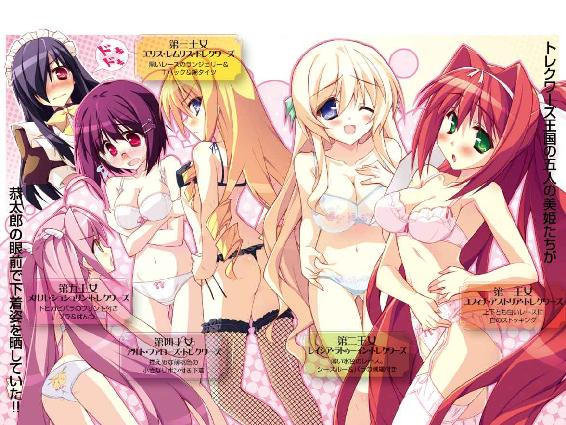

| Ｈ＋Ｐ3 －ひめぱら－ (富士見ファンタジア文庫) | |
| 風見 周 & ひなた 睦月 | |
| 富士見書房 (2011) | |


Ｈ＋Ｐ③
─ひめぱら─
風見 周

富士見ファンタジア文庫
本作品の全部または一部を無断で複製、転載、配信、送信したり、ホームページ上に転載することを禁止します。また、本作品の内容を無断で改変、改ざん等を行うことも禁止します。
本作品購入時にご承諾いただいた規約により、有償・無償にかかわらず本作品を第三者に譲渡することはできません。
本作品を示すサムネイルなどのイメージ画像は、再ダウンロード時に予告なく変更される場合があります。
本作品は縦書きでレイアウトされています。
また、ご覧になるリーディングシステムにより、表示の差が認められることがあります。
口絵・本文イラスト ひなた睦月
プロローグ
（アルトちゃん、ハダカじゃないか!?）
夜。トレクワーズ王城の地下。工房。
第四王女──アルト・ファローズ・トレクワーズの部屋に忍び込んだ神来恭太郎は、ココロの中で悲鳴をあげた。
シーツを被ってベッドの上にアヒル座りしているアルトは、ほとんど全裸だったのだ。
辛うじてぱんつははいているけれど、上半身にはなにもつけていない。シーツがほんの少しでもめくれたら、胸が見えてしまう状態である。
黒髪をおかっぱにしたメガネの王女さまは、引っ込み思案で大人しい性格だ。でも、そんな性格に似合わず、かなり胸が自己主張してる。薄いシーツの布地越しに、巨乳の柔らかなシルエットが浮き彫りになっていて──恭太郎の心臓は跳ね上がってしまった。
しかも、である。
アルトがしていることに気付いて、恭太郎の心臓が止まりかけた。
「はぁ......はぁ...っ...」
息を荒くしている王女の左手は自らの巨乳を触っていて。
もう片方の手は──ぱんつの方に伸びてるっ!?
「はぁ......指が......止まらないよぅ......」
指の動きに合わせて、肩がぴくんぴくんと震えていた。
こ、これはひょっとして......？
恭太郎は思わず生唾を飲み込む。
《ひとりえっち》というヤツではないのか!?
「自分で触るの......こんなに気持ちいいなんて......知らなかった......。はぅ...っ♡」
ぬおお！ やっぱりそうか!? なんてことしてるんだよ、アルトちゃん!!
アルトはえっちなコトとは無縁な女の子だと恭太郎は思っている。
少なくとも、彼女には一度たりとも色っぽく迫られたコトはない。
そんなアルトちゃんが、こんなえっちなコトをしてるなんて──!?
そのギャップが恭太郎をさらに興奮させた。背筋がゾクゾクする。見てはいけないとわかっているのに、瞳を逸らせない。
恭太郎が隠れて見ていることに気付かず、アルトは行為に没頭している。
「こんなことしちゃ......らめなのにぃ......♡ あふっ♡」
アルトの可愛らしい唇から熱い吐息が漏れる。メガネの下の瞳をギュッと閉じて、一心不乱に自分を慰め続けていた。
「気持ちいい......♡ 気持ちいいよぅ......♡」
指の動きはどんどん激しくなる。
やがて、彼女の口から予想外の言葉が漏れた。
しかも、とんでもないコトを口走りはじめた。
「恭太郎......しゃまぁ♡ もっと触って欲しいですぅ......♡」
うわあ、俺のコトを想像してるー!?
「らめぇ......♡ 恭太郎しゃま......そこばっかりイジっちゃ......らめですぅっ♡ 気持ちよすぎて声出ちゃいますぅっ♡」
ぐおおっ！ そーゆー状態で名前を呼ばれると、ドキドキするどころの騒ぎじゃないって！ 心臓が破裂しそうだよ!?
「もっと...シてください......♡」
アルトの言葉に応えて、アルトを押し倒したい衝動に駆られてしまうのだった──
さて。
少年の名は──神来恭太郎。現代日本に生きる高校二年生だ。
彼がなぜ、このようなとんでもない状況に陥ったのか。
それを理解するためには、少しばかり時間を遡らねばならない──
第一章 ドキドキ☆身体測定
年に一度の憂鬱な日がやってきた。
今日という日が来るたびに、
『おまえなんかいらない』って言われてる気分になっちゃう。
どうして、私はお姫さまなんだろう......。
どうして、私は女の子なんだろう......。
どうして、私は魔力が低いんだろう......。
私はこんなにダメダメなのに──
──どうして、恋なんかしちゃったんだろう。
×××
ぱんつ──。
言葉にすればたった三文字だが、実にさまざまなタイプがあるのだなあと神来恭太郎は感動していた。
トレクワーズ王国の五人のお姫さま──国民たちには《トレクワーズの五美姫》と呼ばれている美少女たちが彼の眼前で下着姿を晒しているのだが、全員が異なったタイプのランジェリーを身につけていたのだ。
「ウェスト痩せてるといいな......。甘いもの食べ過ぎちゃったからヤバいのよ......」
赤みがかった長い艶髪を一つに束ねている美少女──第一王女のユフィナ・アストリア・トレクワーズは絶望的な声でうめいた。
彼女が着けているのは正統派とでも言おうか。上下共に白いレースの下着だ。綺麗な脚は白いストッキングに覆われ、ガーターベルトで留められている。
ユフィナは国民の前では猫を被っておしとやかな姫を演じているけれど、実際は活発な女の子だ。そんな彼女にしては色っぽい下着だと思う。
「うふふ、大丈夫ですよ。ユフィナ姉さまは運動もされてますし。......デスクワークばかりの私の方が問題あるかもしれません」
自らのおなかをふにっと摘んで、第二王女のレイシア・ラトゥーイン・トレクワーズはカタチのよい眉を顰めた。
ふんわりとした長い髪を持つ美しい王女さまは、見事なプロポーションを誇るカラダを薄い水色のレース地の下着に包んでいる。
だが、ユフィナよりもレイシアの方が過激だった。シースルーになっていて、滑らかな白い肌が透けているのだ！
ほどこされたバラの刺繍によって、辛うじて重要な部分──胸の先端などは隠されている。だけど、少し動いただけで《たゅんたゅん》と揺れる爆乳の丸みやおへその下のかなりきわどいところまで恭太郎の眼前に晒されていて......ダメだ！ 目を逸らすんだ！
視線を背けた先では、豪奢な金髪を縦ロールにしている気の強そうな第三王女、エリス・レムリス・トレクワーズが腰に手を当てて胸を張っていた。
「フン、この私のバストがどのくらい大きくなっているか見物ですわ。年々サイズアップしてますもの。レイシアに追いつくのも時間の問題ですわねっ」
彼女が纏っているのは、黒いレース地のランジェリーだ。残念ながら、エリスはバストが小さい（胸を張ってるのは少しでも大きく見せるためだろう）。だが、その代わりに脚とおしりがとてつもなく綺麗だった。
美脚は網タイツに包まれており、おしりはＴバックになっている。
ぷりんっ♡ ──そんな擬音をつけたくなるくらいに、見事な張りと丸みをもつヒップだ。あまりの色っぽさに『夢に出そうだな......』と、恭太郎は真剣に思う。
「......わ、私は小さくなって欲しいんだけどな......恥ずかしいから......」
黒髪をおかっぱにしているメガネをかけた第四王女、アルト・ファローズ・トレクワーズは自分の胸を見下ろしてため息を吐いた。
アルトは引っ込み思案で大人しいお姫さまだ。着けている下着も性格と同じく控えめだった。飾り気と言えば、薄桃色の小さなリボンがついているだけ。一国の姫君がつけるには質素な下着だろう。
だが、そんな彼女のバストは正反対に自己主張をしまくっていた。アルトは巨乳なのだ。成長期であることを考えればレイシアやユフィナと肩を並べる──いや、胸を並べるのも時間の問題に違いない。
でも、本人は胸が大きくなって欲しくないんだろうな。若干小さめのブラジャーを着けてるようだ。そのために胸のお肉がむっちりとはみ出していて。おっぱいの柔らかさが強調されまくりで。うん。余計にえろく見えるよ......。
「アルトおねえちゃん、ずるいよー！ いらないなら、メルルにちょーだいっ！」
ツインテールのちっこい美少女──第五王女のメルル・シュシュリン・トレクワーズがむくれたように頬を膨らませた。
彼女は一三歳とは思えないくらいに華奢でぺたんこなカラダつきだ。プチサイズのおしりを覆っているのは、トビカピバラがプリントされた可愛いぱんつ。肩紐のないブラにも、小さなカピバラのマスコットがついている。
元気でおませなメルルには、そんな子どもっぽい下着がすごく似合っていた。
うむ。一口にぱんつと言ってもさまざまなカタチや種類があるのだなあ。実に奥が深いことであるなあ。剣道と同じように、《ぱんつ道》という求道も成立するのかもしれないなあ。うむうむ。
って、感心してる場合かああああああああああああああああああああああっっっ!!
大理石張りの床に突っ伏して、正拳突きをカマしたい気分にかられる。
そんなことをすれば恭太郎の存在が露見してしまうから、絶対にしないけれど。
彼は今、トレクワーズ王宮の女官の服装──現代日本で言うところの《メイドさん》のような格好をしてる。長髪のカツラを被り化粧も施しているのだ。
女装をして姫たちの下着姿を眺めてるなんて、我ながら最低な行動だ。男として恥ずかしくない生き方をしようと考えている恭太郎にとっては、あり得ない状況のオンパレードである。
彼がなぜ、とんでもない状況にあるのか。
その理由は、たった一つしかない。
恭太郎が入れられてしまった後宮のヌシであり、教育係でもある──ピコルだ。
今朝方、ピコルとこんな会話がなされたのである。
早朝。後宮。恭太郎に与えられた部屋。
眠っている王仕さまのベッドに飛び乗るなり、ピコルは大声を出した。
「起きろ、恭太郎！ さっさと目を覚まさぬか、もう朝じゃぞ！」
ピコルは一〇歳くらいの女の子にしか見えない（年齢は八〇〇歳を越えているそうだが）。背は低く、カラダつきは華奢だ。飛び乗られた場所がふとももの上辺りだったので、大して苦しくもなかった。
目覚めた恭太郎は、恐る恐る挨拶を返す。
「............おはようございます」
「なんじゃ？ その不安そうな顔は？ 爽やかな朝じゃと言うのに！」
「ピコル師匠が部屋に来るとろくなことにならないんで......」
「人聞きが悪いのう。吾は、とびきりよい知らせを持ってきてやったのじゃ！」
「......よい知らせ？」
「今日は年に一度行われる、姫さまがたの身体測定の日なのじゃ！ 姫さまは、軍隊の代わりに国を守ってくださる大切なお方じゃ。それゆえ健康管理は欠かせぬのじゃ」
「はあ......。どこがよい知らせなのか、イマイチわからないんですが......」
「恭太郎。おぬしはなにゆえ、トレクワーズの後宮におるのだ？ 申してみよ」
「......お世継ぎを作るため、ですよね」
「そうじゃ。病気の女王さまに代わって、姫さまがたが王位を譲り受けるには、お世継ぎが必要なのじゃ。最強のお世継ぎを作るために召喚された王仕さま──それこそが神来恭太郎なのじゃ!!」
恭太郎は元々は現代日本で暮らしていた。聖綾学園という学校に通う高校二年生だ。
ある朝、目覚めたら突然トレクワーズ王国に召喚されていた。
後宮に入れられ、王国の存亡を賭けてのお世継ぎづくりを命じられたのである。
当初は、一刻も早く日本に帰りたいと願っていた。
身持ちの堅い彼にとって、お姫さまとえっちをするためだけに作られた後宮は、最も居心地の悪い場所なのだ。
だが、お姫さまたちの窮状を知った今では、『トレクワーズ王国のピンチを救ってあげること』が彼の目的となっていた。
「いちいち確認しなくてもいいですよ......。それがどうかしたんですか？」
「どーしたもこーしたもないわ！ 姫さまたちと南国へ旅行に行って二週間ほどが経った。さらに仲も深まったであろうに......おぬしは未だに手を出しておらぬらしいではないか！ トレクワーズ王国には一刻の猶予もないのじゃぞ！」
「王国の窮状ってヤツはわかってますけどね......」
俺にはお世継ぎづくりは手伝えませんよ──そう続ける前に、恭太郎に教鞭を突きつけてピコルはまくし立てた。
「情けない！ 実に情けない！ 普通の男であれば《トレクワーズの五美姫》に迫られればケダモノにならざるを得ないだろうに......。そこで、吾はなにゆえ恭太郎がそんなにヘタレなのか考えてみたのじゃが......結果、おぬしが女体に慣れていないのも原因の一つと判断したのじゃ!!」
「確かに慣れてませんけど！ 慣れなくてもいいですから、そんなもの！」
「というわけで！ 今日は恭太郎に、姫さまがたの身体測定を見学してもらうことにしたのじゃ！」
「人の話を聞けー！」
「題して『ドっキドキ☆身体測定大作戦』なのじゃ！ じっくりと姫さまたちのお身体を拝見して、存分にムラムラするがいいのじゃー！ ふゥはははー！」
「ふゥはははーじゃないですよ！ 見学なんてユフィナが許すわけないでしょう？」
「無論、姫さまがたにはナイショなのじゃ」
恭太郎のカラダの上に乗ったまま、ピコルは手を叩いた。
後宮付きの女官たちが部屋に飛び込んできた。大きめの女官服や、黒髪のカツラ、化粧道具、ブラシなどを抱えている。
「恭太郎には女官の格好になって、身体測定を手伝ってもらう。幸い、おぬしはそこそこ顔立ちが整っておる。女装も似合うじゃろうて。むふふふ......」
「じょ、女装!? そんなのイヤですよ！ 真っ当な男のすることじゃない！」
「安心するのじゃ。据え膳を食わぬ時点で、おぬしのちん○は真っ当ではないわ」
「安心がどこに掛かってる言葉なのかわかりません！ ってか、ちん○とか言うな！」
「かかれ、皆のもの！ 恭太郎を《タロ子ちゃん》に変身させてやるのじゃ！」
「それを言うなら《キョウ子》だろ！ じゃなくて、女装なんてお断りだッ！」
ピコルを突き飛ばし、逃げようとした。
だが、それよりも一瞬早く、ピコルの教鞭が光った。
「【麻痺】！」
か、カラダが動かない!? くそっ、魔法はズルいって！
あ、ダメ！ やめて！ 脱がさないで～～～～～っ!!
そんなこんなで。
（最悪だ......。最悪すぎる......）
現代日本では《カタブツ》だの《サムライ少年》だのと呼ばれていたはずの恭太郎は──女官の格好をさせられて、下着姿の王女たちを眺めるハメに陥っているのである。
当然ながら、スカートなんてはいたのは生まれて初めてだ。構造は袴と大差ない気がするのに、異様にスースーするのは気分の問題だろうか。
（俺は男らしい生き方を望んでいるのに......、どうして正反対のことをしなきゃいけないんだよ......）
姫たちに見つからないよう、壁際に置かれたついたての方を向きながらため息を吐いた。
身体測定の会場となっているのは王宮の広間だ。体重計や身長計など見慣れた器具や、なにに使うのだろう？ メーターがついた水晶玉が設置されている。
（脱出は難しそうだな......）
ユフィナたちがやってきて下着姿になるまで【麻痺】の魔法を解いてくれなかった。
今となっては、迂闊に逃げ出す方が目立って見つかってしまうだろう。
女装して忍び込んでいるなんてコトがバレれば一巻の終わりだ。人として取り返しがつかない。特にユフィナに見つかったら、ぶっ飛ばされるぐらいじゃ済まないだろう。
磨かれた大理石の壁に映る自分の姿を眺める。
しっかりと化粧を施してくれたおかげもあって、今の恭太郎はパッと見には女の子としか思えなかった。声を出さない限りは見つからないに違いない。
（こうなったら仕方ない。終わるまで目立たないようにしなきゃ......）
幸い王女たちは恭太郎には気付いてないようだ。おしゃべりに興じている。
「あれ？ レイシア、そんな下着持ってたっけ？」
ユフィナがレイシアの水色の下着を眺めながら尋ねた。
「新調したんです。何枚も無くなってしまいましたから......」第二王女は悲しげに眉根を寄せて続ける。
「私の下着だって国民の財産なのですから、無駄遣いはしたくないのですが」
「ひょっとして、レイシアもやられちゃったの？」
「はい、お気に入りばかり五枚ほど......」
「私の下着もやられましたわっ！ 犯人を見つけたら叩きのめしてやりますの！」
エリスの言葉を、メルルが継いだ。
「メルルのもなくなっちゃったよー！ ひどいよね！ すっごい可愛かったのに！」
「ひょっとして、アルトも......？」
ユフィナに尋ねられ、気弱な王女は小さく頷いた。
「......はい。一枚だけ無くなってました」
「そっかー。それじゃ全員やられちゃったのね......」
大きな胸を腕に載せるような感じで、ユフィナは腕組みをした。
「まったく......許せないわよね、王宮に下着を盗みに入るなんて！」
ユフィナの言葉に、恭太郎も思わず頷いた。
なんでも、ここ最近、王宮内に下着泥棒が現れているらしいのだ。
トレクワーズ王国には長い歴史がある。お城には王家の財宝も眠っているだろう。そんなお宝には目もくれず、わざわざ危険を冒してまでぱんつを盗むなんて、物好きにもほどがあるというか......呆れるのを通り越して感心してしまう。筋金入りのヘンタイだ。
だが、感心してばかりもいられない。恭太郎はそういう不埒な行為を許せないと思うたちだ。できることなら捕まえてやりたいと思っていた。
王宮を守る近衛騎士団の騎士団長も兼務しているユフィナも気持ちは同じようだ。
「一度だけじゃなく何度も盗まれてるなんて騎士団の名折れよ。絶対に捕まえてやりたいんだけど......なんの証拠も見つからないのよね......」
するとエリスが鼻を鳴らして、
「フン、どうせ犯人は恭太郎に決まってますわ！ 下着を盗むなんて私とお世継ぎを作る相手には相応しくない行為ですの！」
「男の人って王宮に一人しかいないもんね。やっぱり恭太郎おにいちゃんが犯人なのかなー？」
両方の拳をあごの辺りに添えて、メルルは可愛らしく悶えた。
「もぅ、メルルのぱんつだったら、頼まれればいくらでもあげるのにー♡」
ちょっぴり頬を染めて、レイシアも妹に同調する。
「そうですね。私の下着でよければ差し上げます......♡」
「恭太郎さま、なのかな......？ 私のなんて可愛くないのに......」
アルトは自分の下着を見下ろしてポツリと呟く。嘆いているセリフにも聞こえるけれど、なぜだか嫌そうには見えない表情だった。
いやいや、待ってくれ。俺は下着なんかに興味ないから！ ──思い切りツッコミを入れたいができない。声を出せないのがもどかしい。
「なにを喜んでますのっ。下着なんかより、この私自身に興味を持つべきですわ！ そこが許せませんの！ ユフィナお姉さま、恭太郎を問い詰めてみたんですの？」
「ううん。まだ聞いてないわ」
ユフィナは腕組みをしたまま答える。
「あれれー？ どうしたの、ユフィナおねえちゃん。いつもだったら真っ先に『犯人は恭太郎よー』とか叫んで追い回してるとこなのにっ。......あ、ひょっとして、恭太郎おにいちゃんを好きになっちゃったの？」
メルルの言葉を聞いて、レイシアとエリスがなぜか焦ったように尋ねた。
「そ、そうなんですか？」「きょ、恭太郎のことが好きなんですの？」
「ちちち、違うわよ！ あんなヤツ、これっぽっちも好きじゃないってば！」
顔を赤くしてユフィナは否定する。
「あんなスケベでヘンタイな男、私は大っ嫌いよ！ 好きになる要素なんてないし！」
......そこまで否定されると、ちょっぴり切ないな。
ユフィナは赤くなった頬を隠すようにそっぽを向きながら、
「身体測定が終わったら聞いてみるわ。ま、さすがにヘンタイの恭太郎でも、ぱんつを盗んで喜ぶようなドヘンタイだとは思わないけど......」
第一王女の言葉に、恭太郎は身悶えた。
ぐおおぉぉ！ 俺は女装して身体測定に忍び込んでるよ!! 婦女子の下着を盗んで喜ぶヘンタイと同じくらいドヘンタイだ！
しかも──恭太郎はスカートを着けた自分の下半身を見下ろす。
ピコルに無理矢理女装させられた際、ぱんつも女物に替えられてしまった。女の子のぱんつというのはとても小さくて、今にもなにかが『こんにちは』してしまいそうな状況なのだ。
そのことが知られたら『下着を盗んで自分ではいちゃう女装趣味の男』と勘違いされるだろう。幻滅されるぐらいじゃ済まない。
絶対にココにいることがバレるわけにはいかないぞ......!!
メルルちゃんは楽しげにお喋りを続けてる。
「ねえねえ、ぱんつ泥棒の話なんかより、《サンキスタの祝祭》の話しよーよ。おねえちゃんたち、どうするか決めた？」
《サンキスタの祝祭》ってなんだ？ 突然、謎ワードが飛び出したぞ？
「お仕事が忙しくて、まだなにもできてないんです......」
「私はいろいろと研究中ですわっ！ 恭太郎に目にもの見せてやりますの！」
双子の姫さまがリアクションを返す。
......ん？ 俺がなにかさせられるのか？
《サンキスタの祝祭》とはなんなのか非常に気になる。尋ねたい気持ちも山々だ。
だが、今はそれどころじゃないよな。見つからないことに専念せねば......。
いいか、神来恭太郎......。忍者のように気配を消すんだ......。俺は空気だ......。誰にも見えない存在なんだ......。
「あれ、あなた......？」
ユフィナが声を掛けてきた!? ちっとも気配が消せてないじゃないか！
「見ない顔ね......？」
「きょ、今日から王宮に仕えることになりました」
できるだけ甲高い声を出して答える。
「ふぅん、よろしくね」
「よ、よろしくお願いします」
「......なんだか声がヘンじゃない？」
「風邪気味なんです。げふんげふん」
「てゆうか、どこかで聞いたことあるような......？」
「気のせいです。間違いです。空耳です。他人のそら似です」
「あやしぃ......」
ユフィナがジト目で睨み付けてきた。ゆっくりと近づいてくる。
だくだくだくだく──恭太郎の背中を冷や汗が伝った。
マズイマズイマズイ。早くも見つかってしまうー!?
......だが、すんでのところで救いの神が現れた。
「やあやあ、これはこれは姫さまがた！ 準備はお済みのようですな！」
ピコルが広間へとやってきたのだ。いつもの白いローブに加え、聴診器＆頭には反射鏡をつけている。
「さっそく身体測定をはじめさせていただきますのじゃ！ これ新入り、吾を手伝うのじゃ！」
後宮のヌシは恭太郎をついたてで囲まれたスペースへと引っ張っていく。おかげでユフィナの追及を免れることができた。
ついたての内側は、病院の診察室のようだった。事務机の脇に円いスツールが並べておいてある。傍らには小さなベッドまであった。
ピコルは飛び乗るようにして椅子に座りつつ、恭太郎にニヤリと下卑た笑みを見せる。
「どうじゃ？ 姫さまがたの下着姿は堪能したか？」
「それどころじゃないですよ！ いつバレるか不安で不安で......。もう終わりにしてください！」
「なにを言うのじゃ。本番はこれからなのじゃからな」
ピコルは木製のクリップボードを渡してきた。
「姫さまがたは、外で体重や身長を測っておられる。その間にお一人ずつお呼びして、吾が問診を行うのじゃ。恭太郎は、その内容を書き留めるのじゃ」
「って、ピコル師匠がやるんですか？」
「正しいえっちの仕方──房中術は医術と同源なのじゃ。ゆえに吾は医療の知識も豊富じゃ。問題はなかろう？」
「問題ありまくりですよ！」
師匠がお医者さんの役なんて、なにをしでかすかわかったもんじゃない！
だが、恭太郎が止める間もなく、
「では、ユフィナさま！ お入りくだされ！」
ついたての内側へ第一王女が入ってきてしまう。
恭太郎は慌ててクリップボードで顔を隠した。
ほどなくピコルによる問診が始まったのだが──恭太郎の予感は的中してしまった。
危惧していた通り、とんでもなくエロいものになってしまったのだ！
「そこへお座りくだされ。まずは聴診をしますのじゃ」
スツールに腰掛けるユフィナ。
ピコルは聴診器を耳につけ、集音器を王女の巨乳に近づけていく。
そして──ふにふにふにっ。
聴診器で胸をイジりだしたのだ。
「な、なにするのよ、ピコル！ くすぐったいでしょ！」
「お静かになさいませ。音が聞こえませぬのじゃ」
仕方なく、ユフィナは口を閉じた。
ピコルは真剣な表情のままで、集音器でユフィナの胸元を弄び続ける。
敏感な部分を探すように胸の上を滑らせたり、ぎゅ～っと押しつけたり。
声を出すなと言われたからだろう。ユフィナはちょっぴり顔を赤くして、唇を噛んでいる。両手はピンと伸ばして、スツールの縁を握りしめていた。
「ううむ、心音が聞き取りづらいですのぅ......」
わざとらしいセリフを吐きながら、ピコルは集音器をユフィナのブラジャーの中に滑り込ませた。
聴診器というものは、診察時に医師が女性患者の胸に触れてしまわないようにという配慮から作られたものだと聞いたことがある。
だから、ある意味正しい使い方なのかもしれないが......。
くにくにくにくにっ──ブラの中に突っ込んだ聴診器を小刻みに動かす。
ぎゅーっと唇を噛んで、スツールを握りしめて、脚をモジモジさせて──ユフィナは懸命に刺激に耐えていた。だが、堪えきれず吐息が漏れてしまう。
「......んっ♡」
普段のユフィナからは想像もつかない甘い吐息に、恭太郎はぞくっとしてしまった。というか、エロすぎるって!!
「これ、女官よ。しっかり書き留めるのじゃ」
なにを書けって言うんだよ!?
これだけで恭太郎の精神に相当なダメージを与えていたのだが、続いて行ったレイシアの問診もヤバかった。
聴診器によるムニムニ攻撃も非常にエロかったのだが......特に問診の内容が衝撃的だったのだ。
一般的な健康状態に対する質問の後で、ピコルがとんでもないことを尋ねたのである。
「では、次に......夜の生活についてお尋ねしますのじゃ。レイシアさまは《ひとりえっち》はなさいますかな？」
なんつーとんでもないコト質問してんだ!?
ぼわゎっと音が出そうな勢いで、レイシアは顔を真っ赤にしてうつむいてしまった。
「......そんなこと......恥ずかしくて......こ、答えられません」
「恥ずかしがることはありませんのじゃ。ここには吾と女官しかおりませぬ。女同士のヒミツというヤツですじゃ」
待てよ！ 俺が後ろに立ってるんだよ!!
長い間ためらった後で......レイシアは口を開いた。
大きすぎる胸の前で人差し指を突き合わせつつ、
「えっと......あの...その..................す、少しだけ......」
根が真面目だからだろう。消え入りそうな声で真剣に答える。
「少しというと、頻度はどのくらいですかな？」
「つ、月に二度くらいです......。あ、でも......」
さらに顔を真っ赤にさせて、レイシアは恥ずかしそうに呟く。
「キュアナから帰って来てからは、その......ちょっぴり回数が増えてしまったかもしれません......」
キュアナというのは、王女さまたちと旅行した南国の街の名だ。
レイシアの言葉を聞いて、ピコルは満足そうに頷く。
「むふふ、キュアナでなにかあった、ということですかのう......？」
意味ありげに笑った後で、重ねてピコルは質問する。
「時に、レイシアさまはどんな風にひとりえっちをなさるのですかな？」
聞くな!! ──後頭部を叩いてやりたいが、バレてしまうのでできない。
「い、言わなければいけませんか......？」
「これも大切な問診の一部ですじゃ」
「えっと......それは、その......。夜、お布団に入って考えごとをしていると、なんだかドキドキしてしまって......指で自分を慰めるというか......」
恥ずかしすぎるのだろう。薄い水色の下着に包まれた胸元までほんのり赤くなってしまっていた。
「ほほう。その場合《オカズ》は恭太郎ですかな？」
「............あぅ」
「お世継ぎづくりの相手のことを考えてしまうのは正常な証拠ですじゃ。で、なにを想像してますのじゃ？」
レイシアは耳の先まで真っ赤に染めたまま──ポツリと呟く。
「きょ....................................................................................恭太郎さまです」
「これ、女官よ。しっかり書き留めるのじゃ」
『レイシアは、ときどき俺のことを思い出しつつひとりえっちする』、と。
書・け・る・か、そんなも～～～～んッ!!
恭太郎を想像することに特別な意味はないだろう。お世継ぎづくりの相手だから思い浮かべているにすぎないと思う。王宮には他に男がいないのだ。
それでもドキドキしちゃうって！ レイシアの顔が真っ直ぐ見られなくなっちゃうよ！
悶えまくる恭太郎をよそに、ピコルはさらに真面目な口調で余計なことを言う。
「ひとりえっちは、お世継ぎづくりのために必要な予行演習ですじゃ」
「わ、悪いことではないんですね......。よかった......。私はイケナイ王女だって、ずっと思ってました......」
「むしろ良いことですのじゃ。いざというとき恭太郎を受け入れやすくするためにも存分に行いなされ。絶頂に達するときに、恭太郎の名を叫ぶのがオススメですじゃ」
「......わかりました、今夜からそうしますっ」
頬を染めながらも、レイシアは真剣な表情でコクコク頷いている。
彼女は真面目だから実践してしまうかもしれない。そうなれば「恭太郎さまぁッ♡」なんて叫びつつレイシアは気をやることに──ぬおおお、なにを想像してるんだ、神来恭太郎ォ!! っていうか、殴りたい！ ピコルの後頭部をクリップボードが割れるほど殴りたいッ!!
残る姫さまもそれぞれにえっちな問診だったのだが、特に問題だったのはメルルだろうか。終わり際に、ピコルがこんなことを尋ねたのだ。
「メルルさま。去年の身体測定で気にしてらっしゃった、おしりのアレはどうなりましたかな？」
「あ、この一年でほとんど無くなっちゃったよ！ よかったぁ、恭太郎おにいちゃんが来る前に薄くなってくれて......。見られちゃったら恥ずかしいもんね♪」
メルルは安堵の息をもらしている。
おしりのアレってなんだろう......？ 首を傾げる恭太郎をよそに、二人は会話を続ける。
「一応、確認させていただいてよろしいですかな？」
「いいよ～」
「では、そこのベッドにうつぶせで横になってくだされ」
下着姿のメルルがベッドに横たわった。ぱんつのおしりにプリントされたトビカピバラのマスコットが恭太郎に笑顔を向けている。
「これ、女官よ。メルルさまのぱんつをおろすのじゃ」
（......ええっ、俺が!?）
驚いて振り向くと、まるで医師のような真面目な顔でピコルは頷いた。
「早くやるのじゃ。姫さまを待たせるでない」
嫌がって抗議すれば、メルルが不審に思うだろう。正体がバレてしまうかもしれない。
くそっ......。やるしかないのか......。
（これは医療行為だと考えるんだ。きっと、おしりをケガしてて、その具合を見ようとしてる。そうに違いない！ だから、俺がぱんつを脱がすのも治療の一環なんだ！）
必死の自己暗示で、自分を誤魔化そうとしたのであるが──
「メルルさまは、おしりが青いのを気にしておられる。色が薄くなったかどうか確認するのじゃ」
「ししょー、あんまり言わないでよ～～」
メルルは両足をジタバタさせて恥ずかしがる。
おしりが青い......？
ああ、蒙古斑のコトか。子どもの頃だけ現れる青いアザのようなアレだな。
あははは、病気でもなんでもないですね......。
自己暗示は失敗。猛烈にドキドキしながら、メルルのぱんつをおろすことになった。
ぱんつのゴムに指をかけ、下にずらしていく。
恭太郎の眼前に、ぷりんっとした可愛いおしりが姿を現す。
鼓動が跳ね上がるのを感じつつ、ふとももの付け根くらいまでぱんつをおろした。
お肌はすべすべで、柔らかそうで──こんなの直視できないって!!
横を向いた恭太郎の耳に、ピコルの声が届く。
「ほほぅ、もうすっかり消えたようですのぅ」
「でしょでしょ？ これなら恭太郎おにいちゃんにも見せられるよねっ♪」
「もちろんですじゃ。たっぷりと拝ませてやりなされ」
なに焚きつけてんだ！ メルルちゃんはオマセな上に素直だから、本当に実行しちゃうんだよ！ 勘弁してくれ！
だが、ピコルはもっと恐ろしいことを言い出した。
「時にメルルさま。アザが消えた後、ちゃんとおしりを揉みましたかな？」
「え？ おしりを？ ううん、揉んでないよ？ どしてかな？」
「なんと、それはマズイですのぅ......。消えた後に一度よく揉まないと、再び現れてしまうのですじゃ!!」
そんなの聞いたことねえよ!! 明らかにウソだろ!!
ところが、素直な第五王女はすっかり信じてしまったようだ。
「困るー！ そんなの困るよー！ 揉んで揉んで早くもんでー！」
「もちろんですじゃ。これ、女官。さっそくおしりを揉んで差し上げるのじゃ。ココロを込めて、たっぷりとな......むふふふ」
『ふざけるな！ 冗談じゃない！』と絶叫しなかった自分の精神力を褒めてもらいたい。
メルルは涙目になって、懇願してくる。
「お願いね。いっぱい揉んでねっ」
おしりをちょっと持ち上げて、ぷりぷり振るのだから堪らない。
動揺しまくりな気持ちを懸命に落ち着けて、恭太郎はゆっくりとメルルちゃんのおしりに手を伸ばす。
本当は、そんなことしたくない。嫁入り前の婦女子の臀部を揉みしだくなんてことをしたら死をもって償う他ないだろう。
だけど、今にもメルルちゃんは泣き出しそうだ。やってあげなきゃ、ここはおさまらないだろうな......。
そ～～～～っと手を近づけていく。
やがて指先がおしりに触れた。
見た目通りすべすべでぷにぷにで。肌が指に吸い付くようで。最高に触り心地がよかった。感触だけで気が遠くなりそうだ。
「ほれほれ、しっかりと揉むのじゃ！ もう二度と青いアザが出ないようになっ」
揉まなくたって二度と出ませんよっ！
ココロの中で悪態を吐きつつ、指先でメルルちゃんのヒップを軽く摘む。
──もにっ♡
「......んっ♡」
へ、ヘンな声出さないでくれ！ メルルちゃんはリアクションが色っぽすぎるよ!!
「馬鹿者！ そんな揉み方ではダメじゃ！ なっとらん！ 吾がおしりの愛撫法を伝授してやるのじゃ！」
ピコル師匠が教鞭を振り回す。
「臀部には座骨神経が走っておる。非常に敏感な部分なのじゃ。うまく愛撫すれば気持ちよくなるのじゃ！ もっと荒々しく！ 時にソフトに！ 王女さまの反応を確かめつつ、さまざまな刺激を与えて、性感を高めていくのじゃ！」
目的が変わってんだろ!? 後宮の教育係としては正しい指導かもしれないけど！
声を出して抗議はできない。ええい、ままよ！ 言われた通りにやるしかないのか！
ギュッと揉んだり、手のひらでさすったり、尾骨の辺りをくすぐったり──ピコルに命じられるままに、おしりを揉みまくった。
「あ、ダメっ♡ そんなっ♡」
メルルちゃんは恭太郎の手の動きにあわせて、華奢なカラダをぴくぴくと震わせる。
「あ、すごいっ♡ んんっ♡ やっ、メルル、こんなの、知らないよぅ♡」
両手で顔を覆って、大きく首を振る。
だけど、おしりだけは『もっとして』っておねだりするみたいに、恭太郎の方に向けていた。
たっぷり五分ほど、おしりをマッサージし続けただろうか。
ようやく、ピコルが「もういいじゃろう」と終了を宣言した。
「こ、これで、おしりの青いの......出ないんだよね......？」
「もちろんですじゃ。ご安心くだされ」
「おしり揉んでくれて、ありがとね、新入りの女官さん。なんていうか......その......メルル、すっごく感じちゃった♡ やんやん、恥ずかしっ♡」
大急ぎでぱんつを上げて、メルルちゃんはついたての向こうへ走っていってしまった。
ピコル師匠は肩を震わせて笑いを堪えている。
「恭太郎、おぬしはなかなか素質があるのう。すっかりメルルさまをメロメロにしてしまったようじゃ！ やはり女神さまが選んだ最強の王仕さまだけはある！」
「褒められてもうれしくないですって！」
「よっ、ゴールドフィンガー☆恭太郎！」
「ヒーローみたいに言うな！ その名前でもう一度呼んだら、師匠とて斬ります！」
「ひどい！ 幼いメルルさまのおしりを揉みまくっておいて、なんという言い草じゃ！ おぬしも男なら責任を取れ！」
「ぬおおお！ 人聞きの悪いこと言わないでくれえええええええええぇぇぇ!!」
恭太郎は耳をふさいで、壁にヘッドバットする。
問診だけで既に恭太郎の精神力は限界。これがＲＰＧだったらワクがオレンジ色に変わっている状態だ。
ところが、メインイベントはそこからだった。
体重と身長を測り終えたトレクワーズの五美姫たちは、続けてスリーサイズを測ることになったのであるが──
「では、新入り。よろしく頼むのじゃ」
ピコルは恭太郎にメジャーを渡してきたのである。
「（ちょ、ちょっと!! ピコル師匠!!）」
さすがに抗議の声を上げた。ピコルの耳元に顔を寄せ、小声で怒鳴る。
「（できるわけないでしょう、そんなこと！）」
「（断るというなら......仕方ないのじゃ。恭太郎の正体をバラすしかないのう）」
「（うぐっ......）」
「（問診の内容を見られていたと知ったら、姫さまがたはどう思われるか......）」
「（完全に脅迫じゃないですか！）」
「（その通りじゃが、なにか？）」
言い返そうと口をパクパク動かしたけれど、言葉が見つからない。
やるしか、ないのか......。
こんなことなら身体測定が始まる前に逃げ出しとけばよかったよ......。その方が、見つかったとしても傷は浅かったに違いないのに......。後悔先に立たずとはこのことだ......。
巻き尺を握りしめ、恭太郎は絶望的な雰囲気で下着姿の姫たちに歩み寄った。見る人が見れば、明らかな死相が浮かんでいることに気付いたであろう。
『女の子のスリーサイズを測る』
多くの男子がそうだと思うのだが、恭太郎には一度も経験のないことだ。
すぐにそれが、とんでもない至難の業であることに気付かされた。
──ウェストはまだマシだ。
スツールに腰掛けた恭太郎の前に、下着姿のユフィナが立った。
「ううー......ウェスト増えちゃってるかな......？ 太ってないといいな......」
不安げに呟きながら、無防備なおなかを晒してくる。
白くてすべすべしたおなかや、可愛いおへそが目の前にあって......思わず生唾を飲みながら恭太郎は背中側に手を回した。
そのときおなかに抱きつくような体勢になってしまう。
ふわっと甘いようなユフィナの香りが鼻をくすぐって、一瞬だけ気が遠くなった。
でも、懸命に正気を保ちつつ、メジャーの数値を読んだ。
「（ろ、六一センチ......）」
クリップボードを抱えているピコルに小声で伝える。
「六一センチ!?」
ユフィナはがくーっとうなだれた。
「やっぱり太ってる！ 六〇センチ台に突入しちゃった......。甘いもの食べ過ぎたせいよ。これも《サンキスタの祝祭》が悪いんだわ」
ヘンな汗をかきまくりな恭太郎にも気付かず、ユフィナはこの世が終わったように嘆き続けていた。
──より危険なのは、ヒップの測定である。
「さあ、測りなさい！ この私の素晴らしいプロポーションを数値で示すのですわ！」
エリスが自信満々に言い放ちつつ、恭太郎にＴバックのおしりを向けてくる。
あまりの衝撃に心臓が口から飛び出るかと思った。
美しすぎるヒップが目の前にあるのだ。ガーターベルト＆網タイツに包まれた脚もナマツバもの。
意を決し、エリスのおしりを抱きしめるように腕を回した。
吐息が掛かってしまいそうな距離にエリスのヒップがある。
あまり見ないように気をつけて、急いで巻き尺を渡した。
「ヒップは、おしりの最も高い部分を測るのじゃ」
できるだけ肌に触れないようにしつつ、メジャーの目盛りを合わせる。
「（は、八〇センチ......！）」
「八〇ですの？ 大きさは去年と変わりませんわね。ま、いいですわ。あまりヒップが大きくなっては困りますもの。大切なのはバランスですのよ、おほほほほ！」
高笑いするエリスの横で、恭太郎は遠い目をしていた。口からは人として出てはいけないなにかがニョロリと顔を出していたことだろう。
身体測定がこれほどに恐ろしいものとは知らなかったよ......。できれば、一生知らずに過ごしたかった......。
恭太郎は既にグロッキー状態だったのだが。
──最もヤバかったのは、バストの測定である。
「では、最後にバストを測りますのじゃ。姫さまがた、ブラをお取りくだされ」
って、なにを言い出すんだ、ピコル師匠おおおおぉぉぉぉぉぉぉぉッ!?
驚いて後宮のヌシを振り返る。
ムリムリ！ 絶対ムリ！ それは勘弁して！ ──そんな気持ちを伝えるために、懸命に首を横に振って見せたのに......ちくしょう！ 無視しやがった!!
「去年までブラ外してたっけ？」
ユフィナは首を傾げていたが、エリスはフンと鼻を鳴らした。
「どちらでもいいですわ！ さっさと測ってくださいまし！ どれだけ私の胸が大きくなったのか早く知りたいですわ！」
黒いレース地のブラジャーを勢いよく脱ぎ捨ててしまう。
結局、エリスに従うように全員がブラを取ってしまった。
慌てて顔を背ける恭太郎。
ナマ乳のサイズをメジャーで測れって!? そんなことできるわけないだろ！
慌てふためいているウチに、目の前に誰かが立つ気配があった。
「お、お願いします......」
気弱で大人しいアルトちゃんは、女同士でも恥ずかしいのだろう（実際は女同士じゃないけど）。腕で抱えるようにして恥ずかしそうにおっぱいを隠していた。
おかげで見ずに済んだのだが、ピコル師匠がまた余計なコトを言う。
「アルトさま。隠していては測れませんぞ」
「は、はい......」
ちょっぴり頬を染めた第四王女は、ゆっくりと胸を隠していた腕を離した。
恭太郎は大急ぎでまぶたを閉じる。
って、目を閉じたら測れないぞ!? どどど、どうすればいいんだよ!?
悩んだ末に、恭太郎は一つの天啓を得た。
（......そうだ！ 俺は剣士じゃないか！ 達人は目隠しでも、心眼を用いて敵の刃を避けるという！ 心眼だ！ 俺も心眼でバストを測ればいいんだッ!!）
恭太郎は覚悟を決めた。
（古の剣豪たちよ、俺に力を与えたまえ!!）
目をつぶったまま、メジャーを持つ手を伸ばす。
極力カラダに触れないように気をつけながら、アルトちゃんの胸元にメジャーを渡そうとするのだが......なかなかうまくいかない。
手探りで巻き尺と格闘しているうちに、小さな悲鳴が聞こえてきた。
「はうぅっ!?」
今の声はアルトちゃんだよな？ いったいなにがあったんだ？
うっすらと目を開いてみる。メジャーの目盛りが目の前に見えた。
その数値は──二メートル八〇センチ!?
アルトちゃんは大人しい性格に似合わず、かなり胸が大きい方だ。でも、さすがに二メートルオーバーは爆乳にもほどがある！
まぶたを開いて、第四王女のカラダを見て、恭太郎は顎が外れるかと思った。
「た、助けてくださぁい......」
いつのまにか恭太郎はアルトを巻き尺で縛り上げてしまっていたのだ！
なにがどうなったのかわからないが、ＳＭっぽい縛り方になっていた。
辛うじて、胸の大事な部分は帯状のメジャーによって隠されている。
だが、縛られたことで巨乳が強調されてしまって凄まじくエロかった。
心眼恐るべし！ って、言ってる場合かあああああッ!!
「やるのう新入り、ＧＪ！」
ピコル師匠が笑いながら親指を立てる。
だが、その声は遠く聞こえていた。
これまでに散々えっちな刺激を受け続けていた恭太郎は、ここで限界を迎えたのだ。
ぷばっっっっ！ ──盛大に鼻血を噴いて、気絶してしまったのである。
薄れゆく意識の中で、恭太郎は姉に問うた。
実の姉である桜子は、彼を亡き母親に代わって厳格に育てた。恭太郎がお堅いサムライ少年になってしまったのは、全て姉が元凶である。
姉上......。お尋ねしたいことがあります......。
女装して身体測定に忍び込んで下着姿を見まくり、乙女のヒミツを盗み聞きし、挙げ句の果てには巻き尺で女の子を縛り上げて、鼻血を噴いてぶっ倒れる──そんな男は、神来家の嫡子に相応しいでしょうか？
ダメに決まってますよね。しくしくしくしく......。
再び目覚めたとき、恭太郎は身体測定の会場となっていた広場の片隅に寝かされていた。
ゆっくりと上半身を起こす。相変わらず女官の服装のままだった。鼻にティッシュが詰められているのが情けない。
てっきり正体がバレたに違いないと思ったのだが、なんとか助かったようだ。
ドレスを身につけたお姫さまたちが、離れた場所できゃあきゃあと騒いでいる。
「バストはあまり大きくなってませんでしたわね......。でも、ここからが本番ですわ！ 魔力はレイシアには負けませんわよ！」
エリスが宣戦布告でもするみたいに、双子の姉を指さしていた。
「うふふ、私だって負けませんよ。魔法の訓練を続けてきたんですからね」
やんわりと微笑みながら、第二王女はバスケットボールほどもある水晶玉の前に立った。水晶玉には肺活量計みたいなメーターがついている。
「レイシアさま、お願いいたします」
クリップボードを抱えた女官の声を合図に、レイシアはクリスタルの珠に両手をかざした。
「天にまします我が女神......。清き流れの神、メディアよ。我に祝福を与えたまえ......」
王女の言葉に合わせ、風が渦巻きはじめる。ふんわりとした髪が美しくなびいた。
同時に水晶玉が目映く輝きだす。光はみるみる強くなり、直視できないほどとなった。
光が最高潮に達したとき、女官がメーターの数値を読み上げた。
「レイシアさまは──三五万二〇〇〇マギナです！」
それを聞いたエリスの頬が微かに引きつった。
「お、思ったよりもやりますわね......」
そばで見ていたメルルやユフィナも驚いたように瞳を丸くする。
「レイシアおねえちゃん、すごーい！」「私と二万しか違わないじゃない！ これはうかうかしてられないわね......」
恭太郎は人差し指で頬を掻いた。
......どこがすごいんだ？ というか、彼女たちはなにをしてるんだろう？
「目覚めたようじゃな。まったく......鼻血を噴いて倒れるとは情けない......。それでも後宮の王仕かっ！」
ピコル師匠がブツクサ文句を言いながら近寄ってきた。
「俺には刺激が強すぎますよ！ ......ところで、なにやってるんですか、これ」
「ん？ なんじゃ、《魔力測定》も知らぬのか。ヘタレの上に無知とは救えぬのう」
師匠は呆れたように肩を竦めつつ、
「魔法の才能──魔力は専用の機械を用いれば数値化することができるのじゃよ。《魔力値》といって、単位は《マギナ》で表される。姫さまがたの魔力の大きさを把握することは国家的にも非常に重要なことなのじゃ」
「彼女たちが軍隊の代わりに国を守ってるから、ですよね」
「その通り。姫さまの魔力が、すなわちトレクワーズ王国の戦力とイコールなのじゃ。姫さまがたのスリーサイズは公表せぬが、魔力値は今夜のニュースでトップ扱いで発表されるじゃろう。国民の一大関心事なのじゃ」
一部の国民にとってはスリーサイズの方が重要かもしれぬがのう──そう軽口を叩いて、ピコル師匠は声を潜めて笑った。
この世界には受像器という、現代日本でいうところのテレビのようなものがある。アニメだけでなく、ニュース番組も放映されているようだ。
「レイシアの三五万いくつかって数値は高いんですか？」
「口を慎め、愚か者！ 高いなんてもんじゃないのじゃ！ 普通の女子は一〇〇にも満たぬ！ 精強で知られるカルタギア帝国軍の兵士でも一万を超えるものは数えるほど！ 後宮のヌシたる吾ですら数万程度なのじゃ！」
「はあ......」
なんだか途方もない話なので、ため息を吐くことしかできなかった。
ふと見れば、今度はエリスが魔力を測定している。
「エリスさま──三五万一〇〇〇マギナです！」
「一〇〇〇!? 見間違いではなくって!?」
「ま、間違いございません......」
「うふふふ、双子とはいえ、お姉さんの面目は保てましたね」
「きぃいいいいい!! またレイシアに負けましたわ～～～～っ!! 悔しいぃぃ!!」
にこやかに微笑むレイシアの隣で、ドリル状の縦ロールを振り乱して第三王女は地団駄を踏んでいる。
広大な平原を埋め尽くすほどの敵軍兵士を、ユフィナたちが軽々となぎ払うようすを見たことがある。凄まじいパワーだと感動したものだが......その戦闘能力は数値にも表れているんだな。
「身体測定はおしまいじゃ。存分に姫さまがたの女体を堪能できたことじゃろう。鼻血を噴いて倒れたことは適当に誤魔化しておいたから、正体のバレぬうちに脱出するがよい」
野良犬でも追い払うように、師匠はシッシッと手を振った。
無理矢理連れてきておいて、なんつー扱いだよ......。
まあいいか。バレずに済んでよかった。
やれやれとため息を吐いて、恭太郎は広間を後にしようとした。
──そこで気を抜いてしまったのが、いけなかったのかもしれない。
「あ、あの......」
広間の出入り口となっている巨大な扉の辺りでアルトが声を掛けてきた。
「お身体は大丈夫ですか？ ピコルさまは心配ないっておっしゃってましたけど......」
胸の前で両手を組み、心配そうな上目遣いで見つめてくる。
とっさに甲高い声を出して返事をした。
「も、もう平気です。鼻血が出てしまう持病なんです。ご心配おかけして申し訳ございません」
我ながら気持ち悪い声色だ。姉上が聞いたら『私の育て方が間違ってました......。斯くなる上は、恭太郎を殺して私も死ぬ！』なんて斬りかかって来かねない。
だが、メガネの第四王女は不審には思わなかったようだ。小さく安堵の息を吐いて、
「そうですか......。それならいいんです。ごめんなさい。私のせいで......」
お姫さまだってのに、新入りの女官に扮している恭太郎に頭を下げた。
（というか、アルトちゃんはまったく悪くない。むしろ、悪いのは俺だ。俺の方こそ心配させて済まなかった）
ちゃんと謝れないのが申し訳ないな。
しかも──おや？ と思う。
アルトちゃん、なんだかすごく元気ないみたいだな。元々大人しいタイプだけど......今日は特別しょんぼりして見える。
魔力測定器の前にはメルルちゃんが立っていた。
「うにゅ～～～～～っ!!」
ヘンな掛け声と共に気合いを入れると、水晶玉が目映い光を放ち始める。
姉姫たちは、メルルを口々に応援していた。
あまりにも彼女たちと雰囲気が違いすぎることが気になって、つい尋ねてしまった。
「アルトさまは、ご一緒なさらないんですか？」
すると、アルトちゃんはさらに悲しげな表情になった。眉をハの字にして、絞り出すような声で呟く。
「新しく入ってきた方だから知らないんですね......。私はみんなと同じ測定器じゃ魔力を計れないんです......」
躊躇うようにキュッと唇を噛んだ後で、気弱な王女さまは続けた。
「私だけ、魔力がすごく弱いから......」
しまった......！ ハッとなって口を手で押さえた。
アルトちゃんは《トレクワーズの五美姫》の中で、唯一魔力が弱い。だから、敵と戦うこともできないんだ。俺はそのことを知っていたはずなのに......なんてコトを尋ねちまったんだ!!
ショックを受けたのだろうか。アルトちゃんは今にも泣き出しそうだ。メガネの奥の瞳がちょっぴり潤んでいるように見える。
いてもたってもいられない気分になって、思わず恭太郎はアルトの髪を撫でた。
「すまない、アルトちゃん。無神経なことを言っちゃって......」
「いえ、いいんですよ、恭太郎さま。私の魔力が低いのは事実ですから......」
悲しげに呟いた後で、アルトちゃんは固まった。
「って、恭太郎さまっ!?」
「...... !!」
!!」
そのとき、タイミング悪くユフィナたちが振り返った。
「さあ、次はアルトの番よ！ 大丈夫、アルトの魔力も成長してるわよ！ ──って、恭太郎がどうかしたの？」
アルトちゃんは口をパクパクさせて、恭太郎を指さした。
「新入りの女官さんじゃなくて......恭太郎さまだったんですね......」
「ち、違う、俺、じゃなくて、私は女官です！ 恭太郎なんかじゃありません！」
慌てて取り繕おうと首を勢いよく横に振った刹那──ぱさり、と。
それはまるで、生命が尽きる瞬間を告げる最後の一葉のように。長髪のヅラが床に落ちた。
「きょ.........恭太郎～～～～～～～～～～っっっ!?」
ユフィナの絶叫がお城を揺るがした。
「まさか、その格好で身体測定をずっと見てたの!?」
「そそそ、そんなワケないだろ!?」
「ふふふふふ......」
ユフィナが不気味な笑い声をあげる。
ゆら～り......。幽鬼のように揺れながら、第一王女が恭太郎に近づいてきた。
「このドヘンタイ......!! 今日という今日は許さないからね......!!」
「ま、待て！ 落ち着け！ これには理由があるんだ!! ピコル師匠、説明してやってくださいよ！」
「......おやおや？ あんなところに、ドラゴンの幼生が飛んでるのじゃ。ドラゴンと言えど子どものうちはかわいいのう」
「なんですか、そのわざとらしい無視の仕方は!? 竜なんていないし！」
「来たれ、【烈炎神剣】！」
ユフィナの右腕に巨大な手甲が装着され、直後に炎に包まれた大剣が手の中に現れる。
その後の出来事を、恭太郎には事細かに語ることはできない。
理由は二つある。
一つは、あまりにもひどいバイオレンス描写が続くためだ。読んだ人に『食欲不振』『情緒不安定』などの悪影響を及ぼす危険があるだろう。
そして、もう一つは──
最初の一撃で、恭太郎の意識がほとんど失われてしまったためである。
『【火竜大連覇】!!』
それは近隣諸国から《烈火の王女》と呼ばれて畏れられているユフィナが誇る、最強の攻撃魔法であった──......
×××
「痛ちちちちちち......」
「す、すみません！ 染みましたか？ 大丈夫ですか？」
王宮の地下。アルトの部屋。
消毒液の入ったボトルを片手に、気弱な第四王女が幾度も頭を下げた。
「いや、平気だよ。この程度の生傷は慣れてるからさ。続けてくれ」
痛みのあまり引きつってしまいそうになる頬に力を込めて、恭太郎は微笑みを浮かべる。
ユフィナにぶっ飛ばされて、あちこちに擦り傷ができてしまったため──よく死ななかったものだと誰もが驚いた──アルトが手当てをすると言い出したのだ。自分がキッカケとなって恭太郎の正体が露見してしまったから責任を感じたのかもしれない。
第四王女は傷口を消毒して、絆創膏を貼り付けてくれる。決して手際がよくはない。《もたもた》とか《おろおろ》なんて擬態語で表現されそうな感じだった。だけど、表情は真剣そのものだった。
手当てを受けながら、恭太郎はアルトの部屋を見回す。
「来るたびに思うけど......すごいね、アルトちゃんの部屋って」
作業台の上にはなにに使うのかわからない工具や部品が置かれており、さまざまな設計図も広がっている。ベッドの周囲や棚の上など、ありとあらゆる水平面に分厚い本が積み上げられていた。
王女さまの私室というよりも、まさしく《工房》といった雰囲気だ。
魔術国家であるトレクワーズ王国にあって、アルトは珍しく《科学》の研究をしているのである。現代日本からやってきた恭太郎にとっては、《科学》という言葉だけで親しみやすさを感じた。理系の授業は得意ではなかったのだけれど。
「すみません。汚い部屋で......女の子らしくないですよね」
「後宮の部屋にいるよりは落ち着くよ。あそこはハダカの男女が抱き合ってるような、ヘンなレリーフばっかりだからさ」
恭太郎の冗談に、アルトはクスッと笑った。
いつも怯えたような表情ばかりだが、笑うと本当に可愛らしいと思う。
作業台に広げられた図面を眺めて、尋ねてみた。
「今はなんの研究をしてるの？」
「研究というか......改良ですね。女神聖教会の近くにミルデ橋って名前の跳ね橋が架かってるんです。老朽化したから架け替えることになったんですけど......レイシア姉さまから『魔法を使わない機械式の跳ね橋にできないか？』って頼まれたんですよ」
「魔法を使わずに？」
「はい。今は魔力の強い女性を雇って、魔法で橋の上げ下げをしてるんです。機械式にすれば男性でも橋の管理ができるようになりますから」
人件費の削減や、雇用問題の解決に繋がるってことか。
忘れてしまいそうになるが、彼女たちは《王女》という一つの政府機関なのだ。
レイシアなどは病床の母親に代わって、内政の一部を取り仕切っているらしい。色っぽく恭太郎を誘惑している裏では国民のために心を痛めているのだ。お世継ぎづくりを迫られて慌てるばかりの自分を情けなく思ってしまう。
レンズの下の瞳を輝かせて、アルトは説明してくれた。
「川の水流を利用して、橋を上げ下げする機構にしようと思うんです。それなら誰でも操作できますっ」
好きなことを語っているからだろう。アルトは珍しく饒舌だった。
作業台の上のスケッチブックを見せながら話し続ける。
ダ・ヴィンチが描いたヘリコプターみたいな図やら、人型ロボットみたいな姿やら、さまざまなものが描かれていた。
「えへへ、風車を使った灌漑設備とか、魔法を使わないで空を飛ぶ船とか、少ない魔力を増幅してすごい力が出せるようになるスーツとか......いろいろ研究してるんです！ 実現したら、もっともっと暮らしやすくなります！」
力強く言い切ったところで、アルトちゃんは口元を押さえた。申し訳なさそうにうつむいてしまう。
「......こんな話、つまらないですよね」
「そんなことないって。アルトちゃんならきっと実現できるよ。頑張ってね」
王女の黒髪を撫でてやった。
「は、はいっ。頑張りますっ」
そう返事をしたアルトちゃんの頬は真っ赤に染まっていた。
その後、手当てを受ける間、少しだけ現代日本の話をしてあげた。アルトは魔法に頼らない日本での暮らしに興味があるようなのだ。
絆創膏を貼り終えたアルトは、なぜか名残惜しそうに告げる。
「お......終わりました」
「ありがとう。助かったよ」
「あ、あのっ、恭太郎さまがいた世界のこと、また聞かせてくださいね」
「ああ。お安いご用だよ。それじゃ、俺は行くね」
恭太郎は礼を言って、アルトの部屋を後にした。
──彼は現代日本では、《カタブツ》だの《朴念仁》だのと呼ばれていた。
事実、色恋沙汰には疎い。有り体に言えば、かなり鈍感なのだ。
だから、部屋を出て行くとき、アルトが切なげにジッと彼の背中を見つめていたことにも気付かなかった。
閉じられた扉を見つめながら、アルトは深いため息を吐く。熱病に浮かされたみたいにフラフラしつつ、学術書に埋もれた自分のベッドに倒れ込んだ。
「はぁ～～～......」
マクラに顔を埋めて呟いた。
「......恭太郎さま、やっぱりカッコイイなぁ......」
手当てをしてる間中、ず～～～っと胸がドキドキしてた。聞こえてしまうんじゃないかと不安になってしまうほどに。
『あんな変態ノ、どこガいいんだヨ』
上から声が降ってきた。寝返りを打って、ズレてしまったメガネを直す。
銀髪の可愛らしい人形が、学術書の陰からアルトを見下ろしていた。彼女が作ったお茶くみ人形のペトロシュカだ。
『女装シテ、身体測定ニ忍び込んだッテ聞いたゾ』
「それは、ピコルさまに無理矢理やらされたからだそうだし......」
（見つかることになったのは、私を慰めようとしてくれたからだもんね......）
アルトはココロの中で付け加えた。頭を撫でる手の感触を思い出してしまい、さらに顔が赤くなってしまう。
『ケッ、そんなニ好きナラ、さっさと押し倒せバよかったダロ！ イクジナシ！』
「お、押し倒すなんて、そんなのムリだよっ！ 私はお世継ぎをつくっちゃいけないって言われてるし......あうあう......」
『《さんきすたノ祝祭》ハ、どうするンダヨ？』
「うん、いちお、準備はしてるけど......」
アルトは深いため息を吐き出した。
「きっと、ムリだよ。私には渡せないと思う......」
ペトロシュカはお茶の注ぎ口にもなっている口元をカタカタ鳴らした。
『他の姫ニ、盗られてもいいノカ？』
「し、仕方ないよ......。お姉ちゃんやメルルは魔力も強いし......。綺麗だし......。私みたいなダメダメな王女なんかより、ずっと恭太郎さまにお似合いで......」
ユフィナと抱きしめ合う恭太郎の姿が脳裏に浮かんだ。
『ユフィナ、好きだー！』
『私もよ、恭太郎ー！』
そして、二人はちゅーしちゃったりして......。
もっとすごいこともしちゃったりして......！
「やだ～～～っ!!」
妄想を掻き消すように、マクラに顔を埋めて手足をバタバタさせる。
『やっぱり嫌なんジャないカヨ......』
しゅ～...。呆れてため息を吐くみたいに、ペトロシュカの口から湯気が立ち上った。
『だったラ、アレヲ使えばいいダロ。惚れ薬ガ作れるグラスだヨ。そしたら恭太郎モいちころダ』
「《誘惑の聖杯》のこと......？」
誘惑の聖杯は、キュアナから持って帰ってきたマジックアイテムだ。
そのグラスに注がれた液体は媚薬になってしまうらしい。
媚薬という言葉の意味がよくわからなかったけれど、辞書を調べたら《惚れ薬》と書いてあった。
つまり、飲ませた相手のことを好きになっちゃうクスリって意味だろう。
誘惑の聖杯に注いだ液体を飲ませれば、恭太郎が好きになってくれるかもしれないのだ。
ピコルの話によれば、誘惑の聖杯は安置されている神殿から持ち出してしまうと、徐々に魔力を失ってしまい、一か月ほどで効果を発揮できなくなるとのことだった。もし使うなら、あと二週間の内に使用しなきゃいけない。
しばらく考えた末に、アルトは首を横に振った。
「まだ使わない。魔法で好きになってもらうなんて、ちょっとズルイ気もするし......」
『じゃあ、どうするンダ？』
「う～～～～～～～～～～～～～～～～～～～～～～～～～～～～～～～ん............」
ベッドに横たわったままうなり声を上げ続けたアルトは、勢いよくカラダを起こした。
「よーし、決めたっ。私なりに少しだけ頑張ってみる！」
『オオー！ アルトとは思えない発言ダゼ！ スゲー！』
ペトロシュカは小さな手で拍手をした。木の棒を打ち合わせたような音が工房に響く。
「私だって、いちお、トレクワーズの王女さまなんだもんね！」
『ＧＯＧＯ、アルト！ ソノ調子ダ！』
だが、すぐにいつもの気弱なアルトの表情に戻ってしまう。
「でも、頑張るって言ってもどうしたらいいんだろう......？ どうすれば、恭太郎さまが私のこと......その......振り向いてくれるのかな？」
お茶くみ人形はベッドの上ですっ転んだ。
『そこからカヨ......』
「うう～......だって、男の人にアピールなんてしたことないんだもんっ」
『仕方ねぇナ......よし、オレニ考えがアル！』
ペトロシュカはアルトの肩に飛び乗った。ゴニョゴニョと耳打ちする。
「ふむふむ......。なるほど、そんな作戦があったんだね！」
むぎゅーっとメガネの王女はお茶くみ人形を抱きしめた。
「すごーい！ ペトロシュカ、天才だよー！」
『苦しいヨ!? 出ちゃウ！ 口カラお茶ガ出ちゃウー!?』
瞳を白黒させるペトロシュカをさらに抱きしめまくるのだった。
×××
「今度こそ、本当に大丈夫なんだろうな......？ 失敗は勘弁だぜ......」
カルタギアの首都──バスティア。
皇帝の住まう《黒炎城》にほど近い場所にある練兵場に四将軍の一人、ムージ・トラファルガーの不安げな声が響いた。得物である円月刀で肩を叩きながら、訝しげに眉を顰めている。
そのセリフを聞けば、カルタギア帝国軍の兵士たちは誰もが不思議に思うだろう。
炎のように赤い髪を立てた筋骨隆々の女丈夫たるムージは、勇猛さで知られる将軍だ。彼女の口から出るものと言えば、敵をあざ笑う哄笑と味方を鼓舞する檄の二つだけだと信じられている。
そんな彼女が、ネガティブな発言をしているなんて、世にも珍しい光景なのだ。
「ああ、次は成功する。間違いない」
練兵場の脇に連なる軍馬を繋ぐ厩舎の前を通り過ぎながら、四将軍の一人である黒髪の美女、キスト・カラサイシュが答える。自信たっぷりな発言にも思えるが、その口調にはどこか不安げな色があった。
二人が不安になるのもムリはないだろう。
トレクワーズ王国が手に入れた最強の王仕さま──神来恭太郎の奪取を女帝カリギュラから命じられたのだが、二将軍はことごとく失敗しているのだ。
そのたびに、彼女たちは世にも恐ろしい刑罰を受けてきた。
つい先日まで、キストは単なるヒモとしか思えないような《エロ水着》を。
ムージは筋骨隆々な彼女には到底似合わない、バレリーナが着るような《チュチュ》を。
それぞれ身に着けさせられたのである。
そのような姿を麾下の兵士に見られれば、将軍としての面目は丸つぶれだ。二人は罰の終わる一週間後まで私邸に引きこもって過ごそうと考えた。
だが、女帝から急遽、閲兵式を行うと命じられ──そこから先のことは、ムージは思い出したくない。
「俺たちは、カルタギア帝国の四将軍なんだ。やられ役みたいな扱いは不本意だぜ......」
《大結界》に守られたトレクワーズ王国に忍び込み、そのたびにトレクワーズの姫＆恭太郎に返り討ちにあっている。
連戦連勝中だったムージにとって、屈辱の極みと言っていい。
その気持ちは、キストも同じであるようだ。
「今度こそ大丈夫だと言っているだろう。二度と無様な醜態は晒さぬ」
「次はどんな作戦なんだ？」
「我らが敗北した原因を考えたのだが......。ムージよ、貴君は神来恭太郎と真っ向から戦って負ける気がするか？」
「ンなワケねえだろ。アイツがたとえガイルーンと同等の力を持っていようが、俺は負けねえよ。......こっちが万全だったらな。この間、不覚をとったのは魔力を封印して子どもになってたからだ」
「そうだ。我らカルタギアの兵士が《大結界》の中に入るには、魔力のほとんどを封印せねばならぬ。我らは、トレクワーズを守る地母神ティアドラに敵対する女神の祝福を受けているからな」
《大結界》は物理的な障壁となっているだけでなく、敵対する女神から力を借りている者を識別して排除する働きを持っている。
交易をする商人など友好国の人員は入国を許しつつ、敵国兵士の侵入を阻むのだ。
敵ながら、実によくできたシステムと言えよう。
「魔力を封印しているからトレクワーズの姫ごときに負けるのだ。そこで魔力を封印せずに敵の城を攻撃する方法を考えた」
「......そんなこと、可能なのか？」
「《大結界》によって阻まれるのは、敵対する女神から力を借りているものだ。ならば、女神の祝福を受けずとも、圧倒的な力を持つものを送り込めばいいと考えたのだ」
「女神の力を借りないのに......すげー力を持ってる......？ そんなヤツがいるのか？」
「わからぬか？」
意味ありげに嗤ったキストは、厩舎の脇を抜けてさらに歩いていく。
その先にあるのは、飛竜騎士団の駆るワイバーンを飼育しているエリアだ。
キストは立ち止まり、そこに繋がれているものを見上げた。
「例えば、これだ......」
「なるほどな......」
頷いたムージの耳をつんざくように、
ＧＹＡＯＯＯＯＯＯＯＯＯＯＯＯＯＯＯＯＯＯＯ!!
けたたましい咆哮が、辺りを揺るがした。
「コイツを送り込んで女王を殺させる。《大結界》さえ無くしてしまえば、王仕は手に入ったも同然だ」
ハーレム講座☆ピコルの穴！ その１！
ピコル（以下、ピ）「みなの者、お待たせなのじゃー！ ピコル師匠プレゼンツ、ハーレム講座☆ピコルの穴！ 今日も元気にはじめるのじゃーっ！」
アレスタ（以下、ア）「生徒役のアレスタです。よろしくお願いしまーす！ よーし、頑張るぞーっ！」
ピ「おお、アレスタ、気合いが入っておるのぅ」
ア「実は僕、元気が有り余ってるんですよ！」
ピ「ほうほう？ どうしてまた、そんなに元気なんじゃ？」
ア「あはは、そんなの決まってるじゃないですかっ！ ひめぱら③では、ますます僕の出番がないからですよ......！（血涙）」
ピ「なんという悲しい事実じゃ......!!」
ア「このハーレム講座ぐらいしか活躍どころがないんで、カラ元気を出してるんです。出番プリ～～～ズっ！」
ピ「むぅ、ちょっぴり不憫に思えて来たのじゃ。これを読んでいるアレスタファンは応援メッセージでも送ってやるがいいのじゃ。さすれば、出番も──」
ア「ふ、増えますか!?」
ピ「いや、増えない気がする」
ア「うわ～～～んっ！ 僕もお姫さまたちとイチャイチャしたいよ～っ！」
ピ「泣くでない。ハーレム講座を始めるぞ。さっそく質問に答えるのじゃ！」
○質問
恭太郎は『カタブツ』ですが、意外にえっちなコトに詳しい気がします。
どうして、そんなに詳しいんですか？ 実はエロエロなんじゃないですか？
ＰＮ。ハンサム☆カピバラ
ピ「むむ？ 今回はアレスタからの質問じゃな？」
ア「......す、少しでも出番を増やしたくて」
ピ「涙ぐましい努力じゃのぅ。確かに、恭太郎は意外にえろ知識が豊富なのじゃ」
ア「媚薬が、どんなものなのかも知ってましたしね」
ピ「一つには、吾が房中術の授業を行ったからという理由がある」
ア「やっぱり！ 僕の知らないところで、恭太郎はえっちなコトを教えてもらってたんですね！ ずるいずるーい！」
ピ「あやつには、さっさとお世継ぎをつくってもらわねば困るのじゃ。なにも知らぬのでは困る。だが、教えずとも意外に知っているコトも多かったのじゃ」
ア「カタブツのくせに？」
ピ「うむ。恭太郎は『厳しい姉がいたから、えっちなことを考える余裕はなかった』とか言っていたが、実は隠れてえっちな本などを読んだこともあるらしい」
ア「ってことは、つまり──？」
ピ「実は恭太郎は、かなりの『むっつりスケベ』なのじゃー！」
ア「うわあ、逆に恥ずかしい！ 僕を見習えばいいのに！」
ピ「まったくじゃ。アレスタのように竹を割ったようなドスケベだったら、お世継ぎづくりも簡単じゃったのに......残念でならぬのじゃ！」
ア「じゃあ、いっそ僕がお世継ぎをつくりますよッ！ 頑張ります！」
ピ「というわけで、ピコルの穴では質問を募集しておるのじゃ！」
ア「無視しないでくださいよ！ ひどい！」
ア「これからも、えっちな質問にもりもり答えていくので期待するがいいのじゃー！」
第二章 頑張る王女と鈍感王仕
お世継ぎづくりには、ルールがある。
それは《お互いが愛し合ってお世継ぎをつくらなきゃいけない》ってこと。
もしも、姫と王仕が求め合わずにお世継ぎをつくってしまったら、
生まれて来た赤ちゃんに、大きな影響が出てしまう。
魔力が低い子どもが誕生するんだ......。
ねえ、女王陛下。
魔力がとっても低い私は......望まれなかった子どもなのかな？
私なんて、いらない王女なのかな......？
×××
夕刻。トレクワーズ王宮。王城から張り出しているテラス。
精緻な彫刻が施された手すりに囲まれた、学校の教室ほどの大きさがあるその場所に恭太郎はあぐらをかいて座っていた。片腕には唯一の私物である朱塗りの木刀を抱えている。
最上階にある女王の間にほど近いこともあってか、かなり見晴らしが良い。だが、彼の視線は景色には向けられていなかった。
木刀をいつでも構えられるように備えつつ、眼下に広がるお城の窓や渡り廊下などに油断無く視線を配っている。
「下着泥棒め......。絶対に捕まえてやるからな......」
身体測定から数時間が経過していたのだが、またもや王女の下着が盗まれる事件が発生した。ユフィナのぱんつが忽然と盗まれてしまったのだ。
が、恭太郎が下着泥棒の捕縛にやっきになっているのは、必ずしも義憤だけが理由ではなかった。
「下着泥棒を捕まえて、なんとしてもユフィナの誤解を解かなきゃ......」
ちょっと怒り過ぎじゃないかと驚くくらい、身体測定に忍び込んだ恭太郎に対してユフィナは怒っていた。烈火の如くという表現がぴったりな激怒っぷりだ。
その直後に発生した下着の窃盗事件である。
ユフィナは即座に恭太郎の許に怒鳴り込んできた。
『恭太郎ッ!! 下着泥棒もあんたの仕業なんでしょ!? 白状しなさい!!』
『なんでだよ!? 俺がそんなことするワケないだろ！』
『フン、女装して身体測定に忍び込むようなドヘンタイだもん！』
『アレはピコル師匠に無理矢理やらされたって何度も説明したろ！』
『内心喜んでたんでしょ、スケベ！ ぱんつを盗ったのもあんたに違いないのよ！』
『身体測定のことは謝るよ。でも、これまで俺を犯人扱いしてこなかったのに......急にどうしたんだ？ そんなに身体測定を見られたことが腹に据えかねたのか？』
『私はそのことを怒ってるんじゃないわよ！ ......あーもう！ グダグダ言ってないで、早くぱんつを返しなさ～～～～～～～～～～～～～～～～～～～～～～～～～～いっ!!』
怒鳴られても盗ってないものは返しようがない。
というか、やってもいないヘンタイ行為を詰られるのは心外の極みだ。
売り言葉に買い言葉で、恭太郎は『犯人を捕まえてやる！』と言い放ってしまった。
そんなワケで、見晴らしの良いこの場所へとやってきたのである。
「真犯人を捕らえて疑いを晴らさなきゃな。とはいえ......う～む......」
腕組みをして、恭太郎は唸る。
「大見得を切ったはいいものの......、犯人がタイミングよく現れてくれるとは限らないよなあ......。どうすりゃいいんだろう？」
そのとき──ふわふわ、と。
恭太郎の目の前を、なにかが横切っていった。
なにかは、大量のぱんつを抱えている──って、まさか!?
「タイミングよく現れた──ッ!?」
ずんぐりとした白っぽい生き物が空を飛んでいた。
一瞬、アレスタかと思った。
トレクワーズ王城の敷地内には恭太郎の他にもう一人だけというか一匹だけ、男がいる。
元は後宮入りする予定の王仕だったが、敵の魔法を受けてトビカピバラに姿を変えられてしまった少年──アレスタだ。
トビカピバラとは耳の長い大きなネズミのような動物。名前の通り長い耳を羽ばたかせて空を飛ぶことができた。
目の前を飛ぶ生物は、アレスタのようにも見えたのだが──
（でも、アレスタはぱんつ泥棒ではなかったはずだろ......？）
女性ばかりの後宮で、唯一の男の友人である彼は恭太郎のよき話し相手となってくれている。決して悪いヤツではないのだが......一つだけ欠点があった。
有り体に言うと非常にエロいのだ。
彼はノゾキ常習犯でもあるため、真っ先に下着泥棒の嫌疑を掛けられた。近衛騎士団によって縛り上げられ、身辺を徹底的に調べあげられたのである。
結果──アレスタは無罪。
彼の部屋などから、下着類は一切発見されなかった。
また下着の盗まれた時間帯にアリバイもあった。その時間、ちょうど別の場所でノゾキ行為に及んでいたのである。
アレスタ曰く、『僕はぱんつも好きだけど、中身の方がもっと好きなんだよ！ ふししししっ！』だそうで。
「アレスタでなければ、なんなんだ......？」
テラスの手すりに駆け寄った。中庭の上で羽ばたいている謎の物体に目を凝らす。
白くてふわふわした綿毛に包まれている、全体的に寸詰まりのずんぐりとした生き物だ。顔つきはどことなく犬っぽい──が、ふさふさと白い毛が生えた翼が背中から伸びている。
「キャウ～～......」
なぜか寂しげにも聞こえる声で一声鳴いて、《羽の生えた犬（？）》は下着を抱えて飛んでいってしまう。
「ま、待て！ それを置いていけ！」
慌ててテラスから身を乗り出して手を伸ばすが、当然届かない。相手が空を飛んでいるのでは追いかけようがなかった。
「くそっ！」
恭太郎はテラスを飛び出し、王宮の廊下を走る。見失わないようにしなければ！
ところが、すぐに追跡は中断されてしまった。
「あっ、恭太郎さまっ。こんなところにいらっしゃったんですねっ。お話ししたいことがあるんですっ」
レイシアが小走りに駆けてきたのだ。それだけで巨大すぎる爆乳がぽよんぽよんと揺れている。しかも、胸元が大きく開いたドレスを着ているから──って、思わず見惚れてる場合じゃない！
「すまないレイシア、ちょっと急いでるんだ！ 下着泥棒の、」
すると──ぶわわゎっ！
レイシアは大きな瞳に涙を浮かべた。この世の終わりが来たみたいに、絶望的な表情になってしまう。
「話もしたくないなんて......。やっぱり、嫌われてしまったんですね......」
って、なんだよ、このリアクション!? 俺なんか悪いことしたか!?
空飛ぶ謎の生物を追いかけたいところだったが、こんな姿を見せられては無視するワケにもいかない。
「レイシアを嫌ったりしないよ。嫌う要素もないだろ？」
「ですが......嫌われても仕方がないようなコトを知られてしまいましたし......」
悲しげに涙を溜めながらも、レイシアは頬を真っ赤に染めた。
「嫌われても仕方がないコト......？」
「本日の身体測定で......ピコルさまが問診をなさっているときに......あぅあぅ......」
もちろん、レイシアの口から出た爆弾発言は忘れたくても忘れられない。
それは『レイシアは、ときどき恭太郎を思い出しつつひとりえっちする』という、衝撃的な内容だ!!
第二王女は爆乳の前で両手の人差し指を突き合わせながら、
「まさか聞いてらっしゃるとは思わなくて......。恭太郎さまがご気分を悪くなさったんじゃないかと心配で心配で......」
レイシアはオトナっぽく思えるが、まだ一五歳の年頃の女の子なのだ。
『ひとりえっちしてる』なんて知られれば、気になって仕方がないだろう。
ぱんつを抱えた謎の生物も気になったけれど、今にも泣きそうなレイシアをなんとかしてやりたかった。
「女装して忍び込まされてた俺の方が悪いんだ。盗み聞きするようなマネしちゃって申し訳なかったよ」
頭を掻きながら、恭太郎は言葉を選びつつ謝った。
「それに、なんというか......レイシアがそーゆーコトしてるって知っても、決してイヤじゃないから安心してくれ」
変化は劇的であった。
まるで大輪の花が開いたように、レイシアの表情が明るくなったのだ。
「恭太郎さまぁっ！」
感極まったみたいに、第二王女は恭太郎の腕に抱きついてきた。
もにゅにゅっっっ♡ ──大きな胸に恭太郎の二の腕が埋もれてしまう。
「れれれ、レイシアっ!?」
「よかったですっ！ 嫌われてしまったんじゃないかと不安で死んでしまいそうだったんです！ 恭太郎さまはやっぱりお優しい方ですっ!!」
「大げさだよ、あはは」
本当に不安だったんだろう。レイシアは安堵の表情で恭太郎の腕に抱きつきまくる。
爆乳が当たりまくってるよ！ しかも、胸が開いたドレスだから目のやり場に困りすぎる!! 胸の谷間が目の前にっ!!
「うふふ、狼狽してしまってすみませんでした。お恥ずかしい限りです」
もう二度と放さないって決めたみたいに恭太郎の腕に抱きついたまま、レイシアは目の端に浮かんだ涙を指先で拭った。満面の笑みを浮かべる。
まにょん♡ もにょん♡ むにょん♡ ぷにょん♡
うわああ、柔らかくて気持ちいい...じゃなくて！ 離れてくれええ!?
「ところで、恭太郎さま？ もう一つ、お尋ねしたいことがあるんです。もうすぐ《サンキスタの祝祭》というイベントが......」
「コラ──────ッ!!」
第二王女の質問は途中で遮られた。
「恭太郎！ この私に無断でいなくなるんじゃありませんわ！ 私が捜しているときは部屋にいるようになさいっ！ この愚か者！」
肩の出ている黒いドレスを身に纏ったエリスがヒールを鳴らしながら駆け寄ってきて、恭太郎を引っ張った。レイシアを無理矢理引きはがす。
「きゃっ！ エリス、なにをするんですかっ！」
「それはこっちのセリフですわ、お姉さまっ！ 私の許可なく恭太郎にくっつかないでくださいましっ！」
「？？？ エリスの許可がなくては、恭太郎さまにくっついてはいけないんですか？」
問い返されるとは思っていなかったのか、エリスは焦ったように口をパクパクさせた。
「え？ いや、それはその......。かかか、勘違いしないでくださいましねっ！ べ、別に、恭太郎を独り占めしたいとか、そーゆー意図ではありませんのっ！ そんなことより、恭太郎！ こっちへいらっしゃい！」
誤魔化すみたいにまくし立てて、第三王女は恭太郎の耳を引っ張って歩き出した。
「痛たたたた!? 耳がもげるって!?」
「黙って来ればいいんですわっ!!」
エリスに連れて行かれたのは、王宮にいくつもある食堂の一つだった。
卓球台を縦に五つほど並べたほどのサイズがあるテーブルの前に強制的に座らされる。
テーブルの上には──ショートケーキにチョコケーキ、レアチーズケーキにベイクドチーズケーキ、モンブラン、シュークリームにエクレア、いちごパフェにチョコレートパフェ、ドーナツ、クッキー、ブラウニー、ワッフルなどなどなどなど。
さまざまな洋菓子がひしめくように並んでいた。そのカラフルさは宝石箱をひっくり返したかのようだ。
「来たれ！【裁切りの鎌】」
一瞬でエリスの手に巨大な鎌が出現した。鋭い刃を恭太郎の首元に突きつけてくる。
「これからあなたには、全てを味見してもらいますわ」
「いいっ!? こんなにたくさん!?」
俺は甘いモノは苦手なんだが......。
想像しただけで胸焼けしそうになるが、続く言葉を聞いて食べざるを得なくなった。
「テーブルの上のスイーツはどれも、この私が作ったのです」
「これ全部、エリスが作ったのかよ」
意外、と言ったら怒られてしまうだろうが、この高慢ちきなお姫さまは家事全般が得意なのだそうだ。旅行先で作ってくれたお弁当も、とてもうまかった。
エリスはフンと鼻を鳴らして、ドリル状の縦ロールを手で払った。
「殿方に食べ物を作って差し上げるときは、『裸エプロン』で作るのが作法と聞き及びましたの。仕方がありませんから、ちゃんと作法に則って作りましたわ」
つーか、裸エプロン姿を見せなきゃ意味ないんじゃないか、それは......？
見せられても困るだけだから、むしろ助かったけども。
「この私に、そんな恥ずかしい格好までさせたのです。あなたには全てを食べる義務がありますの!!」
ほとんど言いがかりに近い発言だが、神妙な顔で頷いた。
たとえ甘いものが苦手であろうと、自分のために作ってくれたとなれば食べないわけにはいかない──恭太郎は、そういう男なのである。
テーブルの上に用意されていたフォークを握りしめる。
コクン、と。恭太郎の耳にも生唾を飲む音が聞こえてきた。
「こ、心して食べなさい！ この私への感謝と屈従の気持ちを忘れてはなりませんわ！」
偉そうな口調だが、表情はどことなく心配げだ。
なんとなく恭太郎まで緊張してしまいながら、ショートケーキを一口食べてみる。
スポンジはふわふわで、クリームの甘さもほどよくて。素人が作ったとは思えない出来映えだ。
「......うん。すごくうまいよ！」
「はあ、よかった......。お菓子を作ったのは久しぶりでしたから不安でしたの......」
安堵の息を吐いたエリスは、ハッと我に返った。
「わ、私が作ったんですから美味しいのは当然ですの！ 一通り全て食べなさい！ そして、どれが一番美味しかったか教えるのですっ！」
「どれが一番か？ どうしてそんなこと......？」
質問の答えを聞くことはできなかった。
「恭太郎おにいちゃ～～～～んっ！ とうっ!!」
元気でおませな第五王女が食堂に飛び込んできて、恭太郎の膝の上に座ったのだ。
「っていうか、メルルちゃん!? なんだよ、その格好は──ッ!!」
白いロングブーツ＆二の腕まで覆っている同色の革手袋。そして、テニスルックみたいな白いミニスカート──そこまでは普通の服装と言えなくもないだろう。
だが、それ以外の部分が、白いレースの下着にしか見えなかったのだ！
ぺたんこの胸を覆っているのは白いレースのブラ。そして、下にはいているのは、かなりきわどいところまで見えちゃってるローレグ気味のレースのぱんつ!!
......え？ なんでスカートをはいてるのに、ぱんつが見えてるかって？
スカートが短すぎ＆深いスリットが入りまくりで、ちょっと動いただけで中が見えてしまうのだ。
当然、かわいいオナカも見えまくりで......そんな格好で膝の上に乗らないでくれー！
肩越しに振り返って、メルルちゃんは嬉しそうに微笑んだ。
「えへへ、可愛い格好でしょ？ これはねー、《禁呪詠唱☆ガイルーン》が映画化された時に同時上映されてた《シオルのいちにち》で、主人公のお姫さまが着てた戦闘服なんだよー」
《禁呪詠唱☆ガイルーン》ってのは、メルルちゃんが欠かさず観てるアニメだ。映画化もされてるんだなあ。知らなかった。って、感心してる場合じゃねえええええええ!!
恭太郎を誘惑するみたいに、パチリ☆とウィンクしてみせる。
「この格好、どことな～く下着みたいに見えるでしょ？ 恭太郎おにいちゃん、こーゆーの好きかなぁと思って着てみたんだぁ♡」
アニメが好きなメルルは、コスプレも大好き。日本で言うところのオタクっ娘なんだ。
「っていうか、なんで俺が下着好きなんだよ!?」
「だって、身体測定に忍び込んでたぐらいだしー。ぱんつ盗っちゃったのもおにいちゃんなんでしょ？」
「違うって！」
「いいんだってばぁ。メルルは恭太郎おにいちゃんのお嫁さんなんだよ？ もっと素直になってよぅ♡」
ちょっぴり頬を染めて、メルルちゃんは恭太郎に耳打ちしてきた。
「ぱんつが欲しくなっちゃったら、メルルに言ってね♡ 恥ずかしいけどぉ......おにいちゃんになら脱ぎたてのホカホカを、あ・げ・る♡」
ゔ......。
どなたか、お願いします。このオマセっ娘を黙らせてください......。
「メルル！ なにを恭太郎にくっついてるんですの！ 膝から降りなさい！」
「いーじゃーん。恭太郎おにいちゃんは、みんなの旦那さまなんだから♡ それにしても美味しそうだね、このお菓子。ちょっと食べちゃお♡ もぐもぐ......。美味しいっ!! ほっぺが落ちちゃいそう～～～っ!!」
「メルルちゃん！ 膝の上で悶えないでくれっ！ おしりが当たってるって～!?」
「そ、それは恭太郎のために作ったんですのよ!? 食べてはダメですの！」
「《サンキスタの祝祭》が近いからでしょ？ エリスおねえちゃんだけ、抜け駆けしちゃダメだよぅ。みんなでお祝いしなきゃね♡ というわけで、これはメルルがぜ～んぶ食べちゃいます。ひょいぱく、ひょいぱくっ！ おいすぃ～～～っ♡♡♡」
「ダメダメダメ～～っ！ ダメですの～～っ！」
「うわあ、エリス！ 鎌を振り回すな！ かすめた！ ちょっとかすめた！」
「恭太郎さまっ！ まだお話の途中ですよ～！」
「って、レイシアまで!? お、おいっ、腕に抱きついて来ないでくれ！ 柔らかいものが当たってるって～～～っ!?」
今日も今日とて、トレクワーズ王宮に恭太郎の悲鳴が響き渡るのだった──......
そんな姫君＆王仕さまの姿を柱の後ろに隠れてみている影があった。
『ア、あいつラ、すげぇナ......』
「こんなことしてるんだね......」
メガネをかけた王女さまと、その頭の上に乗った銀髪のお茶くみ人形──アルト＆ペトロシュカである。
二人はほっかむりをしていた。ペトロシュカはサングラスも装備している。
『......ていうカ、この格好、怪しすギじゃないカ？』
「せっかくのスパイ活動だから、それらしい格好をしようと思って......ヘンかな？」
私、しょっちゅう隠れて見てるんだけど、今日は気合いを入れようと思って！ ──なんて真顔で言いつつ、アルトはほっかむりの結び目を締め直している。
『アルトガいいナラ、それデいいヤ。ツッコムのもめんどくセェ』
ため息を吐くように、ペトロシュカは蒸気を吐き出す。
『それデ？ 参考ニなったカ？』
「バッチリだよ！」
第四王女はビッと親指を立てた。ほっかむりの下のメガネがキラリ☆と輝く。
「姉さまやメルルが、どんな風に恭太郎さまにアタックしてるのか、だいたいわかった！」
『じゃあ、さっそくマネしようゼ！」
これこそ、お茶くみ人形が授けた策である。
ペトロシュカが名付けた作戦名は──《アルトのマネっこ大作戦！》
「うんっ。がんばるっ！」
拳を握りしめ、むんっと両手でガッツポーズをする。
アルトにしては非常に珍しいことに、メガネの奥の瞳にはメラメラと熱い炎が燃えているのだった。
作戦☆その１──レイシア姉さまをマネっこ！
「ヘンじゃないかな？ ヘンじゃないかなぁっ？」
後宮。廊下。柱の陰。
アルトは何度も同じことを、頭の上に乗っかってるペトロシュカに尋ね続けていた。
『大丈夫ダヨ、自信持てッテ！』
いささかウンザリしたようすで、お茶くみ人形は励ます。
それでもアルトは不安な気持ちを抑えられなかった。
そーっとカラダを見下ろしてみる。自分の胸元に見慣れないもの──くっきりとした胸の谷間が姿を現していた。
胸の開いたドレスを着たレイシアお姉さまを前にすると、恭太郎さまはすごくドキドキしてるみたいだった。懸命に見まいとしているけれど、お姉さまの胸の谷間をチラチラ見ちゃってたし。
幸い、アルトも胸は大きい方だ。
どんどん大きく成長しちゃう自分のおっぱいが恥ずかしくて大嫌いだったけれど......恭太郎さまが喜んでくれるなら......。
レイシアをマネして、アルトは胸の開いた服装で恭太郎に近づいてみるつもりだった。
ところが、である。
自分の部屋で胸の開いたドレスを探したアルトは絶望的な気分になった。
（胸が開いた服なんて一着もないよ～～っ！）
持っているのは魔法使いのお婆さんが着るローブみたいな暗い色合いのロングドレスだけ。我ながら実に野暮ったい。
ベッドの下にしまってあるトランク──アルトはトランク一つに収まるほどしか服を持ってないのだ──を前に、アルトはがくーっと項垂れることになってしまった。
（うぅ。私、女の子として失格かもしれない。もっとオシャレとか気にすればよかった。もうダメだ......。おしまいだよ......）
涙目でヘコんでいたら、ペトロシュカがトランクの奥底から白いシャツを引っ張り出した。幼年学校の頃に制服としてブレザーの下に着ていたものだ。
『これならいけるゼ！ ボタンヲ目一杯開けるンダ！』
「な、なるほど！ ナイスアイデアだよ、ペトロシュカー！」
そんなこんなで。
アルトは幼年学校の頃に着てた白いシャツを身につけ、恭太郎に見せるために後宮へとやってきたのである。
丸襟なのがちょっぴり子どもっぽいけど、学校のワッペンは外してあるから、普通の服に見えなくもない。
だけど、問題もあった。
ものすごく胸が苦しかったのだ。
幼年学校を卒業してから二年しか経ってないのに......。思った以上におっぱいが成長しちゃってるんだろうな......。
しかも、ボタンを上から三つも開けてあるから、今にも胸がこぼれてしまいそうだ。
私の胸なんかで恭太郎さまは喜んでくれるのかな......？
笑われちゃったりしないかな......。不安だよぅ......。
『......ア、恭太郎ガ来たゾ！』
後宮のたった一人の王仕さまは、なにかを捜すようにキョロキョロしてる。
「そそそ、それじゃ......行ってくるね！」
ついつい勝手に逃げ出しそうになる足に力を込めた。
恭太郎の前に飛び出す。
「あああああああ、あのっ、恭太郎さまっ！」
「ん？ アルトちゃん、どうしたの？」
どどどど、どうしようどうしよう!? か、隠れなきゃ！ って、隠れちゃダメー！
足はガクガク。瞳はグルグル。唇はぷるぷる。汗がだくだく。
ただでさえ猫背気味なのに、恥ずかしさのあまり余計に背中を丸めてしまう。
「後宮の方に来るなんて珍しいね。俺になにか用事かな？」
「こここ、こんにちは。本日はお日柄もよく......」
なに挨拶してるの、私ってばー!? うわーん、ヘンなコだって思われちゃうよー！
助けを求めて、ペトロシュカの方を見る。
お茶くみ人形は口をパクパクさせつつ、拳を突き上げてる。たぶん、『イケ！ そこダ！ 押し倒セ！』とか叫んでるんだ。ムリに決まってるよー！
「あ、そうだ。アルトちゃん、この辺りで妙な生き物を見なかったか？ 白い毛が生えた動物なんだが......」
「み、見てませんけど......」
「そうか......。じゃあ、こっちには来てないのかな......」
ブツブツ呟いていた恭太郎が、急に「うっ！」と声を上げた。
不自然にそっぽを向く。その頬は赤く染まっていた。
視線を逸らしているのだけど、黒目だけを動かしてチラチラとこっちを見てる。
男の子は気付かれていないと思ってるかもしれないけれど、女の子は思った以上に敏感に視線を感じているものだ。
当然、アルトも恭太郎の眼差しを感じることができた。
恭太郎さまの視線は──わ、私の胸を見てるー!?
王仕さまは懸命に見ないように努力しながらも、胸の谷間が気になって仕方ないようだ。
私なんかでもドキドキしてくれてるんだ......。すっごくうれしい......！
生まれて初めて、アルトは自分の胸に感謝した。
お風呂に入るたびに『ちっちゃくなーれ』っておまじないしてごめんね！ もうしないからね！ ビバ☆私の胸！
視線だけ動かしてペトロシュカを見る。銀髪の人形は両手を交互に振り上げて、『ＧＯＧＯ！ もっとアピールシロ！』なんて小声で叫んでる。
よ、よぉし！ もっと頑張ってみようっ！
猫背気味な背中に力を込めて、ぐぐっと胸を張ってみた。
恭太郎の方に胸の谷間を見せつける。
その刹那──ぱちぱちぱちんっ！
連続的に胸元でなにかが弾けた。
直後、苦しかった胸が急に楽になる。
......ほえ？ いったいどうしたんだろう？
自分のカラダを見下ろして──
「きゃあああああんっ！」
アルトは悲鳴を上げた。
窮屈なシャツを着て胸を張ったせいで、ボタンが全部弾けて飛んでしまったのだ！
当然、ブラは丸見え！
押さえつけていたシャツがなくなったから、二つの丸みがぽよよんと揺れている。
「み、見ないでくださーいっ！」
慌てて胸元を腕で隠したけれど。
すぐに恭太郎には見ることができないって気付いた。
「ぐぉあー！ 目がぁー！ 目がぁー!!」
弾け飛んだボタンが──恭太郎さまの両目にハマってるー!?
「ごごごごご、ごめんなさーいっ!!」
作戦☆その１──失敗！
作戦☆その２──エリス姉さまをマネっこ！
『ヒューヒュー！ えろいゼ！ えろスぎるゼ！』
王宮。厨房。作業台の上。
ちっこいエプロンを着けているペトロシュカが、冷やかすみたいに口笛を鳴らした（正確に言うと、笛吹きケトルと同じ原理で蒸気によって音を鳴らしてるんだけど）。
「やめてよ、ペトロシュカ！ 恥ずかしいんだからっ！」
真っ赤になってる頬を、アルトは手で扇ぐ。
赤面してしまうのもムリはないなって、自分でも思う。
アルトはとんでもない格好をしているのだ。
エリスの言葉を思い出す。
──殿方に食べ物を作って差し上げるときは、『裸エプロン』で作るのが作法と聞き及びましたの。
姉たちをマネっこすると決めたアルトは、エリスの行動も正確に模倣していた。
『コノ格好ヲ見せないナンテ、もったいないゼ！』
ペトロシュカはアルトが着けているフリルがいっぱいついたエプロンをめくりあげる。
ふわぁっと脚の付け根に風を感じて、
「きゃあああんっ！」
アルトは悲鳴を上げ、エプロンの裾を押さえてしゃがみ込んだ。
彼女は裸エプロン状態──フリフリなエプロンの下は全裸なのだ!!
ぱんつすらはいてないから、すーすーするどころの騒ぎじゃないよー！
ちょっと動いただけで胸が横から見えちゃいそう......っていうか、おっぱいの丸みがほとんどハミ出しちゃってるしー！
アルトに付き合って裸エプロンになってるペトロシュカが呆れたように腕組みした。丸い肘の関節が剥き出しになってる。
『オレヲ見習っテ堂々トしろヨ』
「ペトロシュカは人形でしょ!?」
『オレだって、オトメだゼ？』
「一人称がオレのくせにー！」
『作ったノハ、アルトダロ』
涙目で睨み付けるご主人さまを眺めて、お茶くみ人形は口から蒸気を吐き出した。
『ヤレヤレ......本気デ恭太郎ガ好きナンダナ......。恥ずかしがり屋ノくせニ、そんな格好するナンテ......』
アルトはますます自分の頬が赤くなってしまうのを感じた。
「す、少しでも恭太郎さまが好きになってくれるなら......頑張れるもん......」
ちっちゃい声で呟きながら、アルトは立ち上がる。火照った頬を少しでもクールダウンしようと手の甲で触れながら、
「それに、この格好を誰かに見せるワケじゃないからね」
作ったお菓子を食べさせるとき、エリス姉さまは普通のドレスを着ていた。調理中だけ裸エプロンになればいいってことだろう。
厨房にはアルトとペトロシュカしかいない。調理担当の女官には別の厨房を使うようにお願いしてある。入り口にはちゃんと鍵を掛けたから、誰かに見られちゃう心配もない。
人一倍照れ屋なアルトだったけれど、見られないなら耐えられる気がした。
『見せなきゃ意味ガない気もするケド......まあ、いいカ！ お菓子ヲ作ろうゼ！』
「うんっ。恭太郎さまに喜んでもらおう！」
『......ところデ、お菓子ナンテ作ったコトあるノカ？』
「ないよ」
『ダアアアア......』
キッチンの作業台の上で、ペトロシュカがすっ転んだ。小さなエプロンがまくれあがり、おしりの辺りにある余ったお湯を抜くためのコルクの栓が見えてしまう。
『大丈夫なのカヨー！』
「だ、大丈夫だよっ。私、手先だけは器用だもんっ！」
『心配ダナー......』
「平気だってば！ 実はね......ヒミツ道具も用意してあるんだよ！ じゃじゃーん♪」
物陰から一抱えもある機械を取り出した。ドスンと作業台の上に置く。
ドラム缶に目鼻とペンチみたいな手がついた、ヘンテコなマシンだ。口元＆オナカに引き出しがついている。
『......なんだコイツ？』
「全自動ケーキ製造マシンだよ！ 名前はポチョムキン！」
『............。ツッコミどころガ多すぎるんダガ......機械ニ任せたラ、手作りジャなくなるんじゃナイカ？』
「ほえ？ ポチョムキンは私が作ったんだから......このコが作ったケーキは、私が作ったってことになるよねっ？」
『ならねぇヨ！ つーか、機械なんかニケーキガ作れるノカ？』
「お茶くみ人形がなに言ってるの！ このコはペトロシュカの弟なんだから、仲良くしなさい！」
『こんな弟は嫌だヨ！ スクラップ置き場ニ帰レ！』
怒鳴るペトロシュカに構わず、アルトはメガネのレンズを輝かせた。
「それじゃ、恭太郎さまのためにケーキを作ろうっ♪」
物静かなアルトだけれど、新しいマシンに命を吹き込む瞬間だけはテンションがあがってしまうのだ。
満面の笑みで、ポチョムキンのスイッチに手を伸ばす。
「ポチョムキン、機動！ スイッチオン！ ぽちっとな♡」
ピガ～～～～～～っ！
両目が光り輝き、ペンチの先端みたいな手がクルクルと回転する。引き出しになっている口が音を立てて開いた。
『おおー、動いタ！ どうやっテこいつハ、ケーキヲ作るンダ？』
小麦粉やたまご、生クリームやフルーツなどなど、ケーキの材料を作業台に並べながら、アルトは答える。
「口の中に材料を入れると、オナカの引き出しからケーキが出てくるんだよっ！」
『顔トカ、手トカ......関係なくネ？』
「うんっ。飾りだよっ！」
『言い切っタ!?』
「ついてた方が可愛いでしょ？ あ、ペトロシュカにもペンチみたいな手、もう一本つけてあげようかっ？」
『勘弁シテくださイ。マヂデ......』
「きっと便利なのに......」
割と本気で残念がりつつ、アルトはポチョムキンの口にケーキの材料を流し込んでいく。
咀嚼するみたいに引き出しを開け閉めしつつ、ケーキ製造マシンは材料を飲み込んでいった。
「これでＯＫ♪ 後は五分ほど待てば、ポチョムキンのオナカの引き出しからケーキが出てくるんだよ！」
『よくできてるナ！ ネーミングハともかくとシテ！』
ポチョムキンの内部からは、軽やかな作動音が響いている。
それに合わせて鼻歌を歌いながらアルトはケーキの完成を待った。
しかし──すぐに、その表情は曇ってしまう。
五分経っても、一〇分経っても、オナカの引き出しが開かなかったのだ。
点滅を繰り返した両目は消灯してしまい、ペンチみたいな両腕もダラリと垂れ下がっている。作動音もまったく聞こえてこない。完全に沈黙していた。
『動いてないゾ？』
「どうしちゃったんだろ......故障かな？ 大急ぎで作ったからなぁ......」
『オレニ任せロ！ 直してやるゼ！』
お茶くみ人形はちっこい両手を振り上げた。
『オイコラ！ 動ケ！ ポンコツ！』
ケーキ製造器の胴体をポコポコ叩く。
「ペトロシュカ！ 乱暴はダメだよ！」
『壊れタ機械ハ、叩けバ直るンダヨ！ コラ、動ケー！』
ぽこーんっ☆──エプロンを翻し、ペトロシュカはポチョムキンに跳び蹴りを入れた。
すると──ピガ～～～～～～っ！
ケーキ製造マシンから作動音が響いた。
「あ、動いた！」
『ナ？ オレノ言ったとおりダロ？』
「でも、なんか動きが激しいような......？」
両腕を振り回し、両目が高速点滅してる。やがて、口とオナカの引き出しが凄まじい速度で開閉をはじめて──大惨事が起こった。
「きゃああああああああっ!?」『モギャアアアアアアアッ!?』
「あの生き物はどこへ消えたんだ......？」
恭太郎は《羽の生えた犬（？）》を探して、王宮の廊下を彷徨っていた。
そのとき絹を裂くような女の子の悲鳴が聞こえた。
「この声は......アルトちゃん!?」
ひょっとしたら、あの謎の生物に襲われたのかもしれない！
悲鳴が漏れて来た部屋へと駆けつけた。
頑丈そうな木製の扉にはしっかりと鍵が掛かっていたが──
恭太郎は朱塗りの木刀を構え、ゆっくりと腰を落とした。
「神来流剣術・一の太刀──鬼哭!!」
空を裂く鋭い音と共に、木刀が振り下ろされる。
バズーカ砲でも撃ち込んだように、ドアノブが吹き飛ぶ！
扉を蹴破り、恭太郎は室内に入った。
「なんだ、これは......？」
辺りにはもうもうと白い粉が漂っている。
粉を手で払いのけながら、部屋の奥へと入っていった。
「ケホケホ......」
「アルトちゃん、無事か!?」
微かな咳が聞こえた方向へ、白い煙の中を進んでいって──
「ぬおあっ!?」
第四王女を発見した恭太郎は目玉が飛び出るかと思った。
床にしりもちをついて目を回してるアルトは──裸エプロン状態だったのだ!!
（し、しかも......なんだこりゃあああ!?）
エプロンの肩紐がずれて......むむむ、胸が出ちゃってるよ!? それに、前掛け部分もまくれちゃってるし！
彼女は下着をつけてない。本来なら、女の子の大事な部分が露出しちゃってるところなのだが......クリーム＆生たまごがうまい具合に飛び散っていて、辛うじて見えてはいなかった。
いいぞ、クリーム！ ナイスディフェンス！
......って、そんな風に褒めると思ったら大間違いだ！
恭太郎はウィッチェリア大陸の全土に響くような声で叫びたい気持ちに駆られた。
むしろ、見えない方がエロいって～～～～～～～っっっ!!
胸の先端＆本来ならぱんつで隠れてる部分、そしてメガネのレンズや髪の毛などに、白っぽい液体が飛び散りまくってるのだ。胸の谷間をなぞるように、とろ～りと白いものが糸を引いている。
「きょう...たろ......しゃま......」
メガネの奥の瞳をグルグルさせながら、第四王女が呟く。
「ぽちょむきん......壊れちゃい......まし......た......」
ぽてんっ──アルトが気を失って倒れるのと、
ぷばぁっ！ ──恭太郎が鼻血を噴いて卒倒するのが、
ほぼ同時のことであった。
作戦☆その２──大失敗！
作戦☆その３──メルルをマネっこ！
「ムリムリムリムリ！ ムリだよ～～～～っ!!」
アルトは後宮にある男性の裸像にしがみついて、ブンブンと首を横に振った。
アルトのショートカットの髪の上に乗っかっているペトロシュカが、ぽこぽこと頭を叩く。
『怖じ気づくナ！ 頑張れヨ！』
「だって～！ こんな格好、恥ずかしすぎるよ～！」
『シャツノ胸ヲ開けテ迫ったロ？ それト同じダヨ！』
「全然違うよ！ そんなの比べものにならないよー！」
メルルはコスプレ姿で恭太郎に迫っていたから、アルトもそれをマネしてみることにした。彼女はコスプレ衣装なんて持っていないから妹姫に借りたのだが──涙目で自分の服装を見下ろす。
これはアニメに出てくる女騎士の衣装だそうだ。
竜鱗をかたどった籠手＆肩当て、ドラゴンが彫られたバックルのついたベルト、ユフィナ姉さまが持つような大きな剣、渋い色合いのロングブーツ。シャボン玉の表面みたいな不思議な風合いを持つシースルーなマント──これらはまだいい。アルトもカッコイイなって思う。
だが、それ以外が問題だ。
胸を覆う白い布地＆白いスカートが凄まじく小さかったのである。
胸を覆っている布地からは、どんなに頑張って隠そうとしても、おっぱいの下半分がはみ出してしまっていた。しかも、ブラを着けていないから、ぽちっとなにかが浮き出してしまってる。
スカートも短すぎて大変なことになってる。真っ直ぐ立っているだけで、ぱんつがちょっぴり見えてしまうのだ。
元々、メルルが自分のために作ったものだって言ってた。だから、小さいのもムリはないんだけど......。ううううう......。
マントを抱き寄せて身体を隠しながら──シースルーだから丸見えだけど──アルトは泣き言を言い続ける。
「恭太郎さまが見たらヘンに思うよ～！ やっぱりやめた方がいいんじゃ......!?」
『アピールするッテ決めたノハ自分ダロ!?』
「でも～～～......」
『でもじゃネエヨ！』
口をパカッと開いて、お茶くみ人形は思い切り湯気を噴き出した。
『アルト！ 自信モテ！ おまえハイケてるヨ！ かわいいヨ！ セクシーダヨ！』
「本当に......？」
『そうとモ！ 恭太郎ハ、アルトヲ好きニなっちゃうヨ！』
「恭太郎さまが私のこと......」
ぽわわわん──一瞬だけ、アルトは夢見るような表情になった。けれど、すぐに我に返って首を横に振る。
「そんなワケないよ！ むしろ、嫌われちゃうかも!?」
『ホラ、恭太郎ガ来たゾ！』
王仕さまが後宮の階段を上ってくる。
恭太郎はやっぱり格好良くて──どきーん！ ──アルトの心臓が飛び上がった。
「や、やっぱりムリだよー！」
カラダが勝手に逃げだそうとする。
『待テ！ 逃げるナ！』
「痛たっ!? 髪を引っ張らないで！」
『覚悟ヲ決めろヨ！ トリャー！』
頭の上に乗っていたペトロシュカが、飛び降りざまにアルトの背中を蹴っ飛ばした。
「きゃわわわっ!?」
前のめりにつんのめって、アルトは恭太郎の前に飛び出してしまう。
第四王女は服装のコトばかりが気になっていて、大切なことを失念していた。
彼女は元来、ものすご～～～～くドジなのだ。
バランスを崩しそうになって、慌てて踏みとどまろうとした。
そのとき──ぎゅむっ。
「......ほえ？」
思いっきりマントの裾を踏んづけてしまう。
「ふにゃああああああ!?」
両足がつんのめり、さらにバランスを崩した。勢いよく恭太郎に向かって突っ込む！
「あ、アルトちゃん──ごわっ!?」
勢い余って、階段を上りかけていた王仕さまに体当たり!!
とっさに恭太郎は受け止めてくれたけれど──
「うおおおおっ!?」「きゃああああっ!?」
二人一緒に階段を転げ落ちてしまう。
「う～～～ん......」
なにがどうなったのか、アルトにはよくわからなかった。
気がついたら、床の上にヘタりこんでいた。足を崩した正座みたいな感じで座ってる。
恭太郎さまは無事なのかな？ 謝らなきゃ......。
でも、恭太郎さまがいない。どこにいるんだろ？
辺りを見回してみる。
ここは階段の踊り場だと思うけど、よくわからないや。視界がものすごくボヤけてて、周りが見えないよ。ああ、そっか。メガネが取れちゃったんだ。
先にメガネを探さなきゃ。メガネがなきゃなにも見えないし。メガネ、メガネ......。
手探りをしようと腕を動かしたとき──うにっ♡
「ひゃんっ！」
おしりの下でなにかが動く気配があった。ゾクッとして、思わず悲鳴をあげてしまう。
「アルトちゃん......どいてくれ......」
苦しそうな声が下から聞こえてきた。
アルトは座り込んだままふとももの間を見下ろす。
「って、恭太郎さま!?」
白いドレスシャツを着た恭太郎の首があった。アルトの下から伸びるように、胴体が繋がっている。
そこで、アルトはようやく自分の置かれた状況が理解できた。
私、恭太郎さまの顔の上に座っちゃってるっ!?
アルトはものすごく短いスカートをはいてる。しかも、透明なマントは踏んづけた拍子に外れてしまっていた。
（ぱんつが思いっきり恭太郎さまの顔に密着しちゃってるー！）
「すすす、すぐにどきますから！ ごめんなさいー！」
慌てて立ち上がろうとしたのだけれど──ぴきーんっ！
「痛いっ!?」
腰に鋭い痛みが走った。階段を転げ落ちた時に痛めたのか、立ち上がることができない！
でも、恭太郎さまの顔の上に座ったままなんてダメ！ は、早くどかなきゃ！
移動しなきゃと思ってるのに、やっぱり腰が持ち上がらない。ぐにぐにと余計におしりを押しつける結果になってしまう。
「柔らかいものが当たってるよ......？ なんだかちょっと気持ちいい...じゃなくて！ すごく苦しい！ 息ができないよ!?」
恭太郎は両手をもがくように動かして──もぎゅんっ♡
「ひゃあっ！」
なんと恭太郎は両方の手でアルトのおしりを掴んだのだ。
恭太郎は無我夢中で目の前にあるなにかを押しのけようとしただけに違いない。
「そ、そこはダメですぅっ♡ あううっ♡」
ぐにぐにとおしりを触られまくってしまう。
気弱な王女さまには、あまりにも刺激が強すぎた。
申し訳なさと、恥ずかしさと、焦りと、少しの快感。そして、恋心。
さまざまな感情がグルグルと頭の中で渦巻きまくって──
「はう～～～～ん......!?」
アルトはまたもや気絶してしまったのである。
恭太郎の、顔の上で。
作戦☆その３──超失敗！
×××
「しくしくしくしく......めそめそめそめそ......」
『泣くナヨ、鬱陶しイ！』
「だって、だってだって～～～......うぅ～～......」
王宮。地下工房。アルトの部屋。
第四王女はベッドに突っ伏していた。ちょっぴり痛む腰には氷まくらが乗っけてある。
「失敗だったよ......。こんなことならアピールなんてしなきゃよかった......」
作業台の上に座っているペトロシュカが、困ったように銀髪を掻きながら、
『確かニ失敗だったケド......。少しくらいハ気持ちガ伝わったヨ！ タブン！』
「どこがっ!?」
アルトにしては珍しく、涙目でお茶くみ人形を睨み付けた。
『どこがッテ言われるト......困るけどヨォ......』
「ほら、やっぱりー！ なにも伝わってないんだよ！ ううん、アピールするどころか、逆に嫌われちゃったに違いないんだよー！ うわーん！」
まくらに顔を埋め、しくしく泣き続ける。
「うぅ......やっぱり私なんてダメだよ......。ダメダメなんだよ......。私みたいなダメな女の子は恋愛なんてしちゃいけないんだよ......。一生、地下の工房に籠もって丸まって過ごすのがお似合いなんだよ......。うぅぅぅ......」
『やれやれダゼ......』
憔悴しきっている造物主を見下ろし、お茶くみ人形はため息のように水蒸気を吹き上げた。
『こうなったラ、仕方ないヨナ......』
作業台から飛び降り、ベッドの下へと潜り込む。
再び出てきたペトロシュカの腕には、青く輝くグラスが抱えられていた。
『ホラ、これヲ使っちゃえヨ！』
「誘惑の聖杯......」
このグラスに注がれた液体は全て惚れ薬へと変化してしまう魔法のアイテムだ。
「あれ......？」
しかも──アルトは気付いた。
「......青い光が弱まってる？」
メガネを外して袖口で涙を拭い、もう一度よく見直す。
見間違いではなかった。王宮へ持ち込んだ当初よりも光が弱まっている。
「もうじき女神さまのお力がなくなっちゃうんだね......」
『だったラ、さっさト使おうゼ！』
魔法の力で好きになってもらうなんて、ちょっぴりズルい気がする。
でも、私にはアピールすることなんてムリそうだし......。それならいっそ誘惑の聖杯が力を失っちゃう前に......。
「つ、使っちゃおうかな......」
『そうこなくチャ！』
「うんっ。それじゃ、恭太郎さまに誘惑の聖杯でくんだ飲み物を、飲んでもらう方法を考えなきゃね」
『方法なんテ、一つしかねぇダロ！』
ペトロシュカはポンと胸を叩いた。
このコはお茶くみ人形だ。恭太郎さまが部屋に遊びに来てくれた時には、ペトロシュカがいれた紅茶をお出ししてる。
だから、自分のカラダに聖杯を仕込めって言ってるんだ。
「改造してもいいの、ペトロシュカ......？」
『任せロ！ 恭太郎ノやつヲ、メロメロニしてやろうゼ！』
ぶわゎゎっ！ ──アルトの瞳に再び大粒の涙が浮かんだ。
「ありがとう、ペトロシュカ！ 大好きだよ～～～っっっ!!」
アルトはむぎゅーっとお茶くみ人形を抱きしめた。
『お茶ガ出るってバ！ 抱きつくナ！ ...ウップ！ ちょっと出ター!?』
わめき続けるペトロシュカを、アルトはなおも抱きしめ続ける。
（このコを作って良かった！ 作らなかったら、私ってば独りぼっちだったよー!!）
×××
「くしゅんくしゅんっ！」
王宮の廊下を歩き回っていた恭太郎は、続けざまにくしゃみをした。
「誰かがウワサでもしてるのかな......？ ひょっとしてアルトちゃんか？ さっきからなんだかようすがおかしかったし......」
アルトの懸命のアピールも、朴念仁な王仕さまには『ようすがおかしい』程度としか認識されていなかったようである。
「後でアルトちゃんのようすを見に行ってみようか......」
（だが、今は──）
恭太郎は辺りに気を配る。窓の外や大理石で造られた柱の陰、絵画の描かれている天井の辺りにも抜かりなく視線を飛ばした。
下着泥棒の汚名をそそぐためにも、なんとしても《ぱんつを抱えた謎の生き物》を捕まえねばならないのだ。
そこからさらに三〇分ほど。恭太郎は王城の敷地内をくまなく探索し続けた。
そして、夕闇も迫った頃に──
「ようやく見つけた......!!」
レイシアが薔薇を育てている温室にほど近い後宮の一角で、《羽の生えた犬（？）》が漂っているのを発見したのだ。相変わらず、大量の下着を抱えている。
地上から一メートル半ほど。恭太郎の目線辺りを飛んでいた。そのまま上空に逃げられたら厄介だな......。
恭太郎は後宮の壁に背をつけて身を隠しながら、ゆっくりと近づいていく。
「キャウ～～......」
白い生き物は寂しげな声で鳴きつつ、辺りをうかがうように見回した。
息を殺して、頭を伏せる。
幸い気付かれなかったようだ。《羽の生えた犬（？）》は、ふわふわと上昇をはじめた。
いかん、このまま逃がすわけにはいかない！
仕方なく恭太郎は物陰から躍り出た。
「待てッ！ それを置いていけ!!」
一気に間合いを詰めて、ジャンプ一発！ 白い動物の羽をつかんだ！
「キャウっ!?」
驚いたように悲鳴をあげて、《羽の生えた犬（？）》は抱えていた下着を放り投げる。
恭太郎を振り落とそうと暴れる。
くそっ、小さいクセに力が強いぞ、コイツ！
ぶちまけられた下着にまみれながら、必死で地面に降ろそうと謎の生物にしがみついた。
すると、犬みたいな生き物は恭太郎の方を向いて──ゴオっ！
なんと、小さな火の玉を口から噴いた。
顔に直撃を喰らいそうになって、慌てて手を離す！
火の玉は恭太郎の頭を掠めた。髪が一筋焦げてしまう。
「キャウ～～～っ！」
怯えたように鳴いて謎の動物は、勢いよく羽ばたいて──
「......消えた？」
後宮の壁に溶けるように、姿をくらましてしまった。
「また逃げられたか......。だが、下着泥棒はあの動物ってコトで間違いないよな......」
「恭太郎......」
そのとき、後ろから声を掛けられた。ユフィナの声だ。
謎の生物が消えた辺りを眺めたままで王女に告げる。
「たった今、下着泥棒を見つけたんだよ」
「......そうね。私も見つけたわ」
「ユフィナも、あいつを見たのか」
「見たに決まってるでしょ......」
振り返った恭太郎は、「うおっ!?」と驚きの声を上げてしまった。
ゴゴゴゴゴゴゴゴゴ──......
ユフィナが思い切りこちらを睨んでいたのだ。強い魔力が溢れ出ているのか、はたまた怒りのオーラのせいか、ユフィナの背後の空間が揺らいでいた。一つに束ねられた赤い髪が炎のように揺らめいている。
「来たれ、【烈炎神剣】！」
彼女の言葉に合わせて、魔法陣が展開。右腕に巨大な手甲が装着され、その手に炎に包まれた大剣が出現する。
大剣の切っ先を恭太郎に向けて、
「今、私の目の前に下着泥棒がいるんだからっ!! このドヘンタイっ!!」
「どうして俺が犯人なん......!?」
言いかけて、気付いた。
《羽の生えた犬（？）》と格闘したせいで、辺りには下着が散らばっている。
恭太郎の首にはネックレスみたいにブラジャーが何本も引っかかり、手にもしっかりと下着を握りしめている。頭にはすっぽりとぱんつが被さっていた。
どこからどう見ても、ぱんつと戯れて遊んでいるようにしか見えない!!
「待て！ 待ってくれ！ 違うんだ！ 勘違いするな！ これにはワケがあるんだっ！」
「見苦しいわよ、恭太郎......。言い逃れなんてできるわけないでしょう!?」
いつも通り、魔法でぶっ飛ばされるかと思ったのだが、おもむろにユフィナは首に掛けていた笛を吹いた。
鎧を身に纏った近衛騎士団が集合する。
ユフィナは絶対零度の眼差しで恭太郎を射貫いて、
「今日という今日は許さないわよ......。私、本気で怒ってるんだからね......」
「少しは俺の話を聞け！」
「......いやよ。あんたの顔も見たくない」
「どうして、そんなに怒ってるんだよ!?」
さすがに怒りすぎだろう？ こちらの言葉にはまったく耳を貸さないし！
「うるさいうるさい！ もう声も聞きたくないわっ！」
幻滅しきったように、フンと鼻を鳴らして後ろを向いてしまった。冷たい声で騎士団たちに命じる。
「神来恭太郎を地下牢に投獄しなさい」
「と、投獄だって!?」
「素直に罪を認めて反省するまで、絶対に出してあげないからね！」
「待てよ、ユフィナ！」
騎士団の女性たちが殺到してきて、王女さまには声が届かなかった。
下着泥棒の罪で、恭太郎は牢屋に入れられることとなってしまったのである。
『あ～ア、どうするンダヨ......』
「まさか、恭太郎さまが牢屋に入れられちゃうなんて......」
物陰に隠れつつ、王宮の地下二階にある地下牢のようすをうかがっているアルト＆ペトロシュカが揃って困ったように腕組みをする。
頑丈な鉄格子の向こうで、恭太郎はあぐらを掻いて目を閉じていた。
周囲には鎧を着た騎士が警備をしている。
「これじゃ、お茶を飲んでもらうこともできないよ......」
『せっかくオレヲ改造したノニナ』
お茶くみ人形が口を開くたび、暗い廊下にうっすらと青い光が漏れた。ペトロシュカのカラダの中に誘惑の聖杯を仕込んだのだ。
だけど、肝心の王仕さまが牢屋に入れられたのでは、悠長に二人でお茶するなんてことはできない。
『下着泥棒ノことなんテ、諦めたラどうダ？』
「恭太郎さまは、そんなことする人じゃないもんっ。私は信じてるっ」
『恋は盲目ッテやつダナ......』
呆れたようにも、感心してるようにも思える口調でペトロシュカは呟く。
『それじゃ、なんとしてモ惚れ薬ヲ飲ませなきゃイケナイナ』
「うん......。でも、牢屋の中の恭太郎さまに誘惑の聖杯でくんだ飲み物を飲んでもらう方法なんてあるのかな......」
そのときである。
「アルトさま、お捜しいたしました」
「ひゃうっ!?」
いきなり後ろから声を掛けられて、アルトは飛び上がって驚いてしまった。
女官が慌てたように頭を下げる。
「お驚かせして申し訳ございません。火急の用がございましたので。王城の水道ポンプの具合が悪くなってしまいまして、ぜひアルトさまに修理をお願いしたいのでございます」
深々と頭を下げて、女官は王族に願い事をする非礼を詫び続ける。
本来ならお姫さまに修理を頼むなんて、あり得ないことだろう。国によっては打ち首に処されかねない。
だが、お城に水を供給しているポンプは、アルトが自ら改造した特別製なのだ。少しの魔力で大量の水をくみ上げるように手を加えてある。普通の職人には直せないだろう。
「あのっ、頭を上げてください。大丈夫ですよ。すぐに見に行きますから」
「ありがとうございます」
再び深く頭を下げて、女官は去っていった。
「ポンプ小屋、か......」
『こんなときニ、ポンプノ修理カヨ。ついてねぇナ......』
ペトロシュカは肩を竦めたけれど、アルトはしばらく黙り込んでいた。
考え事をするように、レンズの下の瞳は空を見つめている。
『どうしたんダヨ、アルト？』
「恭太郎さまに惚れ薬を飲んでもらう方法、思いついちゃったかもしれない......」
『マヂカヨ!?』
「うん。恭太郎さまだけじゃないよ......」
アルトの表情がみるみる明るくなっていく。自分が思いついたアイデアは、とんでもなく素晴らしいものだと思えたのだ。
「うまくいけば、城中のみんなが私のことを好きになってくれるかもしれないよっ！」
×××
くるくる、クルクル、くるくるくる──。
トレクワーズ王国の首都、トレクロ。レンガ造りの路地を、白いドレスを身に纏った色白の美女が日傘を回しながら歩いていく。小脇に綺麗にラッピングされた小箱を抱えて。
彼女の名前は、デボラ。
ユフィナに雇われた情報屋であると同時に、カルタギア帝国の情報将校でもある。
デボラは敵国のスパイなのだ。女性であるにもかかわらず、彼女はほとんど魔力を持っていない。それゆえ、トレクワーズ王国を守護する《大結界》の内部でも、自由に活動することができるのである。
いくつも角を曲がり、地元の人間でも知る者の少ない細い路地を通り抜けて、デボラはいくつかある隠れ家の一つへ日傘を差したまま入っていった。
白レンガ造りの古ぼけたビルの二階。テーブルやソファなど、内部には必要な家具が一通り揃っているが、見る人が見たらおかしいと感じるかもしれない。家族の写真や、手紙の類など、本来ならあるべき個人を特定するような品が何一つ置かれていないのだ。
仮に踏み込まれても、身元が特定されないようにという配慮である。
ブラインドを閉め、部屋を薄暗くしたところで、ようやく日傘を閉じる。周囲の住民の目線と同じくらい、デボラは紫外線が嫌いなのだ。
テーブルに小箱を置き、白手袋を着けた手でラッピングを解く。
プレゼントでも開けているような光景だが、デボラの顔に笑みはなかった。
むしろ、微かな緊張感を漂わせている。
「暴れないでくださいましね......」
そっと箱の蓋を開いた。
ギロリ、と。ガラス玉のような瞳がデボラを睨み付けている。
箱の中には握り拳ほどのサイズの黒い石が収められており、石塊と半ば同化するようにして小さなドラゴンが入っていたのだ。
「長旅だったでしょう？ さぞや疲れたでしょうね」
ヌメヌメと光るドラゴンの黒い鱗を撫でる。
手を振り払うように、竜は石に埋もれた頭を振った。
鋭い牙がデボラの指先を切り裂く。
血の滲む赤い指先を見つめて、敵国のスパイはクスクスと笑った。
「......元気ですこと。元の大きさに戻して差し上げたら、さぞや大暴れするでしょうね」
グルルルルルルル──......
ドラゴンは飢えた獣のようなうなり声を上げた。デボラの言葉に返事をしたようにも思えるが、そうではない。
このドラゴンには、そんな知能はないのだ。
箱に入れられているのは《レッサードラゴン》と呼ばれる種である。
ドラゴンと名がついているが、人語を解し、独自の文化を持っているドラゴン族とは別の生き物と言って良いだろう。《劣ったドラゴン》という呼び名通り、知能の程度はドラゴンには遠く及ばない。
ただし、単純な戦闘能力は凄まじかった。鋭い爪は鉄板を易々と引き裂き、吹き出す炎は岩をも溶かすと言われている。
いくつもの国を経由し、巧妙に送り主を隠しているが──このレッサードラゴンは、カルタギア帝国から送られてきたものだ。
小型化及び石化させることで、トレクワーズ王国を守る《大結界》の関所を突破させたのである。
敵対する女神の力を借りているために魔力を封印せねば中に入れない兵員と違い、生まれながらに力を持つ怪物は見つかりさえしなければ内部に潜入させることができる。
箱の中には、いくつかの液体と護符が入っていた。それを使って、レッサードラゴンを元の大きさに戻す手はずとなっていた。
白い手袋に赤い染みが広がる。舌先で血を舐めて、デボラはほくそ笑んだ。
「......存分に暴れてらっしゃい。トレクワーズの王宮でね」
第三章 らぶぽーしょん・らぷそでぃ
きっと。きっと。きっと。
お姉さまたちは、私のことを足手まといだと思ってる。
女官のみんなは、私のことをお荷物だって思ってる。
国民のみなさんは、どうして私が王女なんだろうって不思議に思ってる。
それも、仕方ないよね。
だって、私はダメダメだから。なんの役にも立たないんだから。
だけど、できることなら──
ほんの少しでいいから、私のことを好きになって欲しかった。
お姉さまにも。女官のみんなにも。そして、憧れのあの人にも。
だから、だから、私は──......
×××
──はじめに、異変に気付いたのはエリスであった。
「......誰にも見つかってないですわよね？」
自室の扉から顔だけ出したエリスは、辺りを窺いながら女官に尋ねた。
「仰せの通り、全てを内密に進めました。この件を知っておりますのは、私め一人にございます。どうぞ、ご所望の品です」
女官は恭しくお盆を差し出す。紅茶のポットとティーカップに隠されるように、封筒が忍ばせてあった。
素早くお盆を受け取ったエリスは、小さく鼻を鳴らして。
「フン、褒めてつかわしますわ。これからもよろしく頼みますわね。......あ、このことは誰にもバラしてはダメですからねっ！」
「御意にございます......」
女官が頭を下げたのを確認せずに、エリスは大急ぎで扉を閉めた。扉に鍵も掛ける。
お盆をベッドサイドのテーブルに載せた。天蓋のついたベッドに腰掛ける。
逸る気持ちを抑えきれないように封筒を無造作に破って開き、中身をお盆の上にぶちまけた。
出てきたのは──何枚もの写真であった。
全てに、恭太郎の姿が写っている。
後宮の裏で木刀の素振りをしているようす。アレスタと談笑する姿。食事をするシーンなどなど。
どれ一つとして、目線をこちらに向けているものはない。
これらの写真は女官に命じて隠し撮りさせたものなのだ。
写真を一通り眺め終えたエリスは、自分がむふ～っと満足げに笑っているのに気付いて表情を引き締めた。
（な、なにを笑ってますの！ これでは治療になりませんわ！）
恭太郎の写真を隠し撮りさせている理由──それは病気の治療のためである。
旅行から帰って来てから、その症状が顕著となったのだが......恭太郎を見るたびに胸がドキドキしてしまうのだ。
歩いているのを見かけると、つい目で追ってしまう。声を掛けて、話をしたくなる。もっと見つめていたくなる。微笑み掛けてくれたときなんてクラクラしてしまって、その後は一日中夢心地になってしまう。
恭太郎みたいな野卑な一般人の男にドキドキしてしまうなんてあり得ないことだ。高貴なるエリス・レムリス・トレクワーズとして、あってはならない。
だから、これらの症状はなんらかの心因性の病気に違いないと疑っていた。
「私は恭太郎の写真が欲しいわけではありませんの。あくまで治療のためなのですわっ」
誰もいないのに言い訳がましく小声で呟いて──エリスはお茶をカップに注いだ。
普段は女官がいれてくれるが、写真が一緒のときは自分でお茶をくむのだ。
ふわりと紅茶の良い香りが漂う。カップを傾けながら、写真を再び吟味した。
「フン、これは、なかなかですわね......」
木刀を素振りする恭太郎は、すごく凛々しかった。真剣な顔に汗が光っている。
テーブルの上に立っている羽根ペンをとり、写真に『愚か者！』とラクガキした。
「こちらも捨てがたいですわ......」
アレスタと喋っている恭太郎は楽しそうに笑っていた。
（私と話すときも、こんな風に屈託なく笑えばいいのに......。べ、別に笑い掛けて欲しいわけではありませんけど！）
一人で百面相しつつ、写真に『無礼者！』なんて書き込む。恭太郎のことなんて大嫌いだってことを再確認するためにラクガキをしているのだ。
その際、恭太郎の顔には絶対に書き込みをしないのだけれど、エリスはそのことには気付いていなかった。
「ああーっ！ この写真はっ!!」
一枚の写真を見直して、思わず絶叫した。
素振りを終えて、汗を拭いている恭太郎の背後に、小さく自分の姿が写っていたのだ！
「わ、私も一緒に写ってますわーっ！」
窓の向こうにほんのちょっぴり見切れているだけだが、確かに自分だった。
震える手で、ペンを握りしめる。
恭太郎と自分の姿を♡で囲んでみた。
「きゃ～～～～っ！ 照れますわ～～～っ！」
ゴロゴロゴロゴロっ──写真を抱きしめてベッドの上を転がる。
と、我に返ったように、起き上がって咳払い。
「コホン。恭太郎と一緒に写真に写るなんて、屈辱の極みですわ」
全てを眺め終えたエリスは、鍵が掛かる机の引き出しに写真の束をしまった。♡で囲んだ一枚は、誰にも見つからないように机の奥底に隠しておく。
「ときどき見返して治療しなくてはいけませんわね。恭太郎の顔を見ても、ドキドキしなくなるように......」
机の引き出しに鍵を掛けた時である。
窓の外から声が聞こえてきた。
「恭太郎さま～っ」
レイシアが恭太郎を呼んでいるのかと思ったけれど、声が違う。
誰が王仕の名を呼んでいるのだろう？
気になって、窓辺に近づいてみる。
「どこにおられるのですか、恭太郎さま～っ」
夕焼けに染まる庭を、王宮付きの女官が走っていた。
「どういうことですの？」
思わず、首を傾げる。王宮にいるものであれば、誰もがおかしいと思っただろう。
女官というのは《空気のようであれ》と教えられる。それは主人に自らの存在を悟られることなく役に立てという意味だ。
そして、エリス自身も母親である女王陛下から、『女官や使用人には、空気に対するように接しなさい』と教わった。
王族は女官たちに世話をされなければ生活することができない。いつもそばにいるからありがたみを忘れてしまいがちだけれど、感謝の気持ちを常に持ちなさい──母親はそう言いたかったに違いない。
なんにせよ、女官というのは強い自己主張をしないものである。大声を出すことも、廊下を走ることも禁忌とされているのだ。
大声を出す女官なんて──故郷のレムリスにいた乳母を除けば──エリスは一度も見たことがなかった。
さらに加えて、王仕さまは一般人よりも位が高いとされている。後宮付きでもない女官が用もないのに名前を呼ぶなんて、失礼に当たることなのだ。
「恭太郎さまぁ......♡」
今度は王宮の中から呼び声が聞こえた。廊下に顔を出してみる。
女官が恭太郎を捜していた。その顔は真っ赤で、息は荒くなっている。真っ直ぐに歩けないようで、足をモジモジさせていた。
「なにが起こっているんですの......？」
×××
「う......。いいお湯だなぁ～......」
後宮にある露天風呂に、二匹のトビカピバラが並んで浸かっていた。
毛並みの白い方はアレスタ。元は王仕さま候補だった少年だ。
そして、茶色い方はミルン。生粋のトビカピバラだ。第五王女のメルルが可愛がっているペットである。
「もきゅー......♪」
ミルンは気持ちよさそうに一声鳴いた。
トビカピバラという動物は、お風呂が大好きなのだ。だから、ミルンはしょっちゅう湯船に浸かりに来る。
「こらー、おまえはメスだろー。後宮のお風呂は男湯なんだぞー。王宮にもお風呂があるんだから、そっちに入れよー。どうせ来るならメルルさまも連れて......ま、いっか。う～～～......」
お湯の気持ちよさに、ツッコミもおざなりになってしまう。
「牢屋にいたら、お風呂にも入れないんだろうなぁ......。恭太郎ってば、ホントにバカだよ。ぱんつ盗んで捕まるなんて......」
ちっこい手で顔をざぶざぶと洗って、
「今度また恭太郎をノゾキに連れてってやろうかな......。どうせ捕まるなら、下着泥棒よりもノゾキの方がいいに決まってるよ。後宮のセンパイとして、ぱんつなんかより中身の方がステキだってことを教えてやらなきゃ......ふぅ～」
そんなことを呟きつつ、大きく深呼吸して湯気を吸い込んだら──ざわわわゎっ。
全身の毛を逆向きに撫でられたみたいに、ゾクゾク感がカラダを走った。
「な、なにこれ!?」
続けざまにノゾキに成功したかのような、猛烈な高揚感が襲ってきた。
黒い鼻から勢いよく息を吐き出す。
「むはーっ♡ なんだか猛烈にムラムラしてきた！ 辛抱たまらーん！」
今すぐにでも、ノゾキに行きたーい！
ううん、ノゾキなんかじゃ満足できない！
レイシアさまやユフィナさまのおっぱいに顔を埋めたーい！ メルルさまにぎゅーっと抱きしめられたーい！ エリスさまの綺麗なあんよをペロペロ舐め回したーい！
いてもたってもいられない気分になって、湯船から飛び出そうとしたのだが、
「もきゅーっ♡」
突然、ミルンが抱きついてきて止められてしまった。
瞳は♡形になっており、鼻息が荒くなってる。しかも、ミルンは長い耳をアレスタの耳に絡めてきた。これはトビカピバラに特有の求愛行動だ。
「って、どうしてミルンまで興奮してるんだよ！ 僕は人間の女の子といちゃいちゃしたいんだよー!?」
押しのけようとしたけれど、ミルンはしっかり抱きついてきて離れない。黒っぽい鼻を押しつけてきて、首筋の辺りにちゅっちゅとキスをしてくる。
露天風呂にアレスタの絶叫が木霊した。
「発情期はまだ先のはずなのに、どうしてミルンまで興奮しちゃってるのー!?」
×××
王宮の地下にある牢獄。
お茶を一気に飲み干した恭太郎は、手を合わせた。
「ごちそうさまでした」
粗末な木製のトレイに載せられた食事を、恭太郎は綺麗に平らげていた。
料理の内容は豆の煮物と干した魚、そして堅いパンがついているだけ──実に質素な内容だった。
だが、恭太郎はフム、と頷く。
「こっちの方が好みだな。後宮の料理は味が濃すぎるよ」
精力増強を目的としているため、後宮で出される料理はどれもコッテリとしている。しかも、朝っぱらから分厚いステーキなど、重たいメニューが多いのだ。
美味しいのだけれど、剣術修行の一環として粗食が多かった恭太郎にとっては少々辛かった。
「これから後宮でも、こんな感じの食事を出してくれないかな。......ピコル師匠が許してくれなさそうだが」
そのとき、鉄格子の向こうから声を掛けられた。
「恭太郎さま......」
きっと女官がトレイを下げに来たのだろう。
「おいしかったです。ごちそうさ──って、どうしたんですか!?」
お盆を手に立ち上がった恭太郎は、唖然としてしまった。
女官の女の子たちが、鉄格子にすがりついていたのだ。
物欲しそうに、こちらを見つめてる。
その視線の先にあるのは、料理の載っていたトレイではなく──恭太郎のカラダ。
息を荒らげながら、女官の少女は唇を震わせた。
「恭太郎さま......。後生にございます......。身分違いは存じておりますが、ただ一度だけ、抱いてくださいまし......」
「だだだ、抱くっ!?」
熱っぽい吐息と共に、女官の少女たちが恭太郎に懇願してくる。
「どんな罰を受けても構いません......恭太郎さま......。お慈悲をくださいませ......♡」
「その指で触れてくださるだけでいいんですぅ......」
「なんて凛々しいお姿でしょう......。恭太郎さまになら、なにをされてもいい......♡」
「なにを血迷ってるんですか!? 気を確かに持ってください！」
王宮にいる女官たちは、一〇代から二十歳くらいまでの美少女ばかりだ。
宮廷内に派閥などが作られることを防ぐため、常に新しい女性が雇われているらしい。お城で働くことは大変な名誉だそうで、多くの少女たちが働きたがると聞いたことがある。
数多くの応募の中から、家柄もよく容姿端麗で賢い少女たちが雇われるのだ。
だからというか、なんというか。
王女たちの輝くばかりの美しさに目を奪われがちだけれど──女官の少女たちも誰もが可愛いのである。
そんな女の子たちが色っぽく迫ってくるなんて、ドギマギするなって方がムリだよ!?
少女たちは苦しげに唇を噛み、潤んだ瞳で恭太郎を見つめている。
幸い、鉄格子の中までは入って来られないようだ。
なんとか冷静さを保ちつつ、首をひねった。
（いったい何が起こったんだ？ これはまるで......）
女の子たちの変化に、恭太郎は見覚えがあった。
（媚薬を飲んだ時のエリスと同じじゃないか）
王女たちと南国の街、キュアナに旅行に行った際、ピコルの口車に乗ったエリスが媚薬を作り出すというマジックアイテムを使ったのだ。恭太郎も媚薬を飲まされてしまい、大変な目にあった。
（でも、あれはキュアナにあるはずだろう？ ひょっとして、ピコル師匠が持ってきたのか？ いや、師匠は旅行には行かなかったし......）
王宮の地下に頬をピンクに染めた女官たちがぞくぞくと集まっていた。
中には近衛騎士団に所属する鎧姿の少女もいた。他の娘と同様に、沸き上がる衝動を抑えられないように身悶えてる。
「恭太郎さまぁ......♡」
誰もがカラダの火照りを抑えられないらしく、辛そうに震えていた。
「お願いです......。私に触れてくださいまし......」
鉄格子にしがみついていた一人が、メイド服のような女官の装束のボタンに手を掛ける。
「ダメだ、脱ぐな！」
その声が呼び水になってしまったみたいに、次々とメイド服を脱ごうとしはじめる。騎士の少女も鎧を外そうとしていた。
ちょ、ちょっと待て！ 全員が裸になっちゃうのか!?
恭太郎の前で女官の一人が服をはだけた。白いブラが見えてしまい、心臓が飛び跳ねる。
どうしよう!? なんとかして脱ぐのを止めさせなきゃ！
でも、どうやって!? 俺は牢屋の中にいるんだぞっ!?
慌てる恭太郎の耳に、凛とした声が響いた。
「おやめなさいっ！ なにをしているのですかっ！ 無礼ですよ！」
レイシアが女官たちを一喝したのだ。
クスリで我を忘れていても、本能的に王女の命令には逆らえないのだろう。女の子たちの動きが止まった。
「恭太郎さま、お迎えにあがりました」
第二王女が、ゆっくりと牢獄に向かって歩いてくる。
モーゼが海を割ったみたいに女官たちが壁際によって道を空けた。
「ありがとう、助かった！」
鉄格子の前までやってきた王女さまは、鍵に手を添えた。
「【水斬陣】！」
指先に水色に輝く魔法陣が展開し、高圧の水が噴き出した。鍵が一瞬で切断される。
「さあ、恭太郎さま！ こちらへ！」
牢獄の中に入ってきたレイシアは恭太郎の手を握った。
状況がよくわからないが、安全なところに避難させてくれるつもりなんだろう。
安堵の息を吐きながら、恭太郎は引っ張られるままに牢獄を出る。
「ああ......恭太郎さまぁ......♡」
廊下の隅にへたり込んだまま、女官の少女たちは物欲しげにこちらを見つめていた。
（苦しそうだな......。できれば、助けてあげたいところなんだが......すまん！ そーゆータイプの欲求は、俺には満たしてやれないんだよッ!!）
王女に導かれるままに地下牢を脱出。彼女の部屋に避難した。
レイシアの部屋は、お姫さまのものとは思えないくらいに簡素だった。
外交や租税、治水など政治に関する難しそうな本が並んだ本棚、古めかしいライティングデスク、そして大きなベッドがあるだけだ。病床の母親に代わり政務を取り仕切る、真面目な王女さまらしい部屋だと思う。
部屋の中央で背を向けたまま、レイシアは恭太郎に語りかけてきた。
「ここまでくればもう安心ですね......。女官たちは、私の部屋に無断で立ち入ることはできませんから......」
「そうか。恩に着るよ、レイシア......」
やれやれと額に滲んだ汗を拭いつつ、レイシアに尋ねた。
「なあ、いったいなにが起こってるんだ？ 女の子のようすがみんな変だったし」
「私にもわかりません......。わかりませんが......」
ドレスのスカートの裾を翻しながら振り向いたレイシアを見て、恭太郎は凍り付いた。
瞳は潤み、ほっぺはピンク色に染まっていて、吐息は熱っぽくて──明らかにさっきの女官たちと同じような状態だったのだ！
「恭太郎さま。私の部屋でしたら、誰にも邪魔されません。お慈悲をくださいまし......♡」
「って、レイシアもかよ!?」
まるでホラー映画みたいな展開だな。助けてくれた人が襲ってくるなんて。狙われてるのは命じゃなくて俺の貞操だけどなあはははは笑ってる場合か！
「待て！ レイシア、落ち着いてくれ！」
「恭太郎さまは......レイシアがお嫌いですか......？」
うるうる。うるうる。うるうるうるる。
大きすぎる胸の前で手を組み合わせ、潤みきった瞳で恭太郎を見つめてくる。
そんなレイシアはとびきり魅力的だった。むしろ、魅力的だから困るんだって！
「レイシアは、恭太郎さまと一緒にいるだけで......こんなにドキドキしてるんです......」
恭太郎の手をとって、レイシアは自分の左胸に押し当てた。
もにゅにょんっ♡ ──指が爆乳に埋もれた。
「はうあっ!?」
レイシアの鼓動を確かめることなんてできない。俺の心音の方がうるさいぐらいだよ！
大急ぎで手をどけようとして、恭太郎はバランスを崩した。ベッドの方へとよろけてしまう。
「恭太郎さまっ♡」
王女さまが抱きついてきて、押し倒されるような格好になってしまった。
レイシアは、恭太郎の腰の上にまたがった状態となる。下腹の辺りにレイシアの柔らかな重みを感じた。
ってか、このポーズはマズイって！ いわゆる騎○位というヤツじゃないか!? 二人とも服を着てるからまだマシだけど、ハダカだったら完全に入ってるというか!?
「た、頼むから、どいてくれ！」
レイシアを押しのけようとしたのだけれど、動いてはくれなかった。
「はぁ...はぁ......。ワガママなレイシアを......お許しください......」
腰の上に乗っかったまま、第二王女は手を組み合わせた。
「あぁ......ドキドキしてしまって......精神集中ができません......」
息を荒くしながらも、ボソボソと呪文を唱えて、
「【遅滞の網】」
魔法陣が展開し、恭太郎のカラダを白い光が包んだ。途端にカラダが動かなくなる。
「なんだ......これは......？」
しょっちゅう掛けられている【麻痺】の魔法とは違った。ごくごくゆっくりとならば動くことができるのだ。
「恭太郎さまの動きをスローの魔法で遅くさせて頂きました......。それなら恭太郎さまにも触って頂けますし......♡」
なるほど。カラダを麻痺させるのではなく、動きを遅くする魔法なんだな。魔法ってのはいろんな種類があるんだなあ（涙）。
レイシアは潤んだ瞳で真っ直ぐに恭太郎を見つめてくる。
「キュアナから帰ってきてから......私はヘンなんです。お仕事をしてるときでも、読書をしているときでも、ふと気付くと恭太郎さまのことばっかり考えちゃって......。エリスやメルルが恭太郎さまと一緒にいるのを見ると、なんだかムッとしてしまって......。こんな気持ちは初めてです......。お姉さん失格ですよね......」
（キュアナでレイシアになにかあったのか......？）
ほとんど愛の告白に近いようなセリフだったが、鈍感な恭太郎には伝わっていなかった。
レイシアは溢れ出す気持ちを堪えきれないみたいに、
「ベッドに入って恭太郎さまのことを想うと......え、えっちな気分になってしまって......ついイケナイことをしちゃうんです......。今もすっごくえっちな気分で......もう耐えられません......」
恭太郎のカラダに乗っかったまま、レイシアは立て膝になった。
恥ずかしそうにゆっくりとロングスカートをまくり上げる。
むっちりとしたふとももが露となり、やがてローレグ気味のぱんつが眼前に現れた。おへその辺りまで見えてしまい、オナカのラインのなまめかしさに生唾を飲んでしまう。
スカートの裾を口元に当て、真っ赤になってしまった顔を隠しながら、レイシアは懇願してきた。
「恭太郎さまの指で......えっちなレイシアをいっぱい罰してくださいませんか......？」
つまり、だ。
えー、どことは言わないが、レイシアは触って欲しいってお願いしてきてるんだ。
緩やかにならば、恭太郎は腕を動かすことができる。
レイシアのカラダに触れてあげることだって可能だろう。
吐息を荒くして、肩を震わせているレイシアはとても辛そうだ。
『触ってやれば、彼女も楽になるぞ......。ほーら、触っちゃえ......！』
恭太郎の煩悩が囁き掛けてくる。
誘蛾灯に導かれる虫みたいに、無意識のうちに手を伸ばしてしまう。
レイシアのふとももに、そっと触れてしまった。
「はぁっ......恭太郎さま♡」
ぴくぴくんっと、カラダを震わせる。
「ふ、ふとももだけじゃなく......もう少し上もお願いします」
「もう少し、上......？」
っていうと、そこにはぱんつしかないわけで。
さすがに、それはマズイ！ そんなところに触れたら姉上に顔向けができない！
鋼鉄の意志力で煩悩を振り払い、首を横に振る。
「だ、ダメだ......」
はらり、と。絶望したように、まくり上げていたスカートをおろした。
「どうしてですか......？」
「好きあってもいない相手と......そーゆーコトをしちゃ、ダメだよ......」
「そうですよね、わかりました」
よかった、わかってくれたみたいだな......。
「恭太郎さまに好きになってもらえるよう、いっぱいご奉仕させて頂きますっ♡」
ちっともわかってねええええ!?
背中に手を回して、レイシアはドレスのジッパーを下げた。
オナカの辺りまでドレスを降ろしてしまう。ブラに包まれた爆乳が恭太郎のすぐ目の前でぽよよんと揺れた。
「恭太郎さまに喜んで頂くにはどうしたらいいのか、ピコルさまに頂いた教科書でお勉強したんですよ♡」
レイシアは恭太郎の着ているドレスシャツのボタンに手を伸ばした。全て外して、恭太郎の胸をさらけ出す。
そして、ゆっくりと抱きつくようにしなだれ掛かってきた。爆乳が胸の辺りに押し当てられ、凄まじい柔らかさを感じる。
「恭太郎さまだけ冷静なんてズルいです......♡ いっぱい興奮してくださいませ......。そして、レイシアとお世継ぎをつくってくださいまし......♡」
可愛い唇で恭太郎の右の耳たぶを──ハミハミ♡
ぬおおおおおおおおおおおおっ!?
耳から足先に向けて、右半身に鳥肌が立った。凄まじいゾクゾク感だ。
そのまま、レイシアは唇を滑らせて、恭太郎の首筋や鎖骨の辺りに口づける。
ふおおおおおおおおおおおおっ!?
寒気にも似た快感がカラダ中を駆け抜けた。脳内に設置された興奮度メーターは急上昇し、レッドゾーンも間近！
このまま続けられたら、我を忘れて襲いかかってしまうかも!? もうやめてくれ、レイシア!!
恭太郎の胸の辺りに唇を寄せていた王女が、ちょっぴりうれしそうな声で、
「うふふ、うれしいです......。恭太郎さま、興奮してくださったんですね......♡」
「なっ、なんでわかったんだ......？」
「私のおしりの下にある、恭太郎さまの......その......アレが動いたのがわかりました♡」
確かにそれは事実だけど指摘しないでください......。
腹を切って死にたい気分に陥る恭太郎に、レイシアはさらに危険なことを囁く。
「ピコル師匠にお聞きしたんですが......殿方のアレを胸で挟んで差し上げると喜ぶとのことですね」
は、挟むだってぇ!? 恭太郎は思わず、視線を動かして下を見る。
すぐ眼前にレイシアの爆乳がある。ブラに包まれた柔らかそうな丸みが震えていた。その胸の谷間は、とんでもなく深い。
嗚呼、レイシアの胸に包まれたらさぞかし気持ちいいだろうなあ。是非、お願いしたいもので──ってバカバカバカ！ ダメに決まってるだろ、そんなこと！
はにかむように微笑みつつ、潤んだ瞳でレイシアは見つめてくる。
「うまくできるかわかりませんが頑張ってみますね♪ ......上手にできたら、レイシアにご褒美をくださいませ♡」
健気なことを言う王女さまは、これまたメチャクチャ可愛くて......。
もう、いいや......。このまま、レイシアに身を任せちゃおう......。媚薬のせいで、彼女は辛そうだ。それを楽にしてやれるなら、本望じゃないか......。
一瞬だけ、そんなことを考えてしまった。
レイシアは、ズボンのベルトに手を掛けて外しはじめる。
抗う気力は、すっかり失われていた。
だが、そのとき現れた闖入者が、恭太郎を我に返らせてくれた。
「ずるいよ、レイシアおねえちゃ～～～んっ!! とうっ!!」
メルルちゃんが、ベッドの上に飛び乗ってきた。
「おにいちゃんを独り占めするなんて、ずるい！ メルルもまぜてよ～！」
「だ......ダメですっ。今は、私が恭太郎さまとお世継ぎづくりをしているんですっ」
「そんなこと言わないでよぅ......くすん......」
いつも元気なメルルちゃんが、悲しげに涙ぐんだ。
「なんだか急にえっちな気分になっちゃって......メルル、どうにかなりそうなんだもんっ。もう我慢できないよぅ......」
普段着代わりにしている黄色いミニスカートのドレスに身を包んだメルルちゃんも、レイシアと同じように顔を赤くしていた。
「まあ、メルルまで......」
困ったように眉を顰めたレイシアは、小さな吐息と共に頷いた。
「それでは、仕方ありませんね......。メルルも一緒にお世継ぎをつくりましょう♡」
いや、待ってくれ。俺の意見も反映させてくれっ！
「わーい、レイシアおねえちゃん大好きー！」
大喜びで姉に抱きついたメルルは、ベッドに横たわる恭太郎をジッと見つめてきた。
「あはっ♪ 恭太郎おにいちゃん、スローの魔法が掛かっちゃってるんだね......♡」
瞳はトロンと蕩けており、吐息は風邪でも引いちゃったみたいに熱っぽい。
仰向けで寝そべる恭太郎の右側に、メルルは立て膝をして、
「メルルはね、恭太郎おにいちゃんのことを想うと、いっつもえっちな気分になっちゃうんだけどぉ......。今日は特別えっちな気分なんだぁ......♡」
恭太郎の右手をそっと握った。子猫がにおいつけをするみたいに頬をすりつける。
「オナカの奥の方がむぢゅむぢゅしちゃって......ヘンになっちゃいそうなの。だからね、おにいちゃん......」
もう片方の手で、チューブトップになっているドレスをずりおろした。
ぷにんっ♡ ──メルルちゃんはブラをつけてなかったから、ほんのり膨らんだおっぱいが露出してしまう。
光よりも速いスピードで恭太郎はまぶたを閉じようとした。
でも、スローの魔法が掛かっていたので、ゆっくりとしか閉じられない。
ちょっぴり膨らんだ胸の先端に、ピンク色した可愛いなにかが見えちゃったような気がするけれど、見なかったことにする!! 俺はなにも見ていないぞ！
「メルルのカラダ、いっぱい触って欲しいの。そしたらオナカのむぢゅむぢゅが治るような気がするから......♡」
恭太郎の意志なんて関係なかった。
メルルちゃんは握りしめた恭太郎の手を、自分の胸に押し当てたのだ。
ふにゅ♡ ──ぺたんこだけど、しっかりと柔らかい胸の感触を指先に感じる。
スローの魔法が掛かっているためか、自分の意志では緩やかにしかカラダを動かせなかった。
だが、他人に動かされる分には普通に稼動するようだ。
そして、温感や痛覚、触覚など神経伝達に関しては通常時と変わらない。肌に触れれば、すぐに感じることができた。
つまり、どういうコトかというと──
「あんっ♡ おにいちゃんの指が、メルルを触ってるよぅ......♡」
恭太郎の手はメルルの意のままに動かされ、いいようにオモチャにされて。
しかも、その手触りをバッチリ感じてしまうのだ！
目を閉じているから、どこを触っているのかはわからないけれど......。
いろんな柔らかさを指先に感じて......ぬおおお、気が変になりそうだよ!?
「わ、私もっ......レイシアも触れて頂きたいですっ」
レイシアは恭太郎の腰の上から降りた。
メルルとは反対──恭太郎の左手側に、第二王女が移動するのを感じる。
と、レイシアがなにかゴソゴソとやり始めた。
（なにをしてるんだ......？）
猛烈に不安を感じて、恭太郎はごくごく薄くまぶたを開いた。
そーっと左側を見やって......恭太郎は鼻血を噴くかと思った。
れ、れれ、レイシアもブラジャーを外してるー!?
ぶるるるるんっ♡ ──メルルとは比べものにならない大迫力のおっぱいが目の前で揺れてるよー!!
恭太郎は大急ぎで目を閉じた。一瞬でもまぶたの動きが遅れていたら、大切な部分まで見えてしまっていたかもしれない。
「失礼します、恭太郎さま......」
レイシアは恭太郎の左手を優しく握りしめて──もにょんっ♡
自分の胸に触れさせた。
「んっ...♡」
服の上からではない。ナマ乳の感触を指先にダイレクトに感じる。
「はぁっ...♡ 恭太郎さまの指......気持ちいいですぅ♡」
「あんっ...♡ おにいちゃん、もっとメルルをイジってぇ♡」
恭太郎の手をオモチャにして、二人のお姫さまは自分のカラダをイジってる。
ぷにぷに♡ ふにふに♡ もにもに♡
もにゅもにゅ♡ まにょまにょ♡ くにくに♡
両手の指に異なった柔らかさを感じて。
「あっ、ぁん...っ♡ すごいです、恭太郎さま...っ♡ 自分の指より気持ちいい...♡」
「らめぇ...♡ どんどんオナカのむぢゅむぢゅがひどくなるよぅ...♡」
レイシアとメルルの甘い声が耳朶をくすぐって。
二人ともダイタンにもほどがあるって!! 俺も耐えられないよっ!?
すぐにでも魔法を解いてもらって、二人まとめて押し倒してしまいたかった。
だが、懸命に精神を落ち着ける。
恭太郎も媚薬を飲まされたことがある。そのときは一心不乱にエリスのカラダを求めてしまった。
きっと二人も同じ状況なのだろう。いつもよりさらにアグレッシブなのは、クスリのせいなのだ。
正気を失ってる状態の女の子に手を出すなんて卑怯にもほどがある。
絶対に誘惑に負けるワケにはいかないぞ!! 気を確かに持て、恭太郎!!
だが、相変わらず、指先には魅力的な柔らかさを感じ続けている。
はっきり言って、えろい状況だ。えろすぎる！
認めたくはないが、恭太郎にも遊び人だった父親の血が流れているのだ。以前、あまりに興奮しすぎたためにケダモノと化し、レイシアたちに襲いかかろうとしたこともある。
このままじゃ、またもやケダモノ化しかねない。そうなる前に脱出せねば！
動かしづらくなっている口元に力を込めて、二人にお願いした。
「頼む......。魔法を解いてくれ......。二人をもっと......触りたいんだ......」
「恭太郎さまが触ってくださるんですかっ？ うれしいですっ♡」
レイシアの声は幸せそうだった。うう、騙してるのが心苦しい。
「メルルが解いたげるよ♡」
ちっこい第五王女は、ボソボソと呪文を呟きはじめた。
「はうぅ......オナカがむぢゅむぢゅして......集中できないよぅ......」
呻くように呟いて幾度も失敗しつつも──
「【解呪】」
涼やかな音と共に、急に恭太郎のカラダが軽くなった。魔法が解かれたのだ。
目を閉じたまま、もう一つお願いする。
「触ってあげるから、少しの間だけ後ろを向いてくれないか」
「わかりました......」「おにいちゃん、早くぅ...。メルルは待ちきれないよぅ...♡」
ゴソゴソと動く気配。そぉっと目を開くと、二人は恭太郎に背を向けて座っていた。
綺麗な白い背中があらわになっていて、それだけで凄まじく色っぽい。
「許してくれっ」
とんっ！ とんっ！ ──レイシアとメルルの首筋に、続けざまに当て身をいれた。
「うぅ～ん...？」「はにゅ～...？」
二人の王女さまはぽてんっと仲良くベッドに倒れ込む。
気絶した二人にシーツを掛けてあげる。
当然、カラダを見てしまわないように細心の注意を払った。
そして、恭太郎はフラフラとベッドから離れて床にへたり込み、
「ぬおおおおおおおおっ!! 俺は最低の男だ!! 死ね、死んでしまえええっ!!」
ゴスゴスゴスゴスゴスゴスっ──何度も床に頭を打ち付けた。
婦女子に手をあげたのは初めてだったのだ。
できることなら、このまま頭を打ち付けることで地面を掘り進み、深い穴の底で余生を送りたいぐらいだった。
ぷしゅ～っと赤くなった額から煙をあげつつ、恭太郎は呟く。
「って、こうしてもいられない......」
二人が目を覚ます前に、この部屋から逃げ出さねばならない。できれば、城中の女の子たちが正気に戻るまで安全な場所に避難したいんだが......。
後宮の王仕さまは、許可無く城外に出ることを禁じられている。お城の外に逃げ出したら、死刑とまで言われているのだ。
でも、城内では、どこに隠れたって女官の女の子に見つかってしまう気がするし......。
考えた挙げ句、恭太郎は絶対に安全な場所を思いついた。
「そうか、ユフィナの部屋だ......！」
王女の部屋には女官は許可無く立ち入らないと言っていた。加えて、ユフィナならばピコル師匠の口車に乗って媚薬を飲んでしまうようなマネはしないだろう（この騒動は師匠の差し金に違いないんだ!!）。
ユフィナは恭太郎を下着泥棒だと勘違いして激怒していたが......これほどの緊急事態だ。必死で頼めば匿ってくれるだろう。
ユフィナの部屋は、レイシアの部屋の上の階にある。
気合いを入れるため、恭太郎は頬を二度叩いた。
「よし、ユフィナの部屋まで一気に駆け抜けるぞ！」
×××
「うおっ!? ユフィナ！ なんだよ、その格好!?」
ユフィナの部屋へと逃げ込んだ恭太郎は、驚きの声を上げてしまった。
部屋の主は珍しい服装に身を包んでいたのだ。
正式名称はわからないが『パレードの先頭でバトンを振っている女の子の服』だ。
腰にさげたサーベル。頭には長くて四角い帽子。金ボタンが二列に並んだ白いジャケット。白いヒラヒラのミニスカート。太ももまであるロングブーツ。
「夕食の前に近衛騎士団のみんなと儀仗行進の練習をする予定だったのよ。だから、着替えてたの」
儀仗行進とは、閲兵式などの式典において行進することらしい。
「だけど、集合場所に誰もいなかったから戻ってきたのよ。こんなこと初めてだわ」
「ユフィナが部屋にいてくれてよかったよ......」
正気でいてくれて、本当によかった......。
恭太郎は胸を撫で下ろした。
だが、イライラしたように腕組みをして、ユフィナはこちらを睨み付けてくる。
「死にそうな声で頼んできたから仕方なくいれてあげたけど......まさか、あんたがみんなになんかしたんじゃないでしょうねっ!? 私にヘンなことしたら許さないんだからっ！」
「なんでも俺のせいにするなよ。俺は鉄格子の中に入ってたんだ。悪さなんかできるわけないだろ？」
「でも、今は外に出てるじゃない！」
「レイシアが出してくれたんだって！」
ユフィナの部屋もレイシアと同じく、あまり華美な感じではなかった。
意外に、と言ったら失礼かもしれないけれど、女の子らしい雰囲気だと思う。
全体的にホワイト系で統一された室内。大きめのベッドも日記帳などが収められた棚も白っぽい木材であつらえてある。
額の汗を拭いつつ、恭太郎は白いソファに腰掛けた。
「たぶん──というか、間違いなくピコル師匠の仕業だよ。どうやったのかわからないけど、城中の女の子に媚薬を飲ませたんだ」
腕組みをしたまま、ユフィナはフンと鼻を鳴らして、
「............。《びやく》って、なに？」
「知らないのか。なんていうか、その......えっちな気分にさせるクスリだよ」
「そ、そんなものがあるの!?」
「ああ。危うく媚薬を飲んじゃった女の子たちに襲われるところだった。命からがら逃げ出してきたんだ」
「女官たちが顔を赤くしてたけど、えっちな気分になっちゃってたのね......。うわー、そんなの絶対に飲みたくないわ......」
ユフィナは寒気を堪えるように、自分の両腕をさすった。
「できれば、騒ぎが収まるまでココに匿ってくれないか？」
しばらくの間、恭太郎をジト目で睨んでいたけれど肩をすくめた。
「そーゆーコトなら仕方ないけど......。私はあんたを許してないんだからね！ 下着泥棒をするようなヤツなんて最低よ！ 騒ぎが収まったら出てってもらうからねっ！」
ユフィナは恭太郎を下着泥棒だと思いこんでいる。今はなにを言ってもムダだろう。
「わかってる。女の子の部屋に意味もなく長居するつもりはないよ」
第一王女は恭太郎を睨み付けたまま、近づこうともしない。
それきり、会話は途絶えてしまう。
元々ユフィナとはケンカというか、一方的に激怒されている状況だったのだ。楽しく会話が弾むわけがないのだが......沈黙が気まずいな。まあ、色っぽく迫られるより何倍もマシだけど。
そのとき、ふと気付いた。
「なんなんだ、それ」
テーブルの上に可愛らしい包みが置いてあったのだ。プレゼントだろうか。綺麗にラッピングされている。
ユフィナは焦ったように飛び上がった。
「あ、やばっ!?」
「誰かにあげるのか？ ......あ、ひょっとして、ガイルーンが見つかったの？」
ガイルーンってのはユフィナの憧れの男性だ。男であるにもかかわらず、魔法を使いこなすことができる伝説の魔法使いだそうだ。トレクワーズ王国においては、救国の英雄として敬愛されている。
ユフィナがガイルーンに憧れているコトを知った恭太郎は、彼女の恋を応援しようと決意していた。現在は行方知れずとなっている伝説の魔法使いを一緒に捜してあげようと考えている。
「よかったじゃないか。見つかったんなら、教えてくれればいいのに」
慌ててテーブルに駆け寄ったユフィナは、隠すように包みをつかんだ。
「ち、違うわよっ。ガイルーンさまの行方は相変わらずわかってないわ。これは自分で食べるために買ったの！ 街まで視察しに行ったついでにっ！」
「自分で買ったのにわざわざラッピングしてもらったの？」
「わ、悪い!? 自分へのご褒美ってヤツなのよ！」
ユフィナは無造作に包みを破って箱を開ける。中に入っていたのはクッキーだった。
二、三個、口の中に放り込んで、
「んー、おいしいっ」
「って、今食べるのかよ」
「いいじゃない。もう晩ご飯の時間だから、オナカが空いてるのよっ」
恭太郎は既に夕食を食べたが、彼女はまだだったのだろう。一箱分のクッキーをあっという間に平らげてしまった。
ユフィナは水差しの水をコップに注ぎ、飲もうとする。
「ま、待った！ 不用意に飲まない方がいいんじゃないのか？ 媚薬が混ぜられてるかもしれないぞ！」
「......ん？ ああ、これは平気よ。ついさっき、自分でくみに行ったんだし」
王族というと箸の上げ下げまで召使にやってもらうイメージがあるが、ユフィナはそういうのは嫌いだそうだ。式典用のドレスを着る時など一人でできないことを除けば、大抵のことは自分でやってしまう。
さておき、ユフィナが自らくんだ水ならば安全だろう。
だが、恭太郎は念には念を入れることにした。
「先に俺に一杯くれないか？ 代わりに毒味するよ」
「もしヘンなクスリが入ってて......恭太郎がおかしくなっちゃったら？」
「俺をぶっ飛ばして気絶させてくれ」
媚薬を飲まされるのは嫌なのだろう。素直にコップの水を差し出してくる。
恐る恐る口をつけてみたが普通の水だった。走り回ってノドがカラカラだったから、すごくうまい。
「大丈夫みたいね」
恭太郎が飲んだのを確認してから、ユフィナもコップの水を飲み干した。
──変化はすぐに訪れた。
「やだ......！ なに、これ......!?」
コトン──空のコップが絨毯の上を転がる。
みるみる呼吸が荒くなり、頬が赤く火照っていったのだ。
まさか媚薬が入ってたのか!? 俺はなんともなかったのに!?
ユフィナは潤んだ瞳で、じっと恭太郎を見つめてくる。細いノドがコクンと動いた。
こ、これはマズイ！ 逃げなきゃ!?
恭太郎がソファから立ち上がる前に──シュヒンっ！
腰に差していたサーベルを抜いて、のど元に突きつけてきた!?
「コラ、恭太郎っ！」
サーベルを構えたまま、ユフィナは睨み付けてくる。
「私はね、すっごい怒ってるのよ！ 下着を盗むようなヤツなんて許せないもん！」
「そ、そうか。だったら部屋を出て行くから、サーベルを引いてくれないか」
「すっごいムカついてるはずなのに～～～っ!!」
王女さまはサーベルを構えたまま、さらに恭太郎に近づいてきて──
（お、俺の膝の上に座った～～っ!?）
恭太郎と向かい合うように、ふとももの上に乗っかってくる。おしりの柔らかな重みを感じて、ドキッとしてしまう。
しかも、ユフィナがはいてるのはミニスカートだから中が見えちゃいそうだよ!?
潤んだ瞳で恭太郎を見据えて、ユフィナは悔しそうに怒鳴る。
「あーもうっ！ どうして恭太郎にくっついていたいと思うのよっ!? この愚か者っ！ バカ！ スケベ！ ヘンタイ！ あんたなんて最低よ！」
真っ赤な顔で怒鳴り散らしながら──むぎゅ～～～～～～～っ♡
恭太郎の顔を抱きしめてくる。
ユフィナはレイシアに次いで胸が大きい。分厚いジャケット越しにも存分に柔らかさが感じられるほどで......って、離れてくれ！ 俺までどうにかなっちゃうよ!?
少しでも胸から顔を離そうと、恭太郎はもがいた。
「あっ...♡ か、顔、動かされると......気持ちよくなっちゃ...ぅ...♡ やだっ、なにこれっ......。もっとグリグリってして......って、ダメダメ！ なに言ってるのよ、私！」
ユフィナは自ら、恭太郎からカラダを離そうとした。ブンブンと首を横に振る。
「正気を保たなきゃ。ヘンなクスリに負けたとあっては烈火の王女の名が廃るわ......」
懸命に沸き上がってくるえっちな衝動に抗っているけれど──彼女の瞳がトロンとしていく。吐息はさらに荒くなっていた。
「あれ......？ 恭太郎って......こんなにカッコよかったっけ......？」
「って、完全にクスリに負けてるよ！ 俺のコトなんて嫌いなんだろ？ その気持ちを思い出せ！ 正気を取り戻すんだ！」
「勘違いしてるわよ。別に私はあんたのこと嫌ってるワケじゃないわ......」
「へ......？」
「恭太郎ってホントにバカよね！ 私が怒ってる理由もわからないんでしょ!? 本当に嫌いなら怒らないわよ！」
嫌われてたんじゃなかったのか？ ユフィナが怒ってる理由ってなんなんだよ？
酔っぱらいが絡んでくるみたいに、据わった瞳で見つめてくる。片手にはサーベルを持ったままだから、迂闊に身動きが取れない。
「あんたこそ私なんて嫌いなんでしょ!? いっつも恭太郎のことぶっ飛ばしてるし！」
「き、嫌いじゃないよ......」
嫌いだったら、この国に留まってまで助けてやりたいなんて思うはずがない。
「じゃあ、好きなの!? 私のことどう思ってるわけ!?」
「ななな、なにを聞いてきてるんだよっ!?」
改めてそんなことを尋ねられると、ものすごくドギマギしてしまう。
まったく気にならない存在だと言ったら、ウソになる。でも、好きかって言われると、それも違うような......。本当に好きなら、ユフィナの恋を応援してやろうなんて思うはずないし......。
って、俺はなにを真剣に悩んでるんだ!?
「まあ、いいわ......。嫌いじゃないなら、それでいいのよ......。もう耐えられない......」
サーベルを恭太郎の首筋に押しつけて、
「恭太郎......王女として命じるわ......。私のカラダ、触りなさい」
「さ、触れだって!?」
「だって、誰かに触れて欲しくて、どうにかなっちゃいそうなんだもん！」
潤んだ瞳で恭太郎を睨み付けて、ユフィナは言い募ってくる。
「でも、胸とかおしりとか......えっちなとこは触らないでね！ 腕とか肩とか、そーゆーとこを触りなさい！ もしヘンなところを触ったら──刺す！」
ユフィナは小さくカラダを震わせている。えっちな気分になってしまって辛いんだ。
肩を触るぐらいなら、問題ない気がする。姉上の肩を揉んであげたこともある。それと大差ないだろう。
これは救護行為だ。ユフィナの辛さを少しでも和らげてあげるためなんだ!!
自らに何度も言い聞かせて、恭太郎は膝の上に座っている王女さまに手を伸ばした。
肩を撫で、そのまま二の腕から指先に向かって手を滑らせる。
それだけで、ユフィナはピクンと反応してしまっていた。
「......ふとももとか首筋も触りなさい」
「で、でも......」
そこは肌が露出しているから、非常に触りづらいというか。
「いちいち口答えしないでっ！ 早くして！」
このまま触れなかったら本気でサーベルで刺されそうだし......仕方があるまい。
ロングブーツの上から、脚を撫であげる。ブーツとミニスカートに挟まれた絶対領域の辺りに触れると、ユフィナは「んっ...♡」と微かに吐息をもらした。
首筋の方にも手を伸ばした。
ジャケットの襟元から首筋を撫で、頬から耳へと指を滑らせる。
耳たぶに指先が触れた瞬間、ユフィナは派手に反応した。
「あっ...♡ そこっ♡......耳、触られるの気持ちいいっ♡」
快感が全身に走ったみたいに、カラダをプルプルさせてる。頬は上気して真っ赤だ。全身が火照ってるのか、首筋の辺りにうっすらと汗をかいていた。
「耳なんて、気持ちいいのか......？」
よくわからないが、耳ぐらいなら触れても問題ないだろう。耳かきみたいなものだ。
片手でユフィナの頬をなぞりながら、もう片方の指で耳朶をなぞってあげた。
「あっ...♡ はぁっ♡ や...んっ♡ 恭太郎のバカっ♡ ヘンタイっ♡ ダメっ、気持ち良すぎて声出ちゃうっ♡ あんっ♡」
悪口を連呼しているけれど、ユフィナの声はなぜか甘えているように聞こえて......猛烈にドキドキしてしまう。
涙で潤みきった瞳で、第一王女は呟いた。
「もう......ダメ......♡」
「ダメって、なにが......？」
ユフィナはサーベルを床に落とした。両手でジャケットのボタンを外しはじめる。
「恭太郎に触られたらもっとゾクゾクしちゃった......。これも、全部あんたが悪いんだからね......っ」
って、脱ぐつもりかよ!? やめろ、ユフィナ！
止める間もなくジャケットをはだけさせ、中に着ているシャツのボタンも途中まで外してしまった。
スポーツブラに包まれた巨乳が、恭太郎の目の前に突き出される。
あまりにも胸が大きくて、今にもはち切れてしまいそうだ。しかも、生地が薄手だからか双丘の先端にツンっとなにかが立ってしまっているのも丸わかりだった。
熱っぽい吐息と一緒に、ユフィナはささやきかけてくる。
「胸も......触りなさい......」
いつも恭太郎を魔法でぶっ飛ばしてばかりのユフィナが、そんなお願いをしてくるなんて!? これは夢じゃないのか!?
「なにしてんのよ......。お姫さまの言うことがきけないの......？」
「いや、でも、そんなことっ」
ユフィナは今にも泣き出してしまいそうで。
「触りなさい......。お願いだから......」
真剣におねだりしてくる彼女の姿は、ものすごく可愛らしく見えて。
恭太郎は王女さまから、視線をそらせなくなってしまった。
（ユフィナが望むなら構わないよな......）
請われるままに、おっぱいに向かって手を伸ばしてしまう──
が、指先が胸に触れる直前。
恭太郎は手を方向転換させた。腕をユフィナの背中側に回す。
（いやいやいや、触っていいワケないだろッ！ 俺が正気を保たないでどうするんだ！）
ユフィナのカラダを抱きしめるように引き寄せ、そのまま体を入れ替えた。
「え？ な、なんなのっ!?」
戸惑うユフィナをソファに押しつけ、恭太郎は勢いよく立ち上がった。
サーベルで脅されていなければ脱出可能だ！
「すまん、ユフィナ！ 媚薬はそのうち切れるから大人しくしててくれ！」
「ま、待ちなさいよ！【麻痺...」
ユフィナが魔法を使うよりも早く、恭太郎は窓に向かって駆け出した。
腕をクロスしながら窓ガラスを突き破り、テラスへと転がり出る。
外は既に暗くなっていた。夜空には満月が輝いている。
手すりを乗り越えて──下の階のテラスへと飛び降りた。
「や、ヤバかった......」
テラスに突っ伏したまま、恭太郎は額の汗を拭った。
ユフィナに色っぽく迫られたのは初めてだったのだ。
普段が暴力的だからか、泣き出しそうな声でおねだりするユフィナの姿は凶悪なほどに可愛らしかった。もう一度迫られたら、拒みきる自信はない。
「媚薬が効いてる間は、ユフィナの部屋には近づかないようにしよう......」
ココロに誓いつつ、恭太郎はテラスを後にした。
なんとか安全な避難場所を見つけなくては！
×××
時刻は夜の七時を回っていた。
空を覆う薄いベールのような《大結界》の向こう側で満月が輝いている。
「やめてよ、ミルン！ 追いかけてこないでよ！ 僕は人間の女の子とイチャイチャしたいんだよぉー！」
「もきゅー♡」
二匹のトビカピバラが後宮の渡り廊下を走っていく。
白い方はアレスタ。茶色がメルルのペットであるミルンだ。アレスタを追いかけるミルンは瞳を♡形にしていた。
「はぁ...恭太郎さま...♡ いずこにおられるのですか...♡」
後宮付きの女官が、恭太郎を捜して彷徨っている。カラダの火照りを抑えられないように足をモジモジさせていた。
「ふむぅ......」
そんなようすを眺めていたピコルは腕組みをした。
「なんの騒ぎかと思ったが......これは面白いのぅ。誰かが《誘惑の聖杯》を使ったようじゃ。どうやったのか方法は定かではないが、城中の人間に媚薬を飲ませたようじゃな」
『誘惑の聖杯が使用された』と推理したのには理由がある。
根拠は──ピコルにはなんの反応も出ていないこと。
誘惑の聖杯を用いて作った媚薬には『一度飲んだ人には、再度効力を及ぼさない』という珍しい特徴があるのだ。体内に免疫が作られてしまうようなものである。
ピコルは四〇〇年ほど前に誘惑の聖杯を試したことがあった。だから、彼女にはもう二度と効かないのだ。
「恭太郎やエリスさまも、キュアナで誘惑の聖杯を使ったようじゃ。恐らく二人も無事じゃろう」
腕組みをしたまま、後宮のヌシはほくそ笑む。
「むふふふ......。今ごろ、恭太郎は城中の婦女子に狙われておるじゃろうなぁ。うむ、それもまた一興じゃ。このまま放っておくことにしよう。たくさんの女子に迫られまくれば、恭太郎も童貞を捨てる決意をするじゃろう！ あやつめ、一晩で百戦錬磨のテクニシャンになってしまうやもしれぬな！ ふはははー！ ふゥははははー!!」
ひとしきり高笑いをした後で、ピコルは首を傾げた。
「............。はて、それにしても大事なコトを忘れているような気がするのぅ？ なんじゃったかな？ 年を取ると忘れっぽくなってしまってイカンのじゃ」
うむむむーん、とうなり声をあげながら考え続けること一分ほど。
「ぬぅおゎ～～～～～～～～～～～～っ!? 思い出したのじゃ～～～～～～～～～!!」
後宮の窓がびりびり震えるほど、ピコルは絶叫した。
「放置してはマズイのじゃ！ 城内には媚薬を飲ませてはならんお方がおるのじゃー！」
×××
恭太郎が最後の望みを託したのは、アルトの部屋だった。
第四王女のアルトは、いつも自室である地下の工房に引きこもっている。さらに加えて、魔力が弱いために彼女はお世継ぎづくりを禁止されているのだ。
（ピコル師匠も、アルトちゃんには媚薬を飲ませてないだろう。彼女に匿ってもらうほかない！）
恭太郎は王宮の地下を目指したのだが──道程は果てしなく険しいものだった。
地下の通路には、顔を赤くした女官の女の子たちが何人もいたのだ。
木箱の中に潜ったり、柱の陰に隠れたり。さまざまな方法で身を隠しつつ恭太郎はアルトの部屋を目指す。
（こんなゲームを昔やったことあるな。俺の相手は敵兵士じゃなくて、えっちな気分の女の子だけど......。つーか、ライフルを持った兵士の方が何百倍もマシだ！）
地下工房の扉の前に辿り着いた頃には、恭太郎は疲労困憊だった。
幸い、アルトの部屋の扉には鍵が掛かっていない。
息を殺しながら、ゆっくりとノブを回す。
本来なら入る前にノックをするべきだ。無断で女の子の部屋に入るなんて、万死に値する行為だろう。
だが、音を出したら見つかってしまう。
（今だけは許してくれ、アルトちゃん......）
ココロの中で謝りつつ、恭太郎は中腰の状態でそぉ～っとアルトの部屋に忍び込んだ。
しゃがんだまま扉に鍵を掛ける。
（ふぅ......。これでひとまずは安心だな......）
恭太郎は安堵の息を漏らした。
部屋の主である第四王女はベッドに座っている。なぜかシーツを頭から被っていた。
状況を説明して匿ってもらうため、声を掛けようとしたところで──気付いた。
（あ、アルトちゃん、ハダカじゃないか!?）
ベッドの上にアヒル座りしているアルトは、ほとんど全裸だった。
ぱんつははいているけれど、上半身にはなにも身につけていない。
シーツがほんの少しでもめくれたら、胸の先端が見えてしまう状態だ。薄いシーツの布地越しに、巨乳の柔らかなシルエットが浮き彫りになっている。
しかも、である。
アルトがしていることに気付いて、恭太郎の心臓が止まりかけた。
「はぁ......はぁ...っ...」
息を荒くしている王女の左手は自分の胸を触っていて。
もう片方の手はぱんつの方に伸びていたのだ!!
「はぁ......指が......止まらないよぅ......」
指の動きに合わせて、肩がぴくんぴくんと震えてる。
こ、これはひょっとして......。
ごくり──恭太郎は思わず生唾を飲み込む。
《ひとりえっち》というヤツではないのか!?
「自分で触るの......こんなに気持ちいいなんて......知らなかった......。はぅ...っ♡」
ぬおおあああ、やっぱりそうか!? とんでもないところに出くわしてしまった!!
アルトはえっちなコトとは無縁な女の子だと恭太郎は思っている。
間違いなく、媚薬にやられてしまっているのだろう。沸き上がってくるえっちな衝動を抑えきれずに自分を慰めてるんだ。
このままアルトの部屋にいてはマズい。隠れて見てるワケにはいかないぞ!?
すぐさま部屋を脱出したいところなのだが......ドアノブに手を掛けようとしたところで、微かな声と物音が聞こえてきた。
「はぁ......恭太郎さまをお見かけしたような気がするのに......」「恭太郎さま......どこにいるのですか......？」
ダメだ。ドアの外に女官がいる。脱出することもできない!?
「こんなことしちゃ......らめなのにぃ......あふぅ...っ♡」
アルトの甘い吐息が聞こえてくる。メガネの奥の瞳をギュッと閉じて、自分のカラダを触り続けていた。恭太郎には気付いていないようだ。
「気持ちいい......♡ 気持ちいいよぅ......♡」
指の動きはどんどん激しくなっていく。
しかも、とんでもないコトを口走りはじめた。
「恭太郎......しゃまぁ......♡ もっと......触って欲しいですぅ......♡」
うわあ、俺のコトを想像してるよー!?
近くに男が一人しかいないのだから、アルトが俺のコトを想像することに特別な意味はないと思う。思うんだけど......。
「らめぇ......♡ 恭太郎しゃま......そこばっかりイジっちゃ......らめですぅっ♡ 気持ちよすぎて声出ちゃいますぅっ♡」
ぐおおっ！ そーゆー状態で名前を呼ばれるとドキドキするどころの騒ぎじゃないって！ 心臓が破裂しそうだよ！
『見てちゃダメだ！ 顔を背けろ！ 目を逸らせ！』
脳内で理性が叫ぶが、恭太郎の本能をねじ伏せてはくれなかった。
『いっそ本当に触っちまえ！ 媚薬でメロメロだから受け入れてくれるぜ......？』
そんな煩悩の声に抗うので精一杯。
アルトの姿があまりに色っぽすぎて、呼吸も忘れて見入ってしまった。
「恭太郎しゃま......しゅき......♡ しゅきれすぅ......♡」
『しゅき』というのが、意味がよくわからない。でも、名前を呼ばれるたびに、恭太郎の心拍、血圧共に上昇。興奮メーターもレッドゾーンに突入。
今すぐにでも飛び出していって、アルトを押し倒したい衝動に駆られる。
（落ち着け！ 落ち着くんだ、神来恭太郎！ 悪鬼覆滅！ 煩悩退散ッ！）
そんな恭太郎の苦悩にも気付かず、アルトは一心不乱に自分を慰め続ける。
「あっ♡ ああっ♡ 恭太郎しゃま...っ♡」
肩の震えが激しくなる。気持ちよさに我を忘れてるんだろう。アルトの唇から一筋、よだれが垂れてしまってる。
「そ、そんなに激しくしたらっ♡ あんっ♡ カラダが......ヘンですぅ♡ らめっ、なんか来るぅっ♡ 来ちゃいますぅっ♡♡♡」
びくびくびくんっっっ♡ ──カラダをひときわ大きく震わせて。
シーツを羽織ったまま、アルトはベッドにくてっと突っ伏してしまった。
ようやく呪縛から解かれたように恭太郎も自分を取り戻す。
呼吸をしてなかったコトに気付き、大きく息を吸い込んだ。
（うう......。結局、最後まで見学してしまった......。俺は最低の男だ......）
誰か細くて長いものをください。華麗に首をくくってみせます！ ──そう叫びたい気分だったのだが、いつまでも自己嫌悪してもいられない。
今はベッドに突っ伏してるけど、アルトちゃんも媚薬を飲んでるんだ。他の姫たちと同じように迫ってこないとも限らない。さっさと脱出しなくちゃ！
恭太郎がアルトの部屋から逃げだそうとした、刹那のことだ。
『ア、恭太郎ダ！ ここカラ出しテくれヨー！ 閉じこめられター！』
いきなり近くにある木箱から甲高い声が響いた。お茶くみ人形のペトロシュカがわずかな隙間から手を振っている。
この精巧に作られた人形には意志が宿っているらしい。えっちな行為を見られたくなかったから、アルトちゃんは箱の中にしまったんだろう──って、そんな事情に思いを馳せてる場合じゃない！ 頼むから黙れ！
人差し指を唇につけてジェスチャーで黙らせようとする。だが、既に遅かった。
「ほえ......恭太郎さま......？」
ずれてしまったメガネを直しながら、アルトは上半身を起こした。
戸口の辺りにしゃがみ込んでいる恭太郎と目が合う。
「や、やあ、アルトちゃん。奇遇だね」
俺のバカ！ なにが奇遇だね、だよ。怪しすぎるだろ!? なんとか誤魔化さなきゃ!?
大慌てしている間にも、王女の瞳にみるみる涙が浮かんでいく。
（いかん、泣かせてしまった!?）
そりゃあ、とんでもないシーンを見られていたと知ればショックだろう。
特にアルトちゃんは照れ屋だ。恥ずかしさのあまり死んでしまうかもしれない。
「すまなかった！ この通りだ！ 勘弁してくれ！ 今見たことは全てさっぱり忘れる！ そこにあるスパナで俺の頭をぶん殴ってくれてもいい！」
男らしく恭太郎は土下座を敢行する。
だが、アルトのようすがおかしかった。
「ごめんなさい......。私、こんなコトになるなんて思わなくて......」
ポロポロと涙を流しながら、王女さまは謝り続けていたのだ。
「媚薬って、こういうものだと思わなくって......。私のせいで、みんなが......」
「アルトちゃんのせいで......？ どういうコトなのか、話してくれないか？」
「私が、誘惑の聖杯を仕掛けちゃったんです......」
「仕掛けたって、どこに......？」
アルトはシーツで涙を拭いながら、教えてくれた。
「ポンプ小屋です......。王宮全体にお水を供給してます......」
つまり、今お城で使われている水は全て媚薬に変わってるってコトか!?
城中の女の子たちが一斉にメロメロになっちゃったはずだ！
「どうしてそんなことしたんだよ？」
「ご、ごめんなさい......。それだけは......言えません......」
それきり、アルトちゃんはベッドに突っ伏して泣き崩れてしまう。話を聞くことはできそうになかった。
アルトちゃんが、なぜ誘惑の聖杯を使おうと思ったのか。城中の人間に媚薬を飲ませようと思ったのか。理由はわからない。
わからないが、このままにはしておけないよな。
恭太郎はペトロシュカが閉じこめられていた木箱を開けてやる。
『フー、息苦しかったゼ！』
「おまえは呼吸してないだろ...じゃなくて！ ポンプ小屋の場所ってわかるか？」
『わかるゼ！ 聖杯ノありかモ、見てたカラわかル！』
「じゃあ、案内してくれ！」
ペトロシュカが恭太郎の肩に飛び乗ってくる。
きっと必要になるだろう。手近にあった道具箱を抱えながら恭太郎はアルトに告げた。
「アルトちゃん、安心してくれ。誘惑の聖杯は俺が取り外してくるからな！」
×××
「陛下！ 女王陛下!!」
ピコルは白いローブを翻して、女王の間に駆け込んだ。赤絨毯の上を走る。
全てが純白で作られた巨大な空間。天井の辺りには巨大なクリスタルが浮いており、女王の間全体を淡く照らしている。
誰もが息を呑む荘厳な光景なのだが、ピコルの視線は一点に向けられていた。
ステージのように一段高くなっている場所に据えられた巨大なベッドだ。
そこには病に臥せる女王エルトリーゼが眠っている。
ピコルが心配したのは女王のことだ。
エルトリーゼのために集められた王仕たちはお世継ぎづくりを嫌がったりしなかった。だから、誘惑の聖杯なんて使う必要がなかったのだ。
それゆえ、エルトリーゼにも媚薬が効いてしまうのである。
ベッドを覆う純白のベールの外から、ピコルは声を掛けた。
「女王さま、ご無事ですか!?」
「う......く......。これはいったい何事ですか......？」
「何者かが、城中の人間に媚薬を飲ませたようなのですじゃ！」
「媚薬を......？」
女王の声は辛そうだ。呼吸が荒くなっている。媚薬の餌食になってしまったのだ。
女王陛下は、全身がガラス化していくという奇病に冒されている。体力が落ちている女王に媚薬なんてものを飲ませては、病状が悪化してしまうかもしれない。
焦るピコルをよそに、凛とした声でエルトリーゼは口を開いた。
「このままでは、私の精神集中も切れてしまいそうです......。《大結界》を維持することができません......」
さすがは一国の主、媚薬を飲まされても我を忘れてはいないようだ。
感服するピコルに女王は命じた。
「女王の名にかけて《大結界》が消滅せぬよう全力を尽くしましょう......。ピコル、あなたは一刻も早く、媚薬の効力を打ち消しなさい......んっ♡」
女王は苦しそうにも、気持ちよさそうにも聞こえる声で呻いた。微かに苦笑しつつ、続ける。
「ふふ......。《大結界》を維持できないばかりか、このままでは恭太郎を女王の間に呼びつけかねません。ピコル、急ぎなさい」
「御意にございます！」
ピコルは膝をついて畏まる。が、内心では焦ってもいた。
（媚薬の効果を消すなんて、どうすればいいのじゃ......!?）
×××
『そこノボルトヲ外セ！』
ポンプ小屋は、王城の北西側にある塔の上に建てられていた。
巨大なタンクも併設されているから、『小屋』と言っても結構な広さがある。一〇畳くらいはあるだろうか。レンガで造られており、かなりしっかりしている。
設置されているポンプは軽自動車くらいの大きさがあった。轟音を立てて、今も水をくみ上げている。
一旦ポンプで地下水を塔の屋上までくみ上げてタンクに貯留し、そこから城中に送水しているようだ。
「ソコってドコだよ？ ボルトがいっぱいあってわからないぞ！」
スパナを片手に、恭太郎はアルトが整備したというポンプと格闘していた。この内部に誘惑の聖杯が仕掛けられており、全ての水を媚薬に変えてしまっているのだ。
『アーモー！ 違うヨ、バカ！ ネジノ一つモ外せないノカ！ オタンコナス！』
「うるさいな！ 俺は機械は得意じゃないんだよ！」
毒舌お茶くみ人形に暴言を吐かれつつも、恭太郎は必死にポンプを分解。
噴き出した水のせいで全身びしょ濡れになりながら、誘惑の聖杯を取り外すことに成功した。
青く輝くグラスを握りしめ、恭太郎は床の上にへたり込む。
「これで一件落着だな......」
大きく安堵の息を吐いたのであるが──
「コラ、恭太郎～っ！」「恭太郎さま～っ♡」「恭太郎おにいちゃ～ん♡」
満月の輝く屋上に、女の子たちの呼び声が木霊した。
慌てて小屋から飛び出した恭太郎は、顎が外れるかと思った。
ユフィナ、レイシア、メルルのお姫さま三人を先頭に、女官たちが屋上に集まっていたのだ。その数は一〇〇人を超えているだろう。
しかも、誰もが色っぽい格好をしていた。女官の服が脱ぎかけだったり、下着姿だったり。全裸のコがいないのだけは幸いだったなぁ......って、なんの救いにもなってないよ！
みんな瞳を♡マークにしている。その視線の先にいるのは恭太郎だ。
小屋を飛び出したはいいものの、塔の屋上には出入り口が一つしかない。
屋上は袋小路なのだ。逃げ場はなかった。
半脱ぎ状態の女の子の一団がジリジリと近づいてくる。
この全員が恭太郎とえっちしたいと思っているのだ。
一人や二人なら当て身でなんとかなるだろう。だが、これだけの人数に襲いかかられたら一溜まりもないだろう。
組み伏せられて、服を脱がされて。
押さえつけられたまま、無理矢理上に乗っかられちゃったりして。
ここにいる全員と代わる代わるえっちすることになっちゃったら──
恭太郎はブルブルと首を横に振った。
間違いなく死んじゃうよ！ 精力を使い果たして死ぬ！
よしんば体力的に死ななかったとしても、複数の女の子と行為に及ぶなんて許されることじゃない！ 切腹をせざるを得ない！
白大理石のブロックによって造られた屋上の縁に追い詰められた。
下をのぞき込む。高さは五〇メートルくらいありそうだ。落ちたら無事じゃ済まない。
恭太郎は暴れ牛を落ち着けようとするみたいに両手をかざした。
「みんな、落ち着け！ 落ち着くんだ！ 話し合おうじゃないか！」
バトントワラーの格好をしているユフィナは、赤い顔をして怒鳴った。
「逃げるなんてズルイわよ、卑怯者っ！」
レイシア＆メルルも口々に甘やかな言葉を掛けてくる。
「おにいちゃん。メルルは満足してないんだからね？」
「お慈悲をくださいまし、恭太郎さま......♡」
二人はドレスを着ている。でも、ブラはつけていないようだった。レイシアの巨大な胸の先端にポツっとなにかが浮いているのがわかる。
女官のコたちも言葉には出さないが、恭太郎のカラダに熱い視線を送ってきた。
包囲網が徐々に狭められていく。
セクシーな格好の女の子たちが恭太郎に迫ってくる。
「だ、ダメだ......。こっちに来ないでくれよ......」
首を横に振りながら、ココロの中で絶叫した。
（だ、誰か、助けてくれええええぇぇぇ～～～～～っ!!）
×××
（だ、誰か、助けてよおおおおおぉぉぉ～～～～～っ!!）
同時刻。後宮でもココロの叫びがあがっていた。
トビカピバラの少年、アレスタだ。
メスのトビカピバラであるミルンに迫られて、ベッドの上に追い詰められてしまったのである。
「もきゅー♡」
ミルンは黒くて丸い鼻をアレスタにこすりつけ、甘えた声で鳴いた。長い耳を絡めてくる。
「み、ミルン、やめてよぅ......くすぐったいよぅ......。あうっ♡」
トビカピバラにとって、耳は敏感な器官だ。
ただでさえ興奮しているせいもあって、アレスタはドキドキしてしまった。
「もきゅぅ...♡」
涙に潤んだ瞳で、ミルンはアレスタのほっぺを舐める。
そんな仕草は、とても愛おしく思えた。
「こうしてみるとミルンって可愛いなぁ......。もういっそミルンと交尾しちゃってもいいかなぁ......」
アレスタは肉球のついた手を伸ばしかけて──慌ててもう片方の手で押さえた。
「って、血迷うんじゃないよ、僕！ そんなの人としてダメだろ！」
「もきゅ～～っ♡♡♡」
「うわー、やめてよ、ミルン！ 初体験の相手が動物なんてヤダよー!?」
×××
「どうして高貴なる私が、こんなことをしなくちゃいけないんですの!?」
王城の前庭。青々とした芝の上。
ライトアップされたお城を背にしつつ、エリスはラインカーを転がしていた。芝生の上に、模様が描かれていく。
もう一台のラインカーを大急ぎで走らせつつ、ピコルは謝った。
「申し訳ございませんのじゃ。今、この城で媚薬にやられておらぬのは、吾とエリスさま、そして恭太郎の三人だけなのですじゃ」
「だったら、恭太郎がやればいいんですわ！」
「それが、あやつめの姿が見あたりませんのじゃ。恐らく、媚薬にやられた女官たちに襲われているものと思われますのじゃ」
「そ、そんなのダメですわっ！ 恭太郎には私というものが......！」
叫んでしまった後で、口を覆う。モゴモゴと言い訳がましく続ける。
「い、一刻も早くお世継ぎをつくって王座を継ぐのは私なのですわ。他の婦女子に恭太郎を渡すワケにはいきませんの。今のはそういう意味ですからねっ」
「わかっておりますのじゃ。このピコルにお任せくだされ。たちどころに事態を収拾してみせますのじゃ！」
ピコルは薄っぺらな胸を張った。
「媚薬の効果を打ち消すために、こうして魔法陣を描いておりますのじゃ」
「どんな効果がありますの？」
「誘惑の聖杯は、キュアナの守護母神《キュアン》の魔力を得ることで力を発揮しておりますのじゃ。王城一帯の魔力を全て弱めてしまえば、媚薬の効果も抑えられるはずですじゃ！」
「つまり、これは一時的に魔力を封印するための魔法陣ですのね」
「左様でございますじゃ」
「でも、それじゃ......女王陛下の魔力まで封印されて《大結界》が消えてしまうんではなくって？」
「確かに、陛下の魔力も弱められてしまいますのじゃ。しかしながら、完全に封じてしまうワケではございませんのじゃ。一定期間は《大結界》が薄くなるやもしれませぬが......消滅するということは無いはずですじゃ！」
エリスも媚薬を飲んだことがある。胸がドキドキしてしまって、まったく魔法が使えなくなってしまった。
今この瞬間も、夜空には《大結界》が覆っている。女王陛下は、懸命に精神を集中してこれを維持しているんだ。
媚薬に苦しみながら結界を張るよりも、お城全体の魔力を弱めてしまうことで媚薬の効果を抑え込み、その上で弱められた魔力で《大結界》を維持し続けてもらう方が、女王の負担が少ないと判断したんだろう。
「そういうコトなら仕方がありませんわね。お手伝いさせて頂きますわ」
「やはり、恭太郎めが心配なのですかな？」
「ちちちち、違いますわ！ 勘違いしないでちょうだい！」
顔を真っ赤にしつつ、エリスはピコルの指示に従いラインカーを転がすのだった。
（フン、後一〇分もあれば、魔法陣は完成しますわね。私以外の王女に手を出したら、承知しませんわよ、恭太郎っ！）
×××
恭太郎には、もはや一刻の猶予もなかった。
「ぱんつは！ ぱんつだけは堪忍してくれーっ!?」
屋上に悲痛な叫びが響く。
女官の女の子たちに飛びかかられ組み伏せられてしまった。起き上がりたくとも、肩や足を押さえられているから身動き一つ取れない。
そんな状態で四方八方から手が伸びてきて、服を脱がされてしまったのだ。
残っているのはもはや、ぱんつだけという状態。
「脱いじゃいなよ、恭太郎おにいちゃん♡ 膨らんじゃって窮屈そうだよ？」
右のふとももの辺りに座って、メルルが恭太郎のトランクスを見下ろしている。テント状に盛り上がっていて、今にも布地が破けそうだ。
悲しいかな、恭太郎の分身はこんな窮状でもしっかり反応していたのである。
「恭太郎さまにも、いっぱい気持ちよくなって頂きたいです......♡」
メルルと向かい合うようにしゃがみ込んでいるレイシアが、トランクスの上からそっと手を這わせた。
ぞくぞくっ──寒気にも似た快感が腰の辺りで弾けた。
「......ぅくっ」
擦られるたびに、思わず声が出てしまう。
「ああー♡ もっと大きくなったよー♡」
「すごくご立派です......♡ 直に触って差し上げたいです♡ それとも、やっぱり胸で挟んだ方がいいでしょうか......？」
「け、結構ですから！」
「メルルはおっぱいがちっさいから......お口でペロペロしてあげる～♡」
「く、口!? そんなばっちぃコトしちゃダメだよ、メルルちゃん！」
「では、メルル。一緒にご奉仕しましょう♡ 私が胸で挟みますから、メルルはお口でご奉仕してくださいね♡」
「待って！ そんな高度な合体技を編み出さないでくれー!?」
二人のお姫さまは恭太郎のぱんつに手を掛ける。脱がされないように、必死に手で掴み続けるけれど──剥ぎ取られてしまうのも時間の問題だろう。
（うわー、二人ともクスリのせいでアグレッシブすぎるよ！）
ココロの中で絶叫する恭太郎の耳に、怒ったような声が届いた。
「なにヘラヘラしてるのよ！ この無礼者！」
どすん、とユフィナが恭太郎のオナカの上に乗っかってきた。
「ぐおっ、苦しいよ、ユフィナ！」
ユフィナはバトントワラーの格好をしている。しかも、胸元は開いたままだからブラに包まれた巨乳が丸見えだった。
酔っぱらったみたいに据わった瞳で、ユフィナは恭太郎をじーっと見つめて、
「私はねぇ、好きでもない人とお世継ぎづくりなんてしたくないのよ！」
「実に良い心掛けだ！ そのポリシーを貫いてくれ！ ついでに、妹たちにも言い聞かせてくれるとありがた......って、どうして顔を近づけてくるんだよ!?」
「わ、私だってよくわからないけど......」
オナカの上に座ったまま、第一王女はゆっくりとお辞儀をするように腰を折った。ユフィナの可愛らしい顔が、首筋の辺りに近づいてくる。
「恭太郎にくっついていたくて、仕方がないんだもん......♡」
ネコが匂いつけをするみたいに、ユフィナが首の辺りに頬ずりしてくる。
熱っぽい吐息が掛かって、ゾクゾクしてしまった。
「あんたって......結構いい匂いがするのね......。ずっと嗅いでいたい感じ......」
「なななな、なに言ってんだよ!?」
あの凶暴なユフィナが甘えたようにくっついて来るだけでもドキドキなのに!?
彼の周囲では、半裸の女官たちが熱い視線を送ってくる。
「恭太郎さまぇ♡」「はぁ、触ってくださるなら、どんなことでもします...♡」「ステキ...♡」「えっちしたい...♡」
色っぽい囁きが恭太郎の鼓膜を通して脳を溶かしていく。
「早く脱いじゃいなよぅ♡」「ご奉仕させてくださいませ♡」
レイシアとメルルが下着の上から恭太郎のアレを撫でくり回している。
「あんたのコトなんて好きじゃないんだからね......」
言い訳がましく呟きながら、ユフィナが恭太郎にすり寄ってくる。
「う......うわぁ......。ダメだ......。ダメだって......」
恭太郎の心拍数も血圧も上昇の一途を辿っていた。興奮ゲージは既に振り切れている。脳内が煩悩一色に埋め尽くされていく。鋼鉄の理性も崩れ去る寸前だった。
（もう、限界だ......!!）
そして、ついには──ぷつんっ。
恭太郎の中の入ってはいけないスイッチが、ＯＮになってしまった。
「ぶるぁあああああああああああああ──ッッッ！！！」
恭太郎は夜空に向けて咆吼した。全身から闘気のようなものが迸る。
凄まじい膂力を発揮し、押さえつけられていた少女たちの手を振り払って立ち上がった。
「片っ端から相手してやろうじゃねぇかァ!! まずは、おまえだ！ ユフィナ！」
目の前にいるユフィナを抱き寄せ、その唇を奪おうとした。
二人の唇が触れ合う、まさに直前。
ヴォン！ ──空気が振動するような音が、一帯を駆け抜けた。
夢遊病にでも罹っていたような少女たちの瞳に、生気が戻る。
その直後、悲鳴の合唱が響き渡った。
『きゃああああああああああああああっ!!』
自分が半裸であることに気付き、誰もが手で身体を隠す。
「ほえ？ どうしてメルルはこんなところにいるのかな？」
「いったいなにが起こったんでしょうか......？」
レイシアとメルルも首をひねっている。
ユフィナも正気を取り戻した。
「私、なにをしてたんだろう......？」
「決まってんだろ！ 世継ぎづくりだよ！ 待ってろよ！ ここにいる全員、俺サマのものにしてやるからなぁ!!」
キス寸前まで恭太郎が顔を近づけていることに気付いたユフィナは絶叫した。
「は、離れなさいっ！ このドヘンタイ～～～っ!!」
渾身の右ストレートが恭太郎の頬にヒット！
「うぼあ～～～～～～～～～～～～～～～～～～っ!?」
哀れ、恭太郎は高い塔の上から落っこちてしまうのだった──
×××
淡い光を放つ魔法陣を、エリスは満足げに見下ろした。
「これで媚薬の効果は掻き消されますのね」
「正確に言うと、媚薬だけではなく城内で使われている全ての魔法が効果を弱められておりますのじゃ」
「ということは──」
エリスは手を横に伸ばした。
「来たれ、【裁切りの鎌】！」
武器を呼び出そうとしたけれど、魔法が発動しなかった。
「確かに、使えなくなってますわね」
「不便ではございますが、媚薬の効果が消えるまでは、このままにしておくほかありますまい。女王陛下のご病気が悪化しては困りますからのぅ」
ピコルは天を仰いだ。
本来なら白いベールのように夜空を覆っているはずの《大結界》が、微かなもやのようにしか見えない。
エリスは不安げに眉を顰める。
「外敵が攻めて来たら、危険ではありませんの？」
「媚薬の効果が完全に消えるまで、あと数時間ほどですじゃ。国外の敵が入ってこようとしても、それくらいならば持ちこたえるでしょう。ただ......」
「ただ、なんですの......？」
「魔法に頼らない大きな力が襲ってきたら──例えば、暴動でも起こって国民が城に攻めて来た場合は危険ですのじゃ。今は誰もが魔力を弱められておりますゆえ、対処のしようがありませんのじゃ」
「暴動ですって？ フン、そんな心配は無用ですわ。トレクワーズの国民はそんな野蛮なことはしませんもの」
「それもそうですな。差し出たことを申しました」
ピコルは感服したように頭を下げたのだが、その表情は硬いままだった。
長年トレクワーズ王家に勤めていた彼女の勘が訴えかけていたのだ。
なにか、悪いことが起こりそうな予感がする、と。
ハーレム講座☆ピコルの穴！ その２！
ピコル（以下、ピ）「ピコル師匠プレゼンツ、ハーレム講座☆ピコルの穴！ その２なのじゃーっ！」
アレスタ（以下、ア）「............」
ピ「って、なぜ無言なのじゃ？ ハーレム講座は声だけでお送りしておるのじゃ。黙っていたら、成立しないのじゃ！」
ア「............抗議ですよ」
ピ「なぬ？」
ア「......無言の抗議ですよ！ なんですか、アレはー!?」
ピ「アレってなんじゃ？」
ア「決まってるじゃないですか！ 第三章ですよ！ 城中の女の子が媚薬でメロメロだってのに......どうして僕の相手はミルンなんですかー!?」
ピ「そりゃ、アレスタはトビカピバラだから仕方がないのじゃ」
ア「元は人間ですってば！ うわーん、僕も女の子に迫られたかったよぅ！ 五人もお姫さまが──ううん、女官の女の子たちが一〇〇〇人ぐらいいるんだから、一人ぐらい僕に迫ってきてもよかったのに！」
ピ「よいではないか。ミルンもよく見ると可愛いのじゃ」
ア「ですよねー！ だから、僕も『いっそミルンでいいやー』って思っちゃいましたもん。これはナイショですけど、ミルンのおしりとか触っちゃいましたもん」
ピ「どんな触り心地じゃった？」
ア「ふさふさしてました。......うわーん、やっぱり動物はヤダよー！ 人間の女の子がいいよー！ ぷりっとしたおしりがいいよー！」
ピ「......むぅ、確かにちょっぴり可哀相じゃのう。仕方があるまい。今回もこれを使うがいいのじゃ。《妄想カメラくん１号》じゃ」
ア「えっちな妄想をすると、その写真が撮れるアイテムですね！ よぉし、こうなったら、思いっきりえっちな写真を撮ってうさばらししてやるー！」
ピ「頑張れ、アレスタ！ おぬしの活躍どころは、ココしかないのじゃ！」
ア「事実は時として人を傷つけるんですよ！ まあ、いいや！ 読者のみんな、僕にえっちな妄想をわけてくれー！ むむむむむーんっ!!」
ピ「チアガールか！ 脚が綺麗なエリスさまで妄想するとは、なかなかやるのう！」
ア「今回はエリスさまのえっちなイラストが少ないですからね！ エリスさまはすぐ僕をイジメるけど、写真で見るには最高だなあ、あははは、むひょひょひょ、りりりり！」
ピ「説明せねばなるまい！《妄想カメラくん１号》を使うと副作用で若干アホになってしまうのじゃ！」
ア「......アホになっちゃったとしても、僕はえっちな妄想を続けますよ！ みんながえっちな写真でハァハァするために！ たとえ、僕の出番がピコルの穴だけになっちゃったとしても！」
ピ「なんか格好いいセリフっぽく言われた!?」
ア「みんな、これからも僕を応援してねーっ！」
ピ「ピコルの穴、今回はここまで！ 次回もよろしく頼むのじゃー！♡」
第四章 必要なのは、魔力じゃなくて。
ごめんなさい。
さようなら。
×××
「待つんだ、アルトちゃん！」
夜。後宮。裏庭。
大きな荷物を引きずっていたアルトの腕を、左手で掴んだ。利き腕である右は三角巾で吊っていたのだ。
一〇階建てのビルにも相当する高さを持つ塔から落ちては、頑丈さには自信のある恭太郎とて無事ではいられなかった。
右腕の尺骨がポッキリと折れてしまったのである。
幼い頃から厳しい修行に明け暮れていたから、骨折なんてしょっちゅうだった。単純骨折なんて、かすり傷みたいなものだ。
むしろ、痛みのおかげでケダモノ状態から我に返ることができたので、ぶっ飛ばしてくれたユフィナには感謝したいくらいである。
手早く自分で骨折の手当てをした恭太郎は、真っ先に第四王女の部屋へと向かった。
《誘惑の聖杯》を仕掛けたのはピコル師匠ではなく、アルトだった。
大人しい彼女が、なぜそんなことをしたのかはわからない。だけど、城中を混乱させてしまったことを気にしてるんじゃないかと思った。だから、ようすを見に行ったのだ。
そしたら、工房のテーブルに書き置きがあった。メモ用紙にたった二言だけ。
『ごめんなさい。さようなら』
（家出する気か......!?）
ピコルの話によると、城中の魔力を抑え込むことで媚薬の効果を打ち消しているそうだ。その間は、お城の敷地内では魔法がほとんど使えない。
魔力が使えない隙に敵兵や暴漢などが入り込むのを防ぐため、城門を近衛騎士団に固めさせ人の出入りを制限しているそうだ。
（アルトちゃんは、まだお城のどこかにいるに違いない──！）
そう考えた恭太郎は、腕の痛みを堪えつつ城中を駆け回った。
そして、後宮の裏庭でアルトを見つけたというワケだ。
「恭太郎さま......」
腕を掴まれたアルトは絶望的な表情をしていた。メガネの奥の瞳には生気がなく、顔は青ざめている。
「放してください......。私はもう、王宮にはいられません......」
「どうして家出なんかしようとしてるんだよ？」
「だって......。だって......!!」
瞳に大粒の涙が溜まっていく。
「私がバカなことをしたせいで、みんなに迷惑を掛けちゃいました......。城中のみんなをヘンな気分にさせちゃったし......。女王陛下も危険にさらしてしまいました......」
三角巾に吊られた恭太郎の右腕を見つめる。
「それに、恭太郎さまにもケガをさせてしまいました。恭太郎さまは、トレクワーズにとっての希望なのに......。もう誰にも合わせる顔がありません......！」
「俺のケガなんて大したことないよ。家出なんかやめてくれ。みんなが悲しむだろ？」
なにもかもを諦めたかのような口調で、アルトは呟いた。
「......誰も、悲しまないと思います。だって、私はいらない王女さまですから......」
「なんで、そんなこと言うんだよ？」
「魔力がないから戦うこともできない。敵国が攻めてきても私は見てるだけ。......ううん、足手まといになるだけです。私がいなければ、お姉さまたちはもっと自由に戦えるんです。私なんて、いない方がいいんですよ......」
「アルトちゃん......」
「初めから、わかっていたんです......。私なんて、この世に生まれてくるべきじゃなかったんですよ......」
ぽつりぽつりと呟くように、アルトは続ける。
「恭太郎さまも知ってますよね......？ 魔力の強いお世継ぎをつくる方法を......」
確かに、ピコル師匠から説明されたことがある。
お姫さまと王仕がお互いに愛し合ってつくったお世継ぎは強い魔力を持つのだそうだ。
アルトは魔力が弱い。
それは、裏返せば、つまり──
「私は、女王陛下や父王仕に愛されずに生まれてきたんですよ......」
アルトは辛そうに顔を歪めている。自らの言葉で、自分のカラダを切り裂いているように恭太郎には見えた。
「父王仕には、会ったことすらありません。きっと私になんて会いたくもなかったんでしょうね......」
きっと。
アルトちゃんは物心ついてから今まで、そのことを気に病んで来たんだ。
だからこそ、こんなに引っ込み思案で自信のない性格になってしまったのに違いない。
「ごめんなさい......。本当にごめんなさい......。私はいらない王女さまなのに......。大それたことを考えちゃいました......」
潤んだ瞳で、恭太郎を見つめる。
「好きになって欲しいって、思ってしまったんです......」
「好きになって欲しいって......誰に？」
「......それは、その......」
幾度も幾度もためらった後で、アルトは涙声で続けた。
「み、みんなです......。お姉さまたちにも、メルルにも、お母さまにも、女官のみんなにも──そして、恭太郎さまにも」
今にも泣き出しそうな顔で、アルトは微笑んだ。
「私って、本当にドジでバカなんです......。だから、媚薬のコトを『飲ませたら好きになってくれるクスリ』だと思っちゃって。最初は憧れの人が振り向いてくれればいいと考えていたんですが......ポンプ小屋に仕掛ければみんなが私を好きになってくれるような気がして。それって、とてもステキなことのように思って......。それで......それで......」
恭太郎が想像している以上に、『魔力が低い』ということがコンプレックスになっているのだろう。
ココロのどこかで、アルトは自分をひとりぼっちだと感じてたんだ。
仲が良い姉妹に見えても、彼女だけはひっそりと疎外感を覚えていたのかもしれない。
それゆえ、城中の人に媚薬を飲ませるなんていう暴挙に走ったのだろう。
アルトを責める気にはなれなかった。なんとかして元気づけてやりたかった。
「アルトちゃんは、いらない王女さまなんかじゃないよ」
「............」
「ほら、跳ね橋を造ったりして、国民の役に立ってるじゃないか！」
「あれは......レイシア姉さまの優しさですよ。本当は科学なんか使わなくても、魔法だけで平気なんです。だけど、役立たずな私にも居場所があるようにって、レイシア姉さまがお仕事をくれたんですよ......」
「そ、そんなはずないって！」
アルトはゆっくりと首を横に振る。
「魔法が使えない女の子は、この世界ではなんの意味もないんです......。魔力の低い王女さまなんて、いる価値はありません......」
「それでも！ それでも、俺はアルトちゃんのコトをいらないなんて思えない！ 俺にとっては必要だよ！」
必死に言い募ったけれど、閉じてしまったアルトのココロには届かなかった。
「やめてください、恭太郎さま......」
ぽろぽろ。ぽろぽろ──
「恭太郎さまは、とても優しいです」
アルトの瞳から、大粒の涙がこぼれ落ちた。
「でも、その優しさが......私には痛いです......」
涙を流しながら、小さく頭を下げる。
「こんなダメな私と、いっぱいお喋りしてくれて、ありがとうございました。一緒にいてくれて、ありがとうございました。すごく楽しくて、幸せで、夢みたいでした......」
鼻をすすりながら、懸命に笑顔を作る。
「もう私のコトなんて、忘れてください......」
荷物を抱えて踵を返した。
（本気で、家出しちゃうつもりなのかよ？ なんとかして止めなきゃ！）
頭の中では、そう考えているのだけれど、すぐには言葉が出てこなかった。
アルトちゃんはいらない王女なんかじゃないんだ。このまま行かせて良いはずがない。
それはわかってる。
だけど──どんなセリフを掛ければわかってもらえるんだ？
どんなことを言えば、アルトちゃんの涙を止めてやれるんだ？
ただでさえ口が達者ではない彼には、気の利いたセリフ一つ思い浮かばなかった。
情けないな、俺は......。この国を救うために召喚されたはずだろう？ なのに、苦しむ少女一人すら救えないのかよ......。
アルトは、振り返らずに去っていこうとする。
「アルトちゃん！」
悩んだ末に王女さまの背中に投げかけた言葉は、我ながらどうかと思うものだった。
「......逃げるなよ!!」
「え......？」
「みんなに迷惑を掛けたと思うんだろう？ 俺のケガの原因を作っちゃったと思ってるんだろう？ だったら、逃げるなよ！」
「でも......私にはなんの力もないから償うことなんて......」
「アルトちゃんにだって、できることがあるはずだ!!」
「私に......できることなんて......ありませんよ......！ みんなの前から消えてなくなることだけが償いなんです......！ うう......っ」
苦しげに顔を歪めて、アルトは大粒の涙を流す。
なに言ってんだ、俺は！ 余計にアルトちゃんを傷つけちゃってるじゃないか！
恭太郎が思わず唇を噛んだ──その刹那。
突如、鼓膜が破れるかと思うほどの轟音が響き渡った。
ＧＹＡＯＯＯＯＯＯＯＯＯＯＯＯＯＯ!!
ヌメヌメと光る黒い鱗を持つドラゴンが、急降下してきたのだ。
そのままの勢いで城壁に体当たりする。
白大理石の城壁がビスケットのように簡単に砕け散った。
瓦礫が雨のように降り注ぐ！
「きゃあっ!?」
「アルトちゃん!!」
咄嗟にアルトのカラダに飛びついて庇った。拳ほどの石塊が背中に直撃して息が詰まる。
「ぐっ!?......大丈夫か、アルトちゃん？」
「は、はいっ！」
骨折した右腕が猛烈に痛かったが、そんなことに構っていられない。
「ひとまず逃げるぞ！」
アルトを庇いながら、後宮の建物の陰に隠れる。
再び上昇したドラゴンは、王城の方へと飛んでいった。
「なんだ、アレは......？」
驚きのあまり涙は止まったようだ。アルトはズレてしまったメガネを直しながら、
「レッサードラゴンです......」
「普通のドラゴンとは違うのか？」
「ドラゴン族には高い知能があります。でも、レッサードラゴンは犬と同じくらいの知能しかないって言われてるんです。本能に従って行動します」
「どうして《大結界》の中でも活動してるんだ？」
「レッサードラゴンは、すごい力を持ってますが、それは生まれつき持ってるものです。敵対する女神に力を借りている人以外は、《大結界》の中でも活動可能なんです」
つまり、この状況は、たとえるならクマのような猛獣が襲いかかってきたのと同じってことか。
「大丈夫ですよ。ユフィナ姉さまがいれば、レッサードラゴンぐらい簡単に──」
言いかけたところで、アルトはハッと息を呑んだ。
恭太郎も、同じタイミングで恐るべき事実を思い出す。
「今は、城中の全員が魔力を弱められているじゃないか......」
ピコル師匠に聞いた話では、火を起こしたり、そよ風を吹かせたり──女神の力を借りなくても使用できる、ごく初歩的な魔法しか使えなくなっているらしい。
うまく使いこなせないが、恭太郎も魔法を使うことができた。【光の剣】と呼ばれる武器を出現させ、敵をなぎ払うことが可能なのだ。それによって幾度も危機を脱してきた。
しかし、今回は期待できない。
魔法が封印されているのに加えて、恭太郎は利き腕を骨折してしまったのだ。これでは剣を振るうことなんてできないだろう。
つまり──
恐るべき力を持つ怪物が襲ってきたにもかかわらず、抗う術がないという状況なのだ。
ＧＹＡＯＯＯＯＯＯＯＯＯＯＯＯＯＯ!!
恐ろしい咆哮をあげて、レッサードラゴンが王城に向かって急降下する。
「どうすれば、いいんだ......？」
×××
轟音を聞いて王宮のテラスに飛び出したピコルは、空を見上げて自らの予感が的中してしまったことを知った。
「レッサードラゴン、じゃと......？」
ドラゴン族は総じて強大な力を持っている。ドラゴンの怒りを買ったために、滅ぼされた村の話を幾度も聞いたことがあった。トレクワーズ北方の山岳地帯にも野生のレッサードラゴンが住んでおり、何百年か前にファイヤーブレスで町が焼き払われるという事件が起こっている。
だが──ピコルは首を横に振った。
「なぜレッサードラゴンが襲って来るのじゃ？ 王城の近くには野生のドラゴンは住んでおらんはずじゃろう？ それに、めったなことでは人間には襲いかからんはずじゃ！」
レッサードラゴンは決して好戦的な怪物ではない。少数で群れを作り、洞穴などでひっそりと暮らしているのだ。
「なのに、なぜじゃ......？ まさか、カルタギア帝国の策謀か!?」
敵国によって、ドラゴンを送り込まれたのかもしれない。
「よりによって、こんなときに......！ 最悪のタイミングなのじゃ！」
いっそのこと魔力の封印を解除しようか？
そうすれば、少なくともエリスさまと自分は魔法で戦うことができる。
──いや、ダメだ。封印を解除したら、病床の女王陛下に大きな負担が掛かってしまう。媚薬の効果が消えるまでは、このままにして置かざるを得ない。
「いったいどうすればいいのじゃ......！」
そのとき──
ＧＹＡＯＯＯＯＯＯＯＯＯＯＯＯＯＯ!!
ピコルのいるテラス目掛けて、ドラゴンが急降下してきた。
「うわわわ、こりゃマズイのじゃああああ～～～っ!?」
短い手足をばたつかせて、王宮の中に逃げ込もうとする。
「うにゃあっ!?」
が、長いローブの裾を踏んで、すっ転んでしまった。
レッサードラゴンが咆哮をあげて迫る!!
鋭いかぎ爪がピコルのカラダを引き裂く寸前、
「防御陣！」
凛とした声が響き渡った。
ザッ──一糸乱れぬ動きで、近衛騎士団が陣形を組んだ。
白銀色の鎧を着けたユフィナが、サーベルを振り上げる。
「矢を放て!!」
騎士たちがドラゴンに向け、一斉に矢を射た。
レッサードラゴンの固い鱗を貫くことはできなかった。
だが、ドラゴンはわずかに軌道を変える。テラスの手すりを破壊して、再び上空へと舞い戻っていった。
「ピコル、ケガはない!?」
「た、助かりましたのじゃ！ しかし、ユフィナさま、魔法も使えぬのにドラゴンに立ち向かうおつもりでございますか!?」
「やられっぱなしってワケにはいかないわよ！ 近衛騎士団は王宮を守るわ！ ──たとえ魔法が使えなくても」
心許ない表情でユフィナはサーベルを見つめた。使い慣れた【烈炎神剣】ではないことが不安なのだろう。
「もしも女王陛下を傷つけられたら、この国は終わりよ......。女王の間には近づけさせないわ。ユフィナ・アストリア・トレクワーズの名にかけて！」
第一王女の顔には悲壮感が漂っていた。
魔法が使えなければ、ドラゴンに太刀打ちすることなど不可能なのだ。
×××
「アレはまだ試作段階で！ 実験すら終わってなくてっ！ ちゃんと動くかどうかもわからなくてっ！ あわわわっ！」
慌てふためくアルトの手を引いて、恭太郎は王宮の地下の廊下を走っていた。
「今は他に方法がないだろう!? 使い方さえ教えてくれれば俺がなんとかする！」
ドラゴンに破壊されるお城を見ていられなくて、恭太郎は懸命に抗う方法を考えた。
そして、あることを思い出したのだ。
ヒントは、アルトとの会話。
彼女が作った発明品が、ドラゴンに対抗する手段になり得ると気付いたのである。
「こ、ココです！ 倉庫で作ってるんです！」
アルトの部屋でもある工房の隣に、広い倉庫があった。
王女の手を引いて、倉庫に飛び込む。
その巨大さに、恭太郎は圧倒された。
「これを一人で作ったのか......？」
恭太郎の背丈の倍以上もある巨大なものが、薄暗い倉庫に立っていたのだ。
「使い方を教えてくれ、アルトちゃん」
「............」
「どうしたんだよ？ 迷ってるヒマはないんだ！」
城が破壊される轟音と悲鳴、そしてドラゴンの咆哮が地下にも響いてくる。
このままでは犠牲者が出るのも時間の問題だ。
アルトは目を閉じて唇を噛んでいた。拳をギュッと握りしめている。
口をあゎあゎさせて何度も躊躇った末に、気弱な王女は呟くように言った。
「わ、私が......乗ります......」
「アルトちゃんが？」
「恭太郎さまは骨折してらっしゃいますし......。使い方は私が一番知ってますから......」
まぶたを開く。レンズの下の瞳には、微かな炎が宿っているように見えた。
意を決したように、アルトはローブみたいなドレスの背中に手を回す。ファスナーを一気に下ろした。
「って、なにしてるんだよ!?」
「服を脱がなきゃ、これは使えないんです！ 恭太郎さまは横を向いていてください！」
「わ、わかった！」
×××
レッサードラゴンは王宮の内部まで、その巨体を突っ込ませてきた。
柱や壁を破壊しながら廊下を突き進む。ガラス玉のような瞳には激しい怒りの色が浮かんでいた。
「どどど、どうしましょう？ ドラゴンが向かって来てます！」
ホウキをギュッと握りしめて、レイシアが震えていた。
「こ、故郷のレムリスにいたとき、サーカスでレッサードラゴンを見ましたけど......こんな恐ろしい生き物ではありませんでしたわ！」
お鍋を被り、お玉を構えたエリスも双子の姉と同じように怯えている。
「こ、こっち来ないでよー！ バカー！」
末っ子のメルルはアニメの主人公が使ってるマジカルステッキを手に、ドラゴンに向かって怒鳴った。
魔法が使えないため武器の代わりになりそうなものを装備しているのだが──明らかに戦力にはなりそうにない。
「うにゅー、どうしてレッサードラゴンが襲ってくるのかな？ オナカが空いてるの？ エサをあげれば帰ってくれるかな？」
「じゃあ、なにか食べ物を用意しましょう！」
「ドラゴンってなにを食べるんですの？」
「草かな？」
「お肉ではないでしょうか？」
「いったいどっちですの!?」
そんなことを喋ってる間にも、ドラゴンは迫ってくる。
「みんな危ないわよ！ 逃げなさい!!」
騎士団を率いたユフィナが廊下を駆けてくる。
「ですが、お姉さま！ この廊下で食い止めなければ、女王の間まで辿り着かれてしまいます！」
レイシアの言葉に、ユフィナが怒鳴り返す。
「わかってるわ！ 騎士団が全力でココは死守する！ みんなは下がってて！」
「もー！ 魔法が使えれば、ドラゴンなんてちょちょいのちょいなのにー！」
「口惜しいですわ！」
悔しがるエリスとメルル。二人の耳に奇妙な音が聞こえてきた。
コオオオォォォォォォォ──......
レッサードラゴンの鼻に猛烈な勢いで空気が吸い込まれていく。
「や、ヤバいわ......」
ユフィナは息を呑んだ。
「ファイアブレスが来る！ みんな、逃げて──ッ!!」
第一王女が叫んだのと猛烈な火炎が吐き出されたのが、ほぼ同時。
廊下全体を埋め尽くすほどの爆炎が、姫さまたちを呑み込もうと迫った。
だが、間一髪のところで巨大な影が炎を遮る。
「なんですの、アレは......？」
エリスは呆然と呟いた。
シルエットは巨人像のようだ。鋼鉄の手足によって二足歩行していた。
だが、顔や首にあたる部分はない。胴体は鈍色に光る装甲板で覆われており、その内部に白く輝く光の珠のようなものが見えた。
謎の巨人像は、鋼鉄の腕でドラゴンの突進を食い止める。
「間に合ってよかった......！」
「恭太郎おにいちゃん!?」
駆けつけた恭太郎は額の汗を拭った。
「あんた、今までどこに行ってたのよ!? てゆーか、なんなのアレ!?」
「アルトちゃんが作った《魔導スーツ》だそうだ。少ない魔力を増幅して戦えるようにする装置らしい」
研究中であることをアルトから聞いていた。それを思い出したのだ。
胴体にあるコックピット部分は白く輝くゼリー状の物体で満たされている。目を凝らすと、その中で懸命にレバーを操作するアルトの姿を見ることができた。
「まあ、アルトが......」
レイシアは感動したように、魔導スーツを見つめている。
「アルトお姉ちゃん、カッコイイ！ がんばれー！」
メルルもぴょんと飛び跳ねながら姉を応援している。
試作段階だと言っていたけれど、魔導スーツは凄まじい力を発揮していた。
ドラゴンのかぎ爪の攻撃を弾き返し、突進を食い止める。
「いいわ、押してる！」「アルト、その調子ですわ！」
ユフィナとエリスも固唾を呑んで見守っていた。
騎士たちを含め、誰もがアルトを応援している。
魔導スーツに搭乗したアルトは、ドラゴンの首の辺りを掴んで押しはじめた。
ドラゴンの巨体を押して、城の外へと追いやろうとしているのだ。
力を込めるたび、鋼鉄の足を中心として大理石の床に蜘蛛の巣状のヒビが走る。
「お願いだから......帰ってくださーいっ！」
アルトの声が響いた。
掌底を打つようにドラゴンを突き飛ばして、テラスへと押し出すことに成功する。
そのまま飛び去ってくれることを期待したのだが──
ＧＹＡＯＯＯＯＯＯＯＯＯＯＯＯＯＯ!!
ドラゴンが巨体を一回転させたかと思うと、丸太のように太いシッポを振り回した。
とっさにガードしようと、アルトは鋼鉄の腕を上げる。
爆音のような音と共に、右腕にシッポが直撃！
「きゃあああっ!!」
スーツごと、アルトが吹っ飛び王宮の外壁に突っ込んだ。
「う、腕がとれちゃったよー！ どうしよう!?」
メルルが悲鳴をあげた。
魔導スーツの右腕がもげてしまっていたのだ。オイルなのだろうか、血液みたいに紫色の液体が断面から噴き出している。
再び、ドラゴンが王宮の中へ突進しようと動き出した。
「女王の間へは......行かせません......！」
片手だけとなっても、アルトはドラゴンに飛びついた。
だが、もはや本来の力は発揮できないようだ。
ずるずると引きずられてしまっている。
万事休すか──!?
恭太郎が拳を握りしめたとき、アルトと目があった。
コックピットの中、白く輝くゼリー状の物体に浮かぶアルトがジッとこちらを見ているような気がしたのだ。
その表情に、恭太郎は見覚えがあった。
家出をしようとしていたアルトは、恭太郎にさよならを告げた。
そのときと同じ顔をしていたのである。
なぜだかわからないけれど──猛烈な胸騒ぎを覚えた。
気がつけば、恭太郎は右腕を吊っている三角巾を外していた──。
×××
（ダメダメな私にしては......頑張ったよね......）
魔導スーツのコックピットで、アルトは独りごちた。
恭太郎さまは、迷惑を掛けたと思うなら逃げるなって言ってた。
最後の最後で、私なりにみんなに償いができたと思う。
アルトはコックピットのコンソールの端にあるボタンのカバーを撥ね上げた。
それは──自爆ボタンだった。
いつか、みんなの役に立ちたくて魔導スーツを開発した。
でも、きっと、ダメダメな自分はちゃんと戦えないと思う。
だから、自爆ボタンをつけたんだ。
自爆して敵を道連れにすることぐらいは、自分にもできそうな気がしたから......。
王宮へと突っ込もうとするドラゴンのかぎ爪が魔導スーツに突き刺さる。
アルトは魔導スーツを操作して、ドラゴンの腕にしがみついた。
（ドジな私だけど......最後くらいは失敗しないようにしなきゃね......）
恭太郎は心配げに、こちらを見つめている。
その姿を見ていたら、またもや涙がこみ上げてきた。
魔力を増幅するためにコックピットを満たしているマギナゼリーに涙が溶ける。
（ありがとう、恭太郎さま......。あなたのことが、大好きでした......）
ゆっくりと、自爆ボタンに手を伸ばす。
（さよなら、恭太郎さま......）
その直後──
アルトの視界に、目映い光が弾けた。
自爆ボタンを押したから──では、なかった。
「妙なこと考えてないよな......アルトちゃん」
「恭太郎さま......!?」
恭太郎がドラゴンに飛びかかっていたのだ。
右手には果物ナイフくらいの大きさの光り輝く刃が出現してる。
あまりにも小さいけれど【光の剣】であることは間違いなかった。固いドラゴンの鱗を貫通していたのだ。
レッサードラゴンは痛みに悲鳴をあげて、魔導スーツから距離を取った。
「恭太郎さま......どうして......？」
魔法がほとんど使えないはずなのに。
しかも、右腕は折れてるはずなのに。
どうして、ドラゴンに飛びかかったの？
どうして、私が自爆しようとしてるって気付いたの......？
「どうして......？」
どうして、私なんかを助けようとするの......？
コックピットを見上げて、恭太郎は笑みを浮かべる。
「アルトちゃんを失うわけにはいかないよ。俺には、きみが必要なんだ」
ココロの奥で想いが弾けて、言葉にならなかった。
ただただ、涙が、止まらない。
ＧＹＡＯＯＯＯＯＯＯＯＯＯＯＯＯＯ!!
レッサードラゴンが体勢を立て直し、猛然と迫ってきた。
とっさに魔導スーツの左腕を降ろし恭太郎に声を掛ける。
「の、乗ってください！ 恭太郎さま！」
左腕を足場にして、恭太郎はコックピットに飛び込んだ。
かぎ爪は恭太郎のドレスシャツを引き裂いたけれど、間一髪乗り込むことに成功した。
突然、マギナゼリーの中に入ったからだろう。恭太郎は目を白黒させている。だが、普通に呼吸できると気付いたのか、すぐに落ち着きを取り戻した。
（ていうか、私の方がドギマギしちゃうよー!?）
コックピットは一人乗りだから、とても狭い。しかも、アルトは全裸なのだ。大ピンチでも、恥ずかしいものは恥ずかしい！
カラダを見ないようにしてくれてるのだろう。顔を背けながら尋ねてきた。
「ケガはないか、アルトちゃん」
「は、はい、平気です。でも、魔導スーツの方が限界で──」
そのとき、変化が起こった。
魔導スーツ全体が小刻みに振動しはじめたのだ。
「なにが起こったんだ......？」
魔力メーターをチェックしたアルトは、一つの結論を導き出した。
「魔導スーツが、二人分の魔力を増幅してるんです！」
「つまり、俺の魔力も......ってことか？」
恭太郎は自分のカラダを見下ろしている。破けてしまったドレスシャツからは、たくましい胸板がのぞいていた。
アルトは大きく頷いて、
「恭太郎さま、服を脱いでください」
「ぜ、全裸になれってことか？」
「お願いしますっ！」
「──わかった」
緊急事態だからだろう。恭太郎はすぐさま服を脱ぎ捨てた。
「私を後ろから抱きしめてください！」
恭太郎の腕が回される。背中に王仕さまの体温を感じて、アルトの鼓動が跳ね上がった。
それと呼応するように、魔力メーターの針が振り切れる。
これならまだ、ドラゴンと戦える!!
「いきますぅっ!!」
レバーを操作して、レッサードラゴンに飛びかかる。
一人で戦っていたときは死にそうなくらい怖かったけど、今はちっとも怖くなかった。
恭太郎さまと二人なら、なんだってできそうな気がする。
「えーいっ!!」
残った左腕でパンチを放つ。
二人分の魔力が乗った攻撃は、凄まじい威力を持っていた。
レッサードラゴンは吹っ飛んで、塔の壁に突っ込む。
力の差は歴然だ。諦めて飛び去ってくれることを祈った。
だが、それでもドラゴンの瞳から怒りの色は消えなかった。
うなり声をあげて、なおも王宮に入り込もうとする。
「あのコは、どうして帰ってくれないの......？ レッサードラゴンは、無闇に人を襲うことはないはずなのに......」
トレクワーズの王女たちは不殺の誓いを立てている。できることなら、ドラゴンも殺さずに済ませたかった。
だけど、このままじゃ......。
「ドラゴンが怒るような理由が、この城にあるのか......？」
アルトを後ろから抱きしめたまま、しばらく考え込んでいた恭太郎が声を上げた。
「そうか、わかったぞ......！ アルトちゃん、あいつをおびき寄せてくれないか？」
「おびき寄せるって、どこへですか？」
恭太郎に指示されるまま、アルトは魔導スーツを操作した。
テラスから飛び降りて、後宮の方へとドラゴンを誘導する。
攻撃を避けながら、後宮の温室近くまでドラゴンを連れて行った。
「アルトちゃん、後宮の壁を殴って壊してくれ！ たぶん、この辺りなんだ！」
どうしてそんなことをするのかわからない。だけど、言われた通り後宮の壁を殴る。
「なに、これ......？」
白大理石の壁が吹っ飛んだ直後──アルトは思いがけないものを目撃した。
ぱんつだ。
無数の下着が宙を舞ったのである。
続けざまに、白くてずんぐりとした生物が壁の穴から飛び出してきた。
ＧＹＡＯＯＯＯＯＯＯＯＯＯＯＯＯＯ!!
ドラゴンが吼えた。
呼びかけに応えるみたいに、犬みたいな大きさの生き物が「キャウー！」と鳴く。
白い怪物はドラゴンにすり寄った。レッサードラゴンはそのカラダを舐めてやっている。
アルトはズレてしまったメガネを直して、呟いた。
「......そっか、二匹は親子なんですね」
「ああ、たぶんね。送り込まれたのか、迷い込んだのかわからないけど、子どものドラゴンがお城にいて......親ドラゴンが迎えに来たんだよ」
子ドラゴンは丸っこい瞳に涙を溜めていた。再会を喜ぶように親ドラゴンの周りをふわふわ飛び回っている。
親ドラゴンは子どもを優しく口にくわえると、黒い翼をはためかせた。
レッサードラゴンは月の輝く夜空へと悠々と飛んでいく。
その勇壮な姿を眺めながら、恭太郎はアルトに語りかけてくる。
「お城のみんなを守れたのも。あの二匹が出会えたのも──全部、アルトちゃんのおかげだよ。やっぱり、きみはいらない王女なんかじゃなかっただろ？」
「......私はここにいてもいいんですか？」
「アルトちゃんは、ここにいなくちゃダメなんだよ」
うれしくて。なんだかこそばゆくて。なんだかまた泣いてしまいそうで。
アルトは後ろから回されている恭太郎の手に、自らの手のひらを重ね合わせた。
王仕さまの体温は、とてもとても温かだった──。
×××
「すごかったよ、アルトお姉ちゃん！」
「あんなものを開発していたなんて、知りませんでした......。アルトの研究をもっと支援しなくちゃいけませんね」
「フン、アルトにしてはまあまあですわ！ 精進なさいっ！」
王女さまたちが、口々にアルトの頑張りを褒めている。
ドラゴンを退けた後、魔導スーツが負荷に耐えきれず爆発してしまった。恭太郎はアルトを抱いて命からがら脱出して──ハダカで抱き合っているところをユフィナに見られて『なにしてんのよー！』なんてぶっ飛ばされたりもしたのだが。
「えへへ、そんなことないよ。私なんてダメダメだよ......」
カラダを隠すためにユフィナから借りたマントを掻き合わせつつ、アルトは小さな声で呟いた。その表情は照れくさそうだ。
アルトの笑顔を見ていたら、ぶっ飛ばされた痛みも忘れてしまうような気がした。
「ううん。アルトはダメなんかじゃない。自慢の妹よ」
ユフィナはアルトの頭を優しく撫でた。
そんな姉をジッと見つめて、アルトは勢いよく頭を下げた。
「ごめんなさい。私、謝らなきゃいけないことがあるんです」
アルトは誘惑の聖杯を仕掛けてしまったこと──みんなに媚薬を飲ませてしまったことを謝った。
「アルトが犯人だったの!? でも、どうして、そんなことしたのよ!?」
引っ込み思案なはずの妹の意外な行動に、ユフィナは驚きの声を上げた。
「それは、その......」
メガネの王女さまは、言いだしづらそうにチラチラとこっちを見てる。
（......ん？ なんだ？ 俺に関係があるのか？）
「恭太郎さま♪」
すると、満面の笑みを浮かべてレイシアが近づいてきた。
そして──むぎゅうううっ♡
恭太郎の顔を爆乳に埋めるように抱きしめてきた。
ぬおおおおおっ!? 気持ちよすぎるって！ なにをするんだ、レイシア!? っていうか、息ができないし!?
レイシアの胸から解放された時には、アルトは顔を真っ赤にしていた。唇をあゎあゎさせてる。
「そ、そんな理由だったのね......。ぜんぜん気付かなかった」
「ひゃー、アルトおねえちゃんってば、ダイタンだねぇ♡」
「まさか、アルトがそこまで本気だなんて！」
「どうして相談してくれなかったんですか？ 私はお姉さんなのに......」
王女さまたちも、ちょっぴり頬を染めつつ、みな一様に驚いている。
「どんな理由だったんだ？」
「きょ、恭太郎さまにはナイショですぅっ！」
アルトちゃんは慌てたようにジタバタしてる。
ユフィナはそんな妹に近づいて──ぴしっ──デコピンをいれた。
「はうっ？」
「今のは媚薬を飲ませたバツよ」
メガネの奥の瞳を白黒させるアルトに、ユフィナは微笑みかけた。
「あんなヤツのどこがいいのかわからないけど......そういうことなら許してあげるわ」
「一緒にがんばろうねっ、アルトおねえちゃんっ♪」
「負けないように、私も頑張らなくちゃいけませんね」
「ぐぬぬ......強敵の出現ですわっ！」
アルトの言葉を聞いていない恭太郎には、イマイチ会話の意味がよくわからない。
だけど、これだけはわかった。
アルトは決して疎まれてなんかいない。
トレクワーズの五美姫は、見ているこっちが幸せになるくらいの仲良し姉妹なのだ。
×××
カルタギア帝国の四将軍の一人、ムージ・トラファルガーは練兵場近くに建っている宿舎に住んでいる。
彼女は人生のほとんどを戦場で過ごしていた。だから、部屋には私物はほとんどない。わずかな衣類と勲章の類だけだ。
「こうしちゃいられないぜ......!!」
ムージは大急ぎでトランクに全ての私物を叩き込んでいた。
彼女はしばらくの間、カルタギア帝国を離れるつもりだった。
トレクワーズ王国に送り込んでいるスパイから、恐るべき情報が入ったのだ。
すなわち──作戦失敗。
「だから、ドラゴンに頼るなんて嫌だったんだよ！ 《大結界》に突撃して、玉砕する方がまだマシだったぜ！」
女帝によって与えられる罰は、死よりも恐ろしいのだ！
手早く荷造りを終え、ムージは世話になった宿舎の自室に敬礼をした。
トランクを抱えて部屋を飛び出す。
「どこへゆく......？」
扉を開けた瞬間、目の前に絶望が立っていた。
地面に届くほどの長い黒髪。漆黒の瞳。意志の強そうなきりりとした眉。ぷっくりした頬。頭にちょこんと乗っている王冠。身長一一五センチのチビっこい身体を包んでいるのは、無数のフリルに飾られた漆黒のドレス。
齢八歳の女帝、カリギュラ・フィンランディア・カルタギアが、そこに立っていたのだ。
従者の差す日傘の下で気怠げな表情をしている幼女帝に、ムージは慌てて敬礼をする。
「こ、これはこれはカリギュラさま、本日も見目麗しく......」
ダラダラダラダラ──背筋に冷たい汗が伝った。手足が震えてしまう。
「貴様に世辞など期待してはおらぬ。どこへゆくのかと問うておるのだ」
「カリギュラさまに作戦結果の報告をしようと思ったりなんか、しちゃいまして......」
「そうか。殊勝な心掛けだが、その必要はない。もはや妾の耳にも届いている」
「そ、そうですか......」
生唾を飲みながら、尋ねてみた。
「ところで、カリギュラさまは、どうしてこんな辺鄙なところへ......？ カリギュラさまが玉座を離れるなんて珍しいっすよね......」
「うむ。妾は、わんこを飼うことにしたのだ。さっそく散歩をしている。ほら、こっちへ来るのだ」
ちっこい手に握りしめられているリードを引っ張った。
鎖に繋がれている《わんこ》を見て、ムージは顎が外れるかと思った。
今回の作戦の立案者であり、四将軍の一人であるキスト・カラサイシュが四つんばいになっていたのだ。
艶やかな黒髪からは三角形の犬耳が突き出ている。ぴったりとカラダにフィットしたボンデージルックを着せられており、口にはボール状の猿ぐつわがはめられていた。
屈辱なのだろう。キストは頬を染めている。恐らく、猿ぐつわをされていなかったら舌をかみ切ってるに違いない。少なくとも、自分ならそうする。
「キストには恐怖の一〇八罰の一つ《メスイヌ》を受けてもらった。ムージよ、貴様は《メスブタ》と《メスイヌ》、どちらが好みだ？」
「質問の意味がわかりませんって！」
「なるほど。《メスブタ》だな」
「答えてませんから!!」
女帝の指先から、黒い閃光が迸った。
半瞬後、ムージの口にも猿ぐつわがハマっていた。頭には折れた耳が。おしりにはくるんと丸まったシッポが生える。しかも、四つんばいでしか歩くことができない!?
ブタ鼻が着けられてないだけありがたい──って、そんなの救いにならねえよ！
と、女帝に日傘を差し掛けていた従者が、冷ややかな視線を送ってきた。
銀髪をショートカットにした美女。四将軍の一人、アスピア・バリファックスだ。
別名は《氷の策士》。奸計によって、敵を葬り去ることを得意とする将軍だ。
キストとムージについた鎖を引っ張って、女帝は歩き出す。
「アスピアよ、貴様は失敗せぬであろうな」
「お任せください。必ずや神来恭太郎を手に入れてみせます」
「うむ。期待しているぞ。妾もそろそろ適齢期──ハーレムを作る頃合いだ。妾の後宮には是が非でも《きょーたろ》を入れねばならぬ！」
いや、アンタ八歳だろ!? まだ早いよ！
ムージのツッコミは「ぶひぶひ」という音にしかならなかった。
エピローグ
あのね、ペトロシュカ。
私、決めたことがあるんだよ。
翌日。トレクワーズ王国。後宮の裏庭。
「結局、私の勘違いだったみたいね......」
骨折している右手を庇いつつ、左手だけで木刀の素振りをしている恭太郎さまに、ユフィナ姉さまが声を掛けた。
「勘違いってなにが？」
「下着泥棒のことよ。後宮の屋根裏から、ドラゴンの子どもが巣を作ってたのが見つかったの。ピコルの話じゃ、下着は肌触りがいいから巣作りに使ったんだろうって......」
心配げな顔で、ユフィナ姉さまは問いかける。
「......恭太郎、怒ってる？」
「なんで俺が怒るんだよ」
「私、何度もあんたをぶっ飛ばしちゃったじゃない。挙げ句には牢屋に入れちゃったし......。だからその、なんていうか......ごめんなさいっ！」
手を合わせて、ユフィナ姉さまは謝った。
「......いいよ。過ぎたことだ。気にするなよ。疑いが晴れて安心した」
素振りを続けながら、恭太郎さまはお姉さまに尋ねた。
「......だけど、一つだけ聞かせてくれないか？」
「ん？ なによ？」
「ユフィナ、必要以上に怒ってなかったか？ そんなに激怒するコトもないだろうって何度思ったかわからないんだが」
「それは、その......だから、アレよ......」
言いづらそうにポニーテールの先を指でいじりながら、
「あんたさぁ、《サンキスタの祝祭》って知ってる？」
「何度か聞いた単語だけど......意味はわからないな。なんなんだ、それは」
「お世話になってる男の子に感謝の気持ちを込めて、女の子からお菓子をプレゼントするってお祭りなの」
「へえ、バレンタインデーみたいなものか？」
「ばれんたいん？ なにそれ？」
「いや、俺のいた世界にも似たようなイベントがあったんだ。それで？」
「うん。今日が、ちょうど《サンキスタの祝祭》なんだけどね......」
照れくさそうにそっぽを向いて、ユフィナ姉さまは続ける。
「いろいろ世話になってるような気がするから、恭太郎のためにクッキーを買っておいたのよ。......食べちゃったけど」
「そういえば、ラッピングされたお菓子が置いてあったな。アレって俺のために買ってくれたものだったのか？」
「う、うん......。いちお、ね。これでも恭太郎には感謝してるのよ。何度も助けてもらったし......」
口を開くたびに、ユフィナ姉さまの顔が赤くなっていく。
「さ、最近は......その......なんていうか......ちょっぴりあんたのこと見直してたのよ。イイトコもあるのかな～ってさ」
「そ、そうだったのか」
気にしてない風で素振りを続けているけれど、恭太郎さまはドギマギしてるみたいだった。ほっぺも真っ赤になってしまう。
「それなのに、女装して身体測定に忍び込んだり、下着泥棒が起こったりしたから......なんだかすっごく裏切られたような気分になっちゃって......」
「だから、あんなに怒ったんだな」
「ま、そんなとこよ......」
恭太郎さまもお姉さまも、耳の先まで真っ赤になっちゃってた。
マトモに相手の顔を見られないみたいだ。
恭太郎さまは素振りを終えた。赤くなった顔を隠すみたいにタオルで汗を拭う。
お姉さまは、そんな恭太郎さまにそ～っと近づいていく。
後ろ手に可愛くラッピングされた包みを隠し持っていた。
「か、勘違いしないでね。サンキスタの祝祭は、あくまでも感謝の気持ちを表すためのイベントなのよ！」
照れくさいからかな？ お姉さまは半分くらいウソを言ってる。
確かに、感謝の気持ちを伝えるイベントでもあるんだけど......
最近じゃ、お気に入りの男の子にお菓子をあげる日ってコトになってるんだ。
「今回も恭太郎にはいろいろお世話になったから......お詫びも兼ねて、クッキーを買い直して来たわ。感謝しなさいよね」
お姉さまは、恭太郎さまに包みを差しだそうとした。
ねえ、ペトロシュカ。
きっとね、これまでの私だったら、なんにもできなかったよ。
物陰に隠れたまま声を掛けることすらできなかったと思う。
せっかく用意したお菓子も、渡さずじまいになっちゃっただろうね。
でもね、私は決めたんだ。
王仕さまが、ユフィナ姉さまのクッキーを受け取っちゃう前に。
「恭太郎さまっ！」
私は隠れていた建物の陰から飛び出した。
ユフィナ姉さまよりも、レイシア姉さまよりも、エリス姉さまよりも、メルルよりも。
誰よりも早く、恭太郎さまに気持ちのこもったお菓子を受け取って欲しかったから。
「これ、もらってくださーいっ！」
走りながら、用意していたチョコを差し出そうとして──
「きゃわっ、わっ、あわわわっ!?」
私ってばドジだから、石に躓いて転びそうになっちゃった。
前につんのめって、恭太郎さまの胸に飛び込んでしまう。
もつれるように、二人一緒に倒れてしまった。
ケガをしないように恭太郎さまが抱きしめて庇ってくれたから、どこもぶつけなかったけれど──
──もにゅんっ♡
恭太郎さまは骨折しているはずの右の手のひらで、私のおっぱいに触れていた。
「きゃあああっ!?」
驚いて悲鳴をあげる私。
「す、すまん、アルトちゃん！」
「な、なにしてんのよ、恭太郎っ!?」
ユフィナ姉さまは、恭太郎さまの胸ぐらを掴んでグーで殴りかかろうとする。
「今のは不可抗力だ！ わざとじゃないって！」
慌てる恭太郎さまの左手には、ちゃーんと私が渡したチョコが握られていて。
「えへへ......♡」
誰よりも早くプレゼントできたってわかって。
うれしさのあまり、思わず笑っちゃったんだ。
あのね、ペトロシュカ。
私、決めたんだよ。
ドジで魔力も弱くていくじなしで......すごくダメダメな私だけど。
ほんの少しだけ、勇気を出そうって決めたんだ。
覚悟していてくださいね、恭太郎さまっ♡
あとがき
おひさしぶりです。もしくは初めまして。風見周です。
「周」と書いて「めぐる」と読みます読ませます。覚えておいて頂けると嬉しいです。
ちょっぴりえっちなハーレムラブコメであります『Ｈ＋Ｐ─ひめぱら─』も、無事に三巻目を迎えました。続きが出せてよかったー♡
そうそう。ひめぱらの二巻目はカラーイラスト一枚目がえっちすぎて、読者のみなさんから『買いづらいよ！』『書店員さんにカバーをつけてもらうのを躊躇いました......』なんて声を頂いちゃいました。
にもかかわらず、読んでくださってありがとうございます!! そんなみなさんが大好きです！ らぶー！
でも、イラストがえっちすぎて買い控えされてしまうようでは困りますもんね。風見は反省しました。正直、すんませんでした！
担当さんとの入念な会議を重ねた結果──三巻は、もっとえっちなイラストにしてもらってます!!（えー!?）
やっぱりえっちなイラストが多い方が嬉しいですもんねっ♪
内容に関しましても妥協していませんよ。実を申しますと、このシリーズは『巻数が進むごとに、えっち度アップ！』を目標に掲げてるんです。二巻よりも三巻の方が、三巻よりもその先の巻の方が、よりドキドキしてもらえるように頑張ってます。
あんまりえっちすぎると買いづらいよーって方もいるかと思いますが、大丈夫。
私は過去に書店でアルバイトをしていたことがあるのですが、店員さんはお客さんが買ってる本について特に気にしてません。だから、勇気を出してレジへＧＯＧＯ！
これからも、ひめぱらを応援よろしくお願いしまーすっ!!
さてさて、話は変わりますが。
一緒に仕事場を借りて執筆している作家さんたちとバンド活動をはじめました。
バンド名は『ｉＲＪｓ（あいあーるじぇいず）』！
バンド経験者でありさまざまな楽器を弾くことができる杉井光さんをリーダーに、次のようなメンバーで構成されております。
ボーカル：風見周 ギター：鏡貴也さん、あざの耕平さん ベース：鈴木大輔さん
キーボード：支倉凍砂さん ドラムス：鯨晴久さん サックス：上月司さん
そう。私はボーカルなのです！（こらそこ、似合わないとか言わない！）
ボーカルと言えばバンドでも目立つポジション。うわー、責任重大！
執筆の合間を縫って、みんなで楽しく練習しております。
ところで。
ひめぱらは書くのが大変なので、今回は〆切をちょっぴり破っちゃったんですよ。
担当のＹさんからの電話に怯えつつ、懸命に執筆している最中に「みんなでスタジオ練習するよー！ おいでよー！」なんて誘われてしまいました。
担当さんは今か今かと原稿を待っています。なまはげのような形相で出刃包丁を振り回し『原稿はまだかー！ 悪い作家はいねかー！』と叫んでるのです（イメージ映像）。本来ならバンド練習なんて断るべきところでしょう。
でも、風見はボーカルだから行かないわけにはいかない!!
そこで練習時間二時間のところ、後半の一時間だけ。執筆途中で抜け出してスタジオでの練習に参加したんですよ。内心ビクビクしながらね。
バンド活動はすっごく楽しかったです。風見も含めまだまだ初心者が多いので「わかんねー！」「できねー！」「バカなの？ 死ぬの？」なんて叫びながらの演奏ですが、むしろそれが醍醐味ですよね。
そんな楽しいバンド練習が終わりに近づいた頃、鈴木大輔さんが「トレイントレインやろうぜー！」と言い出しました。
トレイントレインは言わずと知れたブルーハーツの名曲。ブルーハーツの曲は演奏するのが簡単なものが多く、コピーして遊ぶにはもってこいなのだそうです。
ブルーハーツは好きなので歌詞を見ながらなら唄うことができます。
だから、その場でケータイで歌詞を検索。私はケータイ画面に歌詞カードを表示させつつ、唄うことにしたんですよ。
初めて合わせたわりにちゃんと曲になっていて、気持ちの良い演奏になったのですが。
唄い終えたところで突然、風見が見つめていたケータイの画面が切り替わりました。
続けて、表示された文字は──
富 士 見 書 房
風見「ぎぃゃああああああ～～～っっっ!! 担当さんからの電話だ～～～っっっ!?」
マイクに向かって絶叫するワタクシ。すぐさまスタジオを飛び出します。
「トレインじゃなくて風見さんが走っていった!?」「ただし、栄光には向かっていない」なぁんてひどいことを言いつつ爆笑するメンバーを尻目に、風見は泣きそうになりつつ担当さんに謝りまくったのでありました。
えー、つまり、なにが言いたいかと申しますと。
担当のＹさん、原稿遅れちゃってすみませんでした！ これからはちゃんと間に合わせますんで！（スパイラル土下座を敢行しつつ）
そんなこんなで紙幅が尽きて参りました。
なんとか続きを出させてもらえそうですので、次にお会いするのは『Ｈ＋Ｐ④─ひめぱら─』になるかと思います。
もっともっと『ひめぱら』が盛り上がってくれたら嬉しいので、お友達にも勧めてみてくださいね♪ 勧めづらいタイプの作品かもしれませんが、もしお友達もハマってくれたら、その方とは大親友になれると思います！（強敵と書いてトモと読むタイプの）
また、本作が発売される翌月には、一迅社文庫さんから風見のもう一つのシリーズ『女帝・龍凰院麟音の初恋』の新刊も発売されます。そちらもチェックしてくださいね！
ではでは、これからも応援のほど、よろしくお願いします！
風見 周
Ｈ＋Ｐ③
─ひめぱら─
風見 周
平成23年3月31日 発行
発行者 山下直久
発行所 株式会社富士見書房
〒102-8144 東京都千代田区富士見1-12-14
http://www.fujimishobo.co.jp/
(C)2009 Meguru Kazami, Mutsuki Hinata/Fujimishobo